Samba Solar Track
Waveshare ESP32-P4-WIFI6-Touch-LCD-10.1 with the RearCircuitBoard_10 board
The main variant of Samba Solar Track. This manual describes the assembly, the circuit board, the connections, the battery, flashing the firmware for the first time and testing the hardware. The firmware for this board has been started and flashed onto a test board (it boots and Wi-Fi works), but has otherwise not yet been tested on the device; the circuit board exists as draft 0.10 and has been neither manufactured nor measured.
© Silvio Sternitzke, 10/2026 · License CC BY-NC-SA 4.0 · no commercial use by third parties
Everything in this manual is a draft. The RearCircuitBoard_10 board (draft 0.10 of 11 October 2026) has only been checked on the computer: the KiCad rule checks report no errors, and the manufacturing data for JLCPCB is available. Nothing has been manufactured, assembled or measured; all values are calculated or taken from datasheets. The dimensions of the rear panel are assumptions until the device has been measured. Before ordering, measurements on the delivered board are required (Appendix 11 E). Firmware that lets the 10.1-inch board control a tracker does not exist yet; work on it has started (Chapter 8).
1What is Samba Solar Track?
A solar module delivers the most power when the sun shines perpendicularly onto it. Samba Solar Track turns and tilts the module throughout the day so that this is the case as often as possible, and lays it flat in a storm.
Follows the sun
A sensor with four light sensors detects where the sun is. Two drives align the module accordingly.
Protects in a storm
An anemometer monitors the wind. In a storm, the module lies flat and stays there until it is calm.
Large display
The 10.1-inch touch display is the main device. A built-in battery keeps it running if the 24 V supply fails.
Protects the mechanics
Limit switches, pauses when changing direction and run-time monitoring prevent damage.
The parts of the system
The two axes
The module moves in two directions. The elevation is the tilt: in the morning and evening the sun is low, at midday it is high. The azimuth is the rotation from east to west, following the path of the sun across the sky.
Samba Solar Track comes in two operating modes: vertical only (one axis, the elevation) or as a full tracker with elevation and azimuth. You choose which one applies when you switch on the display for the first time (in preparation, see Chapter 8).
2Safety first
The controller moves heavy parts with powerful drives and has a battery. Read these points before you connect anything.
A linear actuator pushes with several hundred newtons and does not stop if a hand is in the way. Only work on the mechanics when the 24 V power supply is switched off (with two power supplies, the one for the drives). The automatic mode can start moving on its own at any time.
The RearCircuitBoard_10 board is an expansion board for Samba Solar Track. On its own it has no function. It requires a compatible Waveshare board with display (for the RearCircuitBoard_10 board, the ESP32-P4-WIFI6-Touch-LCD-10.1), an external 24 V DC supply as well as sensors and drives. These are not part of the circuit board (not included in delivery). The circuit board itself is supplied only with 24 V. The drives may run on 12 or 24 V, as long as no switching contact carries more than 30 V and 1 A (Chapter 6).
The RearCircuitBoard_10 board is intended exclusively for safety extra-low voltage (SELV): none of its connections may carry more than 30 V DC. The controller receives 24 V DC, the drives typically run on 12 or 24 V. Mains voltage (230 V) must never be connected to the circuit board, its terminals or its switching contacts. The switching contacts (PhotoMOS) are not mains relays: they switch control signals and relay coils up to 30 V and 1 A, but no motor and no device on the mains. The power supply that turns 230 V into 24 V is a ready-made, purchased device with an output approved for SELV (check the datasheet); with two power supplies this applies to both. Work on 230 V belongs in the hands of a qualified electrician.
In the “smd” assembly variant you solder the terminals, the pin headers J16 and J21 and the pin header J1 yourself; in the “voll” (full) assembly variant only J1 (Appendix 11 B). After that you connect the power supply, sensors and drives yourself. No liability is accepted for damage caused by improper soldering, reverse polarity or incorrect connection of external components, to the extent permitted by law. Liability that cannot be excluded by law (for example in the case of intent, gross negligence or under product liability law) remains unaffected. This is a notice, not legal advice.
Put a fuse that suits the drive into the positive line of each drive (the value is in its datasheet). A blocked motor draws many times its normal current. With a shared power supply, each line gets its own fuse directly at the power supply: the drives 25 A, the controller 2 A (Chapter 6).
The controller moves the module flat, but it cannot compensate for a power failure. It detects an anemometer that no longer responds at all. It does not detect one that delivers wrong values (for example a stuck cup wheel). The mechanics must survive a storm even in an unfavourable position.
With every fault, all switching contacts open and the drives stop. A broken limit switch cable acts like a reached end position. If the anemometer no longer responds, the automatic mode lays the module flat as a precaution. Storm has priority over everything, even over your fingers on the display. The firmware for the 10.1-inch board that implements this is in preparation (Chapter 8).
The 10.1-inch board has a battery (3.7 V). Its charger on the board does not check the temperature. The RearCircuitBoard_10 board therefore blocks charging itself when it is colder than 10 °C or warmer than 35 °C at the rear panel (Chapter 7). Because some rare soldering faults can defeat this lock unnoticed, the rule is: the battery stays unplugged until a firmware continuously cross-checks the lock. This firmware does not exist yet.
Use a power supply with 24 V DC and at most 5 % deviation (i.e. 22.8 to 25.2 V); set an adjustable power supply to 24.0 V, because the anemometers tolerate at most 24 V. The circuit board absorbs short voltage spikes, but not a permanent voltage above 30 V: in that case the fuse on the circuit board trips.
Only install the controller in a dry place where no condensation can form on the circuit board, and not higher than 3050 m above sea level. The board itself is specified for 0 to 60 °C. The cover of the housing must be flame-retardant (UL94 V-0).
3What you need
The electronics consist of the ready-made display board and the custom RearCircuitBoard_10 board, which sits on its rear panel.
| Part | Purpose | Note |
|---|---|---|
| Waveshare ESP32-P4-WIFI6-Touch-LCD-10.1 | Display, touch, control computer, Wi-Fi | Exactly this model (1280 × 800, in metal housing, with 3.7 V battery). Nothing is modified on the board or the battery. |
| RearCircuitBoard_10 | Power supply, measurement, switching outputs, anemometer connection, charge lock | Custom circuit board, manufactured and assembled by JLCPCB (Chapter 5, bill of materials in the Appendix). |
| Sun sensor | Detects where the sun is | Mandatory: a ready-made, purchased solar tracker detector with four analogue outputs and a 3 m cable. No home-made sensor (Chapter 4). |
| Anemometer with RS485 output | Measures the wind | Mandatory: RS485 (Modbus RTU), wind speed only or wind speed with wind direction. Other outputs (pulse, 0–10 V, 4–20 mA) do not work. |
| Linear actuators | Move the module | With a controller and push-button input or with two power relays per axis (Chapter 6). Mandatory: separate limit switches in the motor circuit. |
| 4 limit switches | Report the end positions | With normally closed contact (NC) |
| Power supply 24 V DC | Sole power supply of the controller, also recommended for the drives | 24 V ± 5 %, one shared power supply near the drives, for the Rack 2.0-E Plus with SCN4 600 W / 25 A (Chapter 6). The circuit board turns this into 5 V for the board and battery; you do not need a USB power supply. Two power supplies (one for the drives) are also allowed. |
| Cables and fuses | From the power supply to the drives, controller and HallTapBoard | One separate cable with its own fuse at the power supply per outgoing line: drives from 4 mm² with 25 A, controller 2 × 1.5 mm² up to 15 m with 2 A. |
| 2 lights for the housing (optional) | Show from outside whether everything is running | One green LED and one RGB LED with common anode, both without a built-in series resistor. |
| Rear housing from the 3D printer | Covers the circuit board | Custom design in the project folder cover/, not larger than the display, 50 mm or 40 mm deep (your choice), with 6 holes for PG 11 cable glands on the underside. |
| Mechanics | Mounting and heat path | 4 M2.5 standoffs with male and female thread, 4 M2.5 screws with washer (at most 7 mm), 1 M3 brass spacer and 2 thermal pads (Chapter 7) |
4The sun sensor
The sensor is the eye of the tracker. It is bought ready-made and reports how bright it is in each of the four compass directions.
How it works
Inside the sensor there are four light sensors, one each for east, west, south and north. If the sun is exactly in front of the sensor, all four are equally bright. If it moves to the side, the sensor on its side becomes brighter and the opposite one darker. The controller always compares two opposite sensors and moves towards the brighter one until both are equal again.
| Comparison | Meaning | The controller moves |
|---|---|---|
| North brighter than south | The sun is higher than the module is facing | UP |
| South brighter than north | The sun is lower | DOWN |
| East brighter than west | The sun is further east | to EAST (only with two axes) |
| West brighter than east | The sun is further west | to WEST (only with two axes) |
Connection and wire colours
The sensor has a three-metre cable with five wires: one for the supply and four for the signals. There is no separate ground wire. The circuit is closed via four small resistors on the RearCircuitBoard_10 board. The supply runs through a current limiter so that a short circuit in the long cable does not disturb the controller.
Mounting
- Attach to the moduleThe sensor is firmly attached to the module and faces exactly the same direction as the module surface. So it moves together with the module.
- AlignThe NORTH side points to the top edge of the module, the EAST side to the east.
- Clear viewNothing may cast a shadow on the sensor, not even the frame of the module or the anemometer.
- Route and connect the cableRun the cable to the controller and connect the five wires to the terminals of the RearCircuitBoard_10 board as shown in Fig. 4.
Holder for a 40 × 40 profile
For frames made of 40 × 40 aluminium profile there is a matching holder for the sun sensor. It is not part of Samba Solar Track and will later be available as building instructions, a finished part or a kit.

The manufacturer only supplies a connection sketch. Three things are therefore assumptions: that the output of a direction is highest when the sun is in that direction; that NORTH belongs to the top edge of the module; and how high the signals are in full sun. The commissioning checks all three. If a direction is wrong, it can be swapped in the settings without rewiring.
The manufacturer points out that the sensor is mainly suited to its own controller. For other systems it specifies exactly the circuit that Samba Solar Track uses: 3.3 V supply and 200 Ω to ground per output.
On the RearCircuitBoard_10 board, terminal J2 has a sixth pole for the shield of the extended sensor cable. Connect the shield only there at the controller, not at the sensor.
5The RearCircuitBoard_10 board
The 10.1-inch board sits in a metal housing. The RearCircuitBoard_10 board sits on the outside of its rear panel and is connected to the board via a long pin header.
The 40-pin header J1 is on the underside of the circuit board. It goes through a slot in the rear panel into the socket header J8 of the board. It carries the data (I2C), the 3.3 V from the board, the 5 V to the board and the connection to the anemometer. There are no cables between the circuit board and the board.

What is on the circuit board
| Module | What it does |
|---|---|
| 24 V input | Terminal J11, self-resetting fuse F1, reverse polarity protection D5, overvoltage protection D6 and an electronic fuse U16. It switches off after 4 ms in the event of overload and tries again after about half a second. A temperature switch U17 switches it off above 110 °C. |
| 5 V converter | A buck converter (LM5146 with two transistors) turns 24 V into about 5.05 V. It delivers 4 A continuously, enough for the board and for charging the battery. In the event of a short circuit, it switches off and on again in cycles (hiccup). |
| 5 V fuse | The electronic fuse U15 protects the 5 V to the board (limit 4.4 to 5.3 A) and lets no current flow backwards into the converter. |
| Overvoltage shutdown | If the 5 V rises above about 6 V due to a defect, a latch switches off the 24 V input and keeps it off until you switch off the 24 V for at least 30 seconds. |
| Charge lock | Lowers the 5 V to about 4 V as long as charging the battery is not allowed (Chapter 7). Jumper J21: 2-3 = operation, 1-2 = force lock. |
| Light measurement | Measuring chip ADS1115 (address 0x48) with measuring resistors and overvoltage protection for the four outputs of the sun sensor; separate, current-limited 3.3 V supply for the sensor. |
| Monitoring | Second ADS1115 (address 0x49): temperature at the rear panel, the 5 V at the board and whether charging is enabled. Read-only, it switches nothing. |
| Switching outputs and limit switches | PCA9538 (0x70) with four potential-free PhotoMOS contacts and four limit switch inputs. |
| Indicator lights | Second PCA9538 (0x71) with the BEREIT (ready) and FAIL lights on the circuit board and at terminal J14; plus the status signals of the current limiters and the inputs “24 V present” and “5 V present”. |
| Anemometer | RS485 chip THVD2410 with protection diodes at terminal J15; termination resistor via jumper J16. |
| HALL pulse input | Terminal J22 for two potential-free contacts (channel A and B), intended for the planned HallTapBoard. Per channel a pull-up to 5 V, a protection diode at the terminal, a filter and a comparator (U22) with hysteresis; it passes the signal on at 3.3 V to GPIO29 and GPIO30 of the board. The 10-inch firmware evaluates the input when “Hall tap present” is switched on under SETTINGS (Chapter 8; only built and tested on the computer). |
After switching on and after every restart, all pins of the PCA9538 are “open” (high-impedance) for a moment. Then all four contacts are open and the lights are dark until the firmware switches them. If the board is off via its slide switch, the contacts also stay open.
What the firmware expects from the circuit board
The 10-inch firmware (in preparation) needs this information. It is listed here so that circuit board and firmware match (rule H7).
| Chip | Address | Expectation |
|---|---|---|
| ADS1115 (sun sensor) | 0x48 | AIN0 east, AIN1 west, AIN2 south, AIN3 north, each 200 Ω to GND and 1 kΩ in series. |
| ADS1115 (monitoring) | 0x49 | Supplied by the circuit board's own 3.3 V supply; not reachable without 5 V (for example in battery operation), in which case the controller only issues a warning. AIN0 temperature sensor RT2, AIN1 half of 3.3 V, AIN2 half the voltage at J8, AIN3 enable of the charge lock. |
| PCA9538 (switching outputs) | 0x70 | IO0–IO3 contacts UP, DOWN, EAST, WEST (LOW = contact closed), IO4–IO7 limit switches (LOW = closed = movement allowed). After a reset all pins are inputs. |
| PCA9538 (lights) | 0x71 | IO0 BEREIT (ready), IO1–IO3 FAIL red, green, blue (LOW = on); IO4/IO5 fault of the current limiters (LOW = fault); IO6 “24 V present” (LOW = present), IO7 “5 V present” (HIGH = present, also during the charge lock). Operate IO6 and IO7 only as inputs, never as output HIGH. |
| Pulse input J22 (U22) | – (no I2C) | GPIO29 = channel A (J1.19), GPIO30 = channel B (J1.21), as inputs of the pulse counter (PCNT) of the ESP32-P4. Its driver switches on the internal pull-up; this does no harm because there are 10 kΩ to 3.3 V on the circuit board and the comparator drives the line. Contact closed = HIGH (Hall signal HIGH), open or no plug = LOW; a constant level counts nothing. Uncritical after a reset. Every edge of both channels is counted (quadrature), noise filter 5 µs, expected 200 to 400, at most about 1,000 pulses per second and channel (assumption). Evaluated only when “Hall tap present” is switched on. |
| Remote access | – | The “Remote control locked” switch belongs to the firmware (Chapter 8); the circuit board does not change anything about it. |
Mounting
The small copper island with the temperature sensor is separated from the rest of the circuit board by slots so that its heat hardly reaches it. It hangs on a finger (1.9 × 2.5 mm) and is supported on the left and right by a narrow bridge of PCB material each (implemented on 11.10.2026: two bridges). Nevertheless: hold the circuit board by the edge, lower it straight and do not press on the island. Press the thermal pads only lightly. If the island breaks off anyway, the sensor no longer measures and the battery charge lock does not work as intended; the circuit board must then not be operated with the battery connected.
- Replace the screwsUnscrew the four screws that hold the board's PCB from the outside through the rear panel one after the other and replace each with an M2.5 standoff with male and female thread. The male thread must not be longer than the old screw. Expected: The four standoffs hold the PCB as firmly as the screws did before.
- Place the thermal pad and spacerPlace a thermal pad (6 × 6 mm) on the rear panel under the copper island at the top left of the circuit board, stand the M3 brass spacer on it, and put the second pad on top. With 15 mm between circuit board and rear panel (50 mm housing), the 13 mm spacer and two 1.0 mm pads fit; with 9 mm (40 mm housing), the 6 mm spacer and two 1.5 mm pads; with a different distance, the choice depends on the measured distance (Chapter 7). Expected: The spacer stands vertically under the four lines in the printing on the underside.
- Hold the circuit board by the edge and align itHold the circuit board with the components facing outwards only by the edge, not in the area of the copper island at the top left. Hold it over the rear panel and check from the side that the spacer stands exactly under the four lines. Expected: No finger and no tool touches the island; the spacer stands under the lines.
- Plug on the circuit boardPush the long pin header J1 straight and without tilting through the slot in the rear panel into the socket header J8; press only directly above J1, never on the island. The pads are only compressed slightly. Expected: The four holes of the circuit board are above the standoffs, the circuit board rests on the standoffs and on the pad.
- Screw downScrew the circuit board onto the standoffs with four M2.5 screws, only moderately tight. Screw head and washer may be at most 7 mm in diameter; an ordinary M2.5 washer (ISO 7089) has 6 mm. Expected: The circuit board lies flat on all four standoffs and does not wobble; the pin header sits in J8 without tension; the spacer sits firmly between the pads and does not slip.
The height of the standoffs and the length of the pin header depend on the thickness of the rear panel and the depth of J8. The pins should go 2.5 to 4.0 mm deep into J8. The distance between circuit board and rear panel determines the spacer and pads. All of this is measured on the delivered device; until then the dimensions are assumptions. The four prepared holes in the rear panel (“reserved mounting holes”) lie under the circuit board and stay free.
The housing for the rear side is a custom design for 3D printing (folder cover/): as large as the rear panel of the display (245.2 × 164 mm). There are two depths to choose from; each has its own files with _50mm or _40mm in the name:
- 50 mm deep: The circuit board sits 15 mm above the rear panel of the display (pin header J1 21 mm, standoffs M2.5 × 12 + 6); the cables to the glands run in this gap. The glands sit in the middle of the side face.
- 40 mm deep: The circuit board sits 9 mm above the rear panel (pin header J1 15 mm, C52461). The glands sit in the middle of the wall height. With 15 mm distance, the circuit board does not fit into this housing.
The cables come in at the bottom through six PG 11 cable glands (hole 18.9 mm). The housing is built so that the image is the right way up when the glands are at the bottom and the keyholes at the top (as of 28.10.2026; with the previous housing the image was upside down; assumption until installed in the new housing). It is fastened with M2.5 screws to the eight edge holes of the rear panel, and it hangs on the wall on two concealed keyholes (screw Ø 4 mm). It is printed with the bottom facing down. For the Creality K2 Plus with Hyper PETG-CF, ready-made print projects are included, for each depth one for the 0.4 mm and one for the 0.6 mm nozzle (for example Rueckgehaeuse_ESP32-P4_10.1_50mm_K2Plus_HyperPETG-CF_0.4mm.3mf, likewise _40mm_… and …_0.6mm.3mf): 5 walls, 6 top and 6 bottom layers each, gyroid infill, supports only from the print bed. The keyholes print without supports. The holes for the glands get no support and may sag slightly at the top; if so, ream them out. Check the preview in the slicer before printing (assumption: not checked in the slicer). According to the calculation, the circuit board fits inside; only a test fit will show whether the nuts of the glands have enough clearance inside to the connectors of the circuit board (assumption).
6Connecting and wiring
All terminals of the circuit board are pluggable: the wires go into a loose plug, and the plug onto the circuit board. This way the circuit board can be replaced without loosening any wires.
Where this chapter mentions settings on the display (for example under SETTINGS), they are contained in the firmware for the 10.1-inch board, but have not yet been tested on the device (Chapter 8).
The terminals of the circuit board
| Terminal | Printing | Assignment |
|---|---|---|
| J2 | SONNE | 1 = 3.3 V (black), 2 = east (red), 3 = west (white), 4 = south (yellow), 5 = north (green), 6 = shield |
| J3, J4 | RAUF, RUNTER | Switching outputs of the elevation: two rows with 2 × 2 pins, one potential-free contact between two diagonally opposite pins (Fig. 12) |
| J5, J6 | OST, WEST | Switching outputs of the azimuth: two rows with 2 × 3 pins, contact between the two outer, diagonally opposite pins (Fig. 12) |
| J7, J8 | OBEN, UNTEN | Limit switches of the elevation (right edge): 1 = signal, 2 = GND |
| J9, J10 | OST, WEST | Limit switches of the azimuth (top edge, next to J2): 1 = signal, 2 = GND |
| J11 | +24V | 1 = +24 V, 2 = minus (larger plug, pitch 5.08 mm) |
| J14 | LEUCHTEN | 1 = plus of both lights, 2 = red, 3 = green, 4 = blue (FAIL), 5 = minus of the BEREIT (ready) light |
| J15 | WIND | Anemometer: 1 = A, 2 = B, 3 = GND |
| J16 | 120R | Termination resistor jumper: 1-2 = on, 2-3 = off |
| J21 | SPERRE | Charge lock jumper: 2-3 = operation, 1-2 = force lock (for testing only) |
| J22 | HALL | Pulse input for the HallTapBoard (see below): 1 = channel A, 2 = channel B, 3 = GND and shield; potential-free contacts only, no supply |
Every plug belongs on exactly its own terminal, flush, with all pins in the plug and not offset by one pin. Especially at the upper end of J7, at the end of J10 and at both ends of J14, a plug with more poles can stick out beyond the terminal without it being noticed. Then wires are on the wrong pins: a three-pole plug on J7 can put a limit switch input into an undefined state, and the six-pole sensor plug at the end of J14 puts a sensor wire onto the positive pole of the lights. The circuit board no longer has its own protection against this; only your care counts.
Therefore always do it like this: De-energise the drives before plugging in or pulling out. Label every plug exactly like its terminal. Plug in J2, J14 and J15 first, the plugs of the switching outputs last. Before switching on for the first time and after every re-plugging, carry out the test step in Chapter 9 (step 3).
The plug for the 24 V is larger (pitch 5.08 mm) and fits no other terminal; terminal J11 has end walls, so it cannot be plugged in offset either. The plugs of the switching outputs have two rows and fit no single-row terminal. If a single-row plug sits in one row of J3 to J6, it touches at most one contact pin and switches nothing. Swapped plugs of RAUF and RUNTER or OST and WEST also switch nothing: the drive does not move. All of this is derived from the manufacturer's drawings and will be checked on the prototype.
The two-pole plugs of the limit switches (J7 to J10) are identical to each other: if they are swapped, a drive moves past the end position until the maximum run time stops it. Two-pole plugs also fit J2, J14 and J15, the anemometer plug also fits J2 and J14, the light plug also fits J2. Then the sun sensor delivers wrong values, the lights show wrong things or the anemometer is considered failed. Terminals J15 (WIND) and J22 (HALL) are identical: both three-pole, both with A, B and GND. Swapped, nothing breaks, but the anemometer is then considered failed. Two-pole plugs also fit J22.
Power supply: one power supply for controller and drives
The controller needs only one power source: 24 V DC at terminal J11. The circuit board turns this into 5 V and passes it to the board via pin header J1. You do not need a cable to the board.
Recommended is one shared, powerful 24 V power supply near the drives, for the Samba Solar Rack at the control box with the synchronous controller HAKIWO SCN4. From there, each consumer gets its own cable with its own fuse (star wiring): the drives a short, thick cable, the controller a thinner one up to 15 m long, the HallTapBoard a small one. This way the motor current never flows through the controller cable, and its voltage stays steady when the drives start. Two separate power supplies (one for controller and sensors, one for the drives) are also allowed.
- Keep everything de-energisedThe power supply stays switched off until all the following steps are done. The 230 V side is connected by a qualified electrician. Expected: There is no voltage at the output of the power supply.
- Set the output voltageAfter connection by the electrician, switch on the power supply once without any load and measure the output voltage with the multimeter. If it has an adjuster, set it to 24.0 V. Then switch it off again. Expected: 23.8 to 24.0 V, never more than 24.0 V (according to the datasheet, the anemometers tolerate at most 24 V).
- Fit the fusesDirectly at the output terminals of the power supply, fit three fuse holders into the positive wires: 25 A for the drives (for racks with one drive, the value from its assembly manual), 2 A for the controller, 0.5 to 1 A (slow-blow, suggestion) for the HallTapBoard. Expected: Each cable has its own fuse; no thin cable hangs behind the 25 A fuse.
- Lay the cable to the controllerTwo wires with 1.5 mm² from the power supply to the controller, at most 15 m. Label plus and minus at both ends. Do not branch off together with the drive cable at a shared terminal. Expected: The cable starts at the terminals of the power supply and ends at the plug of J11.
- Wires into the J11 plugPlus to contact 1, minus to contact 2. Screw the wires tight in the unplugged connector, and only then plug it in. Expected: Both wires sit firmly, no bare metal sticks out.
- Plug in the connectorPush the plug all the way into J11. Expected: It sits firmly between the end walls.
| Item | What applies |
|---|---|
| Power supply | 24 V DC, large enough for everything: for the Samba Solar Rack 2.0-E Plus with SCN4, the drives together typically need 12 to 14 A, at most 20 A (limit of the SCN4, 2 × 10 A), the controller about 1 A (with battery charging). Therefore 600 W / 25 A is recommended, for example Mean Well HLG-600H-24A (IP65 according to the manufacturer; for IP67 check the specification in the datasheet of the selected device). Output approved for SELV. |
| Behaviour under overload | A power supply with only 500 W is only an option if it limits the current under overload and keeps supplying (current limiting, CV+CC). A device that switches off and restarts under overload (hiccup) also cuts the power to the controller at every start-up peak; the board then runs on the battery. |
| Voltage | Set the output to 24.0 V. Not higher: the anemometers are on the same supply and, according to the datasheet, tolerate at most 24 V. The circuit board is designed for 24 V ± 5 % (22.8 to 25.2 V); after 15 m of cable, about 23.65 V arrive at J11, without load the full 24.0 V. Never permanently above 30 V. At only 20 V, fuse F1 is not sufficient for the full current in the heat. |
| Sense lines | If the power supply has connections for sense lines (remote sense), they stay at the power supply as described in the datasheet. Never run them to the drives: the power supply would then compensate for the loss in the motor cable and drive the voltage at J11 too high. |
| Installation site | Shady, vertical, cables downwards (for the rack as in the assembly manual, chapter 12.1, variant B). In the heat, a power supply delivers less (derating, curve in the datasheet). |
| Fuse F1 | Resets itself. If it has tripped, switch off the 24 V, remove the cause and wait about one minute. |
| After an overvoltage shutdown | Switch off the 24 V for at least 30 seconds, then switch it on again. If the circuit board switches off again afterwards, it is defective. |
| PC at the “UART” socket | The PC also supplies the board via USB. Do not plug in a USB cable below 10 °C: the battery would then be charged despite the charge lock (Chapter 7). |
| Anemometer | May be connected at the end of the cable to the controller, for example via a small distribution terminal next to the controller; its current is small. |
| Drives | No motor current flows through the circuit board. The drives together with the synchronous controller get their own short cable from the power supply with the 25 A fuse. With two power supplies, they are on their own. |
Voltage loss on the drive cable (calculated with outgoing and return wire, copper). As a guide value, at most about 1 V should be lost at full current (assumption, the manufacturer gives no value). That is why the power supply is located at the drives: the long cable to the controller carries only about 1 A.
| Cross-section and length | at 14 A | at 20 A |
|---|---|---|
| 4 mm², 2 m | 0.25 V | 0.35 V |
| 4 mm², 3 m | 0.37 V | 0.53 V |
| 4 mm², 5 m | 0.61 V | 0.88 V |
| 6 mm², 5 m | 0.41 V | 0.58 V |
| 6 mm², 10 m | 0.82 V | 1.17 V |
| 4 mm², 15 m (for comparison: power supply far away) | 1.84 V | 2.62 V |
The negative wires of all cables meet at the negative terminal of the power supply. There is therefore only a small difference between the ground of the controller and the ground of the SCN4: at most about 0.2 V on the negative wire of the controller and about 0.26 V on the negative wire of the drives (3 m, 4 mm², 20 A), calculated. However, it jumps every time the motors start. The HallTapBoard therefore keeps the two sides isolated with optocouplers. Do not create a second connection between the ground of the controller and the control box, for example via a cable shield.
The “24 V present” input of the circuit board measures the voltage at J11. With a shared power supply, it therefore also shows when the power supply fails (or the cable to the controller or its fuse). However, it does not show when only the drive fuse has tripped or the cable to the SCN4 is interrupted. The Hall tap is to detect this later (HallTapBoard at J22, work in progress). With two power supplies, the input only reports the voltage of the controller. It will only be evaluated by a later 10-inch firmware (not yet today).
The board then keeps running on its battery (Chapter 7), but the drives stand still. The switching contacts keep switching and move nothing. Without limit switches, the firmware may then remember a wrong end position and a wrong tilt; in a storm, on anemometer failure and when parking, it therefore moves flat again (Chapter 8). If the power supply fails during a storm, the module stays where it is. No controller can compensate for that.
Sun sensor at the ADS1115
Each of the four outputs of the sun sensor delivers a signal that increases with brightness. A 200 Ω resistor to ground, specified by the sensor manufacturer, turns it into a voltage. The ADS1115 measuring chip measures it: the brighter, the higher.
The four switching outputs
The RearCircuitBoard_10 board issues movement commands via four switching contacts: RAUF (up), RUNTER (down), OST (east) and WEST. Each contact is potential-free, i.e. just a switch with two connections, without connection to the rest of the electronics. It tolerates up to 30 V and 1 A; above 33 V the protection diode across the contact conducts. That is enough for control signals and relay coils, not for a motor. The motor current therefore never flows through the circuit board.
How the contacts are connected depends on the drive. There are two variants, and you can choose separately for each axis which one you use:
Variant A: controller with push-button input
The drive has its own control unit with connections for two push-buttons. The contacts of the circuit board replace the push-buttons. Example: synchronous controller for two drives (Fig. 10).
Variant B: external power relays
The drive has only two motor wires. The contacts of the circuit board switch two power relays that reverse the polarity of the motor (Fig. 8).
| Axis | Contacts of the circuit board | Variant A | Variant B |
|---|---|---|---|
| Elevation | RAUF (IO0), RUNTER (IO1) | RAUF to UP and COM, RUNTER to DOWN and COM | RAUF switches relay 1, RUNTER switches relay 2 |
| Azimuth | OST (IO2), WEST (IO3) | OST to UP and COM, WEST to DOWN and COM | OST switches relay 1, WEST switches relay 2 |
For the controller, both variants are the same: it closes a contact as long as it should move, and opens it to stop. You make the choice solely through the wiring. Elevation and azimuth may also be connected differently. The only things to adjust per axis are the maximum run time and whether limit switches are connected (Chapter 8).
Variant B: external power relays (polarity reversal)
A linear actuator moves in one direction when plus is on wire A, and in the other when plus is on wire B. Two power relays with changeover contacts swap the poles. They are located outside the RearCircuitBoard_10 board, for example as a ready-made relay module in the control cabinet. Their coils are switched on and off by the switching contacts of the circuit board.
| Relay 1 | Relay 2 | Wire A | Wire B | Motor |
|---|---|---|---|---|
| off | off | GND | GND | stands still (braked) |
| on | off | +12 V | GND | moves in direction 1 |
| off | on | GND | +12 V | moves in direction 2 |
| on | on | +12 V | +12 V | stands still. No short circuit, but never happens in the firmware. |
Even if both relays were to pick up at the same time, there would be no short circuit of the power supply. The circuit is inherently safe, and the firmware additionally prevents this case.
When a relay coil is switched off, a voltage spike occurs that can destroy the switching contact of the circuit board. Use relays or relay modules with a built-in flyback diode, or solder a diode in parallel to the coil. The coil voltage must be at most 30 V, for example 12 V or 24 V.
Assignment on the PCA9538
In “vertical only” operation, the azimuth outputs and limit switch inputs remain unused.
| Pin | Function | Direction |
|---|---|---|
IO0 | Contact elevation RAUF (up) | Output |
IO1 | Contact elevation RUNTER (down) | Output |
IO2 | Contact azimuth OST (east) | Output |
IO3 | Contact azimuth WEST | Output |
IO4 | Limit switch elevation top | Input |
IO5 | Limit switch elevation bottom | Input |
IO6 | Limit switch azimuth east | Input |
IO7 | Limit switch azimuth west | Input |
Limit switches
A limit switch sits at the end of the travel path and is pressed when the module arrives there. The normally closed contact (NC) is used: normally the circuit is closed, in the end position it opens.
On a long cable, an interference pulse can make the input look “closed” for a moment. The controller therefore reacts asymmetrically: if the switch opens, it blocks immediately. The direction is only released again once the switch has been continuously closed for a tenth of a second.
Many linear actuators switch off by themselves at the end of the stroke. In that case you can do without external limit switches and set “… limit switch fitted” for this axis to NO on the display under SETTINGS. The controller then assumes that the end position has been reached after the maximum run time has elapsed.
Variant A: controller with push-button input
Some drives come with their own control unit to which two push-buttons can be connected. The most important example is the synchronous controller. A large module is often lifted by two linear actuators at the same time. So that it does not tilt, both must move at exactly the same speed. This is handled by a synchronous controller: it supplies both drives and continuously matches them. For the elevation, such a set with two 3500 N drives is presumably planned.
The controller has an input for two push-buttons, UP and DOWN (terminal C1 with the wires UP, DOWN and COM). Samba Solar Track “presses” these push-buttons with two switching contacts of the RearCircuitBoard_10 board. The motor current flows only through the controller.
The same wiring applies to the azimuth if a controller with push-button input also works there: then the contacts OST (IO2) and WEST (IO3) go to its push-button input.
The controller comes in two versions. For Samba Solar Track it must be momentary mode (push-to-run): the drives only move as long as the contact is closed. In latching mode (self-holding), a short pulse is enough and the drives move all the way to the end. If the controller then fails, nobody stops them any more. The firmware does not support this version. This applies to every controller with push-button input, on the elevation as well as on the azimuth.
| Item | What to do |
|---|---|
| Contacts | The switching contacts of the circuit board are already potential-free normally open contacts. Contact RAUF (IO0) to UP and COM, contact RUNTER (IO1) to DOWN and COM. |
| Run time | Recalculate “Max. run time elevation” and set it under SETTINGS: stroke divided by speed, plus 20 %. Example: 300 mm stroke at 5 mm/s is 60 seconds; set 72 seconds. |
| Limit switches | The drives switch off by themselves at the end of the stroke. Without additional limit switches, set “Elevation limit switch fitted” to NO under SETTINGS. |
| Direction of travel | If the module moves down on RAUF (up), swap the UP and DOWN wires. |
| Remote control | The radio remote control and the hand control of the controller bypass Samba Solar Track. Anyone moving with them can interfere with the storm protection. Best use them only for setting up. |
Three things are not clear from the product description and are therefore assumptions: whether the controller needs a reset run via the hand control after a power failure, how it reacts to two contacts closed at the same time (the firmware never closes both) and what voltage is present at terminal C1.
A component at the switching output can age over the years so that the contact no longer opens completely. The controller does not notice this. Therefore the drives must have their own limit switches in the motor circuit that interrupt the motor current themselves at the end of the stroke. With variant B, a fuse also belongs in the coil circuit of the relays.
Anemometer on RS485
The anemometer is connected to terminal J15 of the circuit board (1 = A, 2 = B, 3 = GND). The circuit board carries the RS485 chip for it; the board itself has none. The sensors from ACOVMELST are intended: the wind speed sensor (address 3 ex works) and, for the type with wind direction, additionally the wind direction sensor (address 4 ex works). Both are connected side by side to the same terminal.
The manufacturer warns: if the anemometer is wired while live, it can burn out. First switch off the power supply, then connect. The anemometers tolerate at most 24 V, which is why the power supply is set to 24.0 V (Chapter 6).
| Item | What to do |
|---|---|
| Wires | According to the datasheet: red = plus, black = minus, yellow = A, green = B. |
| A and B | Yellow (A) of the anemometer to J15.1, green (B) to J15.2. For the type with wind direction, the wires of both sensors go in parallel to the same contacts, A to A and B to B. If swapped, nothing breaks; the anemometer simply does not respond. Even if the 24 V in the cable gets onto A or B, the chip is not damaged. |
| Supply | From the 24 V power supply, most easily at the end of the cable to the controller. According to the datasheet, both sensors tolerate 5 to 24 V, at most 24 V. |
| Ground | Minus of the anemometer to J15.3 if it has its own power supply; if it is on the controller's supply, the ground is already connected. |
| Termination resistor | Jumper J16 on 1-2 (on) if the controller sits at the end of the cable, otherwise 2-3. The other end of the cable gets a 120 Ω resistor between A and B at the last sensor (manufacturer's recommendation). |
| Installation | The arrow on the base of the wind direction sensor points north. |
Pendulum holder for the anemometer
An anemometer only measures correctly when it is vertical; on a tilting table, however, everything mounted on the module carrier moves along. For this there is a pendulum holder that keeps the anemometer vertical at any tilt of the table. It is not part of Samba Solar Track and will later be available as building instructions, a finished part or a kit.

Lights in the housing
The circuit board carries the indicator lights BEREIT (ready, green) and FAIL (three-colour). For a second light on the outside of the housing, both are connected to the five-pole terminal J14: pole 1 is the common positive pole of both lights (easiest to solder together in the housing and run one wire to pole 1), poles 2 to 4 are red, green and blue of the FAIL light, pole 5 is the negative pole of the BEREIT light.
| Item | What to do |
|---|---|
| Which lights | Ordinary LEDs without a built-in series resistor; for FAIL an RGB LED with common anode. The series resistors are on the circuit board. |
| Cable length | Only short cables in the housing. |
| Short circuit | Does no harm: the supply of the lights is limited to about 135 mA. |
| During the charge lock | Only about 4 V are present; the lights may then be somewhat dimmer (assumption). |
HALL pulse input (J22)
The 10-inch firmware evaluates J22 when “Hall tap present” is switched on under SETTINGS (Tilt with Hall tap); this has only been built and tested on the computer. The HallTapBoard intended for it is only a draft so far (see below). Without a HallTapBoard, J22 stays free and the Hall tap off. The circuit has only been checked on the computer, not manufactured and not measured.
What is it? J22 is a three-pole plug-in terminal on the bottom edge of the circuit board, to the right of the LEUCHTEN terminal (J14), printed “HALL”. Two potential-free contacts are connected here: switches without their own voltage, for example the output of an optocoupler. The input is intended for the planned HallTapBoard. This small board is to tap the pulses of the Hall sensors in the drives at the synchronous controller HAKIWO SCN4 and pass them on, galvanically isolated via optocouplers, as two contacts (channel A and B). The controller counts how often these contacts close and open, and from this it recognises whether and how far the drive is moving (Chapter 8).
What the circuit board does for it: It applies a small test voltage (5 V via 4.7 kΩ) to each wire itself and detects whether the contact is open or closed. A protection diode at the terminal, a filter and a comparator with hysteresis make the input insensitive to interference on long cables. It is designed for 15 m of cable and up to 5,000 pulses per second and channel (assumption, the pulse rate of the drives has not yet been measured).
| Pole of J22 | Signal | Goes to |
|---|---|---|
| 1 | Channel A (contact to pole 3) | GPIO29 of the board (J1 pin 19) |
| 2 | Channel B (contact to pole 3) | GPIO30 of the board (J1 pin 21) |
| 3 | GND: common return of both contacts and shield | Ground of the circuit board |
Never connect the Hall signals of the drives directly from the SCN4 synchronous controller to J22. The sensor cable of the SCN4 is only intended for 4 m, its ground is on the negative wire of the drives and jumps with the motor current (ground offset, even with a shared power supply), and a wrong count could later cause the frame to twist. Connect only via the HallTapBoard with its optocouplers.
No supply voltage and no sensor that expects power from here belongs at J22; the circuit board supplies no power there. If a wire with 24 V accidentally gets onto pole 1 or 2, the circuit board survives this even permanently. At pole 3 (return), on the other hand, it short-circuits the external voltage source.
This is how you connect the cable from the HallTapBoard to J22, once the HallTapBoard exists:
- De-energise the controllerSwitch off the 24 V power supply (or pull the fuse of the cable to the controller). Expected: The BEREIT (ready) light is off, the display dark or in battery operation. Even in battery operation you can safely continue working, because at most 5 V are present at J22.
- Prepare the cableTake a shielded cable with three wires (for example LiYCY 3 × 0.25 mm²), at most 15 m long. Strip the wires far enough that the bare end disappears completely into the clamping point of the plug (about 6 to 7 mm, assumption, check on the plug), and twist the shield. Expected: three bare wire ends and one twisted shield end, no wire nicked.
- Wire the plugPlug KF2EDGK-3.5-3P: pole 1 = channel A, pole 2 = channel B, pole 3 = common return and shield. Pole 1 is marked with a triangle on the circuit board; seen from the back of the device, it is on the left. Tighten each screw firmly and label the plug “J22 HALL”. Expected: Each wire sits firmly, no copper strand sticks out.
- Connect the other endOn the HallTapBoard the same assignment: A, B and the common return. Do not connect the shield there. Expected: The shield is only connected at J22 pole 3.
- Plug into J22Into the terminal printed “HALL”, not into J15 “WIND”, which also has three poles. Expected: The plug sits flush on the header, no pin is free.
- Rule out a short circuitStill without voltage, measure with the multimeter (resistance) between pole 1 and pole 3 and between pole 2 and pole 3. Expected: no short circuit (no value near 0 Ω). An optocoupler only conducts when the HallTapBoard itself is supplied; without voltage, the multimeter therefore usually shows a high resistance.
- Switch on and measureSwitch the 24 V power supply back on, the drives stand still. Measure the DC voltage between pole 1 and pole 3, then between pole 2 and pole 3. Expected: about 5 V with the contact open, about 1 V with it closed (the HallTapBoard has 1 kΩ in series with the contact). Depending on the position of the drive, either value may occur. During a movement the value jumps too fast for the multimeter; it then shows some value in between.
Do not run the cable together with the motor cables in one cable where it can be separated. Connect the shield only at J22 pole 3.
The pulse rate of the drives, the switching time of the HallTapBoard optocouplers and the capacitance of the cable are assumptions until they have been measured. With the optocouplers of the HallTapBoard (draft 0.5) it is certainly sufficient for 1,000 pulses per second, not for the 5,000 that J22 itself is designed for. Whether the plug and cable outlet at the bottom next to J14 fit into the housing (about 9 mm remain at the bottom) will be checked on the prototype.
The HallTapBoard in the control box (draft 0.5, in planning)
The HallTapBoard exists as draft 0.5 of 13 October 2026, together with a housing from the 3D printer. Schematic, circuit board, manufacturing data and housing have only been checked on the computer: the KiCad rule checks report no errors, and the tool for the housing checks its dimensions. Nothing has been manufactured, printed, measured or tried out on the rack; all values are calculated or read from datasheets. Before ordering, it must be checked on the rack whether the synchronous controller tolerates the tap and how fast the pulses come (test plan in the README). The 10-inch firmware evaluates J22 (Chapter 8), but this too has only been built and tested on the computer.
What is it? A small circuit board (70 × 40 mm) for the control box, next to the HAKIWO SCN4 synchronous controller. At the Hall terminal of the SCN4 it “listens in” on the signals of drive 1 without disturbing them, and passes them on via two optocouplers as two potential-free contacts (A and B) to J22 of the RearCircuitBoard_10 board. The two sides of the board are galvanically isolated: on the left is everything that belongs to the SCN4 and the 24 V side of the drives, on the right only the two contacts to the controller. In between is a 7 mm wide strip without copper, the isolation gap (printed “TRENNUNG”). All three terminals sit on one edge, the bottom edge; there the three cables enter the housing through three cable glands. At the top left there are two LEDs side by side: on the left the yellow D9 printed “24V”, on the right the green D4 with “5V OK”. The yellow one lights up as soon as the 24 V arrive at the board with correct polarity. The green one only lights up when the board's voltage regulator also delivers its 5 V; only then does the tap work. If only the yellow one lights up, the 24 V are there, but something is wrong on the board (table “What the lights show” below).
Safe in the event of a fault: Since draft 0.4 the supply is built so that a single defective component or an incorrectly connected power supply (reverse polarity, up to 30 V continuously, short voltage spikes) does not overload any other component. Either the board keeps working, or the self-resetting fuse F1 switches it off. For this it has a voltage regulator that tolerates up to 40 V, a protection diode on the 5 V and two resistors in series in front of each light. Since draft 0.5 there are also two resistors each (20 kΩ in total) in front of the two protection diodes at J2: if one of these diodes fails short, the Hall signal at the synchronous controller is preserved instead of being short-circuited. This is calculated, not tested (fault table in the README).

| Terminal | Pole | Printing | Connect to |
|---|---|---|---|
| J1 (pitch 5.08 mm) | 1 | +24V | +24 V via its own small cable from the power supply with its own fuse (with two power supplies, from the power supply of the drives) |
| 2 | 0V | Minus of the power supply | |
| J2 (pitch 3.81 mm) | 1 | H1 | Hall1, yellow wire, at the Hall terminal of the SCN4 (in addition to the existing wire) |
| 2 | H2 | Hall2, green wire, likewise | |
| 3 | GND | GND, black wire, likewise | |
| J3 (pitch 3.5 mm) | 1 | A | Cable to J22 pole 1 of the RearCircuitBoard_10 board |
| 2 | B | Cable to J22 pole 2 | |
| 3 | GND | Cable to J22 pole 3 (common return; shield only at J22) |
The housing
The HallTapBoard gets its own small housing from the 3D printer: outside 98 × 82 × 40 mm, 122 mm wide including the four tabs for screwing it down. It consists of two parts, the base and the lid. Eight brass threaded inserts sit in the base: four in the domes on which the board rests, and four in the pillars for the lid screws. In the front wall there are three PG 11 cable glands, one each for the 24 V cable, the Hall cable from the SCN4 and the cable to the controller. Above each of the two lights the lid has a small hole with a light shaft; next to it the lid says what they mean: on the left “24V”, on the right “5V OK”. Into each shaft you insert a light guide: a piece of acrylic round rod (PMMA) with 3 mm diameter and 26 mm length. It is flush with the lid at the top and ends about 1.5 mm above the light at the bottom; this way the light is clearly visible on top of the lid, and the shaft is closed. So with the lid closed you can see whether the board is supplied and whether its regulator is working. The files for printing are in hardware/HallTapBoard/gehaeuse/ (STL for printing, STEP for modifying).

tools/halltap_gehaeuse.py, not printed). At the front the three cable glands; on the lid above them it says “24V”, “HALL” and “J22”, at the back left the two holes for the lights with “24V” and “5V OK”. Bottom left and right, the tabs with slotted holes for screwing down.

This is what the first printed prototype looks like (photos from 15.10.2026, black filament, still without board). It has not yet been measured or tested.


| Part | Quantity | Purpose |
|---|---|---|
| Printed base and lid (ASA or PETG) | 1 each | Housing |
| Threaded insert ruthex M3 (RX-M3x5,7) | 8 | 4 for the board, 4 for the lid |
| Screw M3 × 8 (cheese head) | 8 | 4 for the board, 4 for the lid |
| Washer M3 (outer 7 mm) | 4 | under the screws of the board |
| Cable gland PG 11 (Lapp SKINTOP ST, cable 4–10 mm) with lock nut | 3 each | Lead in cables |
| Screw M4 (length according to the mounting plate) | 4 | Fasten the housing in the control box |
| Light guide: acrylic round rod (PMMA) Ø 3 mm, clear, 26 mm long each | 2 | Light of the two lights through the lid |
Sources and prices are listed in Appendix G.
A PG 11 cable gland seals cables with 4 to 10 mm outer diameter. It does not hold individual wires or very thin cables (for example 3 × 0.14 mm²). For the Hall cable, use a sheathed cable, for example LiYY 3 × 0.25 mm² or 3 × 0.5 mm², and measure the outer diameter before buying (the cable diameters here are assumptions).
The printed housing protects the board against contact, dust and splashes in the control box. It has not been tested for an IP rating and therefore belongs in the closed control box, not outdoors.
Printing and preparing the housing
- Choose the materialBest is ASA: it stays dimensionally stable even at high temperatures in the control box. PETG is only suitable if it reliably stays cooler than about 60 °C in the control box (assumption; material values not looked up). Expected: You have enough material for about 90 g (estimate).
- Load the parts into the slicerLoad the files
HallTapBoard-gehaeuse-unterteil.stlandHallTapBoard-gehaeuse-deckel.stl. The base stands on its bottom, the lid lies with its top side (text facing down) on the bed; both are already correctly oriented. Switch on support material only for the three large round holes in the wall (e.g. “supports on build plate only” or place supports there by hand). Expected: The preview shows supports only in the three holes, otherwise no freely overhanging areas. - Make the lettering easy to read (optional)The lettering is embossed 1 mm deep into the top side of the lid, and the lid lies on the bed with this side. For two-colour lettering, set a colour change for the lid in the slicer at 1.0 mm height (after the 5th layer at 0.2 mm) and swap the filament there. If there is a setting against “elephant's foot” (squashed first layer), switch it on. Expected: The letters appear in the second colour, sharply defined, not blurred.
- SettingsAs a recommendation (assumption, not tried out): nozzle 0.4 mm, layer height 0.2 mm, 4 wall lines, 5 bottom and top layers, 30 % infill. ASA in an enclosed printer with a 5 mm brim so that nothing warps. Expected: The walls and the domes are printed completely solid thanks to the 4 wall lines.
- Print and inspectPrint both parts and let them cool. Break the supports out of the three large holes and smooth the edge with a deburring tool or knife. Put the lid on as a test. Expected: The rim of the lid slides into the base with slight play, the four holes in the lid lie above the four pillars. The cable gland can be inserted into its hole from outside; if it is too tight, carefully rework the hole with a step drill (nominal size 18.9 mm).
To insert the threaded inserts, the soldering iron gets as hot as for soldering, and the insert stays hot for a while afterwards. Do not touch the tip or the insert with your fingers, place the base on a firm, heat-resistant surface and always put the soldering iron down in its stand.
- Insert the threaded insertsSet the soldering iron with an insertion tip to about the printing temperature of the material (assumption, no manufacturer specification looked up). Place an insert narrow side down on a hole, insert the soldering iron and let the insert sink in vertically without pressure until it is flush with the top edge. Then pull the soldering iron straight out. Do this for all eight: four in the domes at the bottom, four at the top in the pillars. Expected: Each insert sits straight and flush; after cooling, an M3 screw can easily be screwed in by hand.
- Fit the cable glandsPush each gland through its hole from outside and screw the lock nut on by hand inside. Then hold the lock nut inside with a 24 mm spanner and tighten the gland outside with a 22 mm spanner (Lapp specifies 4.0 Nm for this, i.e. firmly by hand, not by force). Leave the dome nut outside loose for now. Expected: The three glands sit firmly and no longer turn.
- Insert the boardPlace the board in the base so that the three terminals point to the wall with the glands, and screw it onto the domes with four M3 × 8 screws and washers, only hand-tight. Do not put any metal standoffs in between. Expected: The board lies flat on the four domes and does not wobble; the two lights are at the back left.
- Insert the light guidesSaw two pieces of 26 mm each from the acrylic round rod (Ø 3 mm) and sand both ends smooth with fine sandpaper, ideally polishing the top surface. Press each piece from above into one of the two small holes in the lid until it is flush with the top side. The hole is drawn at 3.2 mm; it usually prints somewhat smaller, so that the rod sits tightly (assumption). If it goes in too stiffly, rework the hole by hand with a 3.1 mm drill; if it is loose, put a drop of clear glue on the rim at the top (no superglue, it makes acrylic cloudy). Expected: Both rods sit firmly, flush at the top, and protrude 23 mm from the underside of the lid (that is the length of the shaft).
Installing and connecting
The control box carries the 24 V of the drives at high currents. Before you connect or re-plug anything: disconnect the 24 V power supply from the mains (both, if you use two power supplies), which also makes the controller (RearCircuitBoard_10) dead. Work on the 230 V side of the power supply is only for a qualified electrician.
The Hall wires of the SCN4 go only to J2 of the HallTapBoard, never directly to J22 of the controller. Only then do the ground of the drives and the ground of the controller stay separate.
The HallTapBoard does not need the 5 V of the SCN4; it has its own supply from the 24 V. The red wire stays only at the SCN4. The motor wires (blue, brown) never belong on the HallTapBoard.
This is how you install and connect the HallTapBoard once it has been manufactured. Seen from above onto the enclosure, with the cable wall at the front, the cable glands are arranged from left to right as follows: 24V (to J1), HALL (to J2), J22 (to J3); this is also printed on the lid.
- Make everything deadDisconnect the shared 24 V power supply from the mains (both, if you use two power supplies). Expected: The SCN4 and the READY light are off, the display is running on its battery at most; the drives cannot be moved.
- Choose a location and fasten the enclosureIn the control box, find a place next to the SCN4 from which the Hall terminal of the SCN4 can be reached with a short cable and the cable to the controller can run separately from the motor cables. Leave about 5 cm free in front of the cable wall so the cables enter straight. Screw the base down with four M4 screws through the slotted holes of the tabs, for example on the mounting plate of the control box (assumption: mounting plate present; space not checked). Expected: The enclosure is firmly fixed; the cable glands point towards the cables.
- Connect the supplyRun a separate small cable (two wires 0.5 to 1.5 mm², sheathed) from the power supply through the dome nut and the "24V" cable gland into the enclosure, let the sheath end about 2 cm behind the gland on the inside, and connect the wires to the 2-pin plug of J1: pin 1 = +24 V, pin 2 = minus. At the power supply, the positive wire has its own fuse of 0.5 to 1 A slow-blow (suggestion), not the 25 A of the drives (Chapter 6). With two power supplies, the cable comes from the power supply of the drives. Expected: With the plug still disconnected, the multimeter (resistance) shows no short circuit between the two wires; the positive wire is marked.
- Tap the Hall wiresAt the Hall terminal of the SCN4, clamp the three wires of a short sheathed cable (0.14 to 0.5 mm² per wire, outer diameter at least 4 mm) additionally to H1 (yellow), H2 (green) and GND (black); the existing wires stay where they are. Use ferrules if two wires have to go into one clamping point. Run the cable through the "HALL" cable gland and connect the three wires to the 3-pin plug of J2 (pitch 3.81 mm): pin 1 = H1, pin 2 = H2, pin 3 = GND. Expected: Every wire is firmly seated; nothing has come loose on the existing wires at the SCN4.
- Cable to the controllerRun the shielded cable (for example LiYCY 3 × 0.25 mm² or 3 × 0.5 mm², up to 15 m) through the "J22" cable gland and connect it to the plug of J3 (pitch 3.5 mm): pin 1 = A, pin 2 = B, pin 3 = return. Do not connect the shield here; cut it short and insulate it with heat-shrink tubing; it is connected only at J22 pin 3 (see above, "Pulse input HALL"). Expected: same pin assignment at both ends, shield at one end only.
- Plug in and labelPlug each plug into its terminal at the bottom edge of the board: J1 on the left (marking +24V/0V), J2 next to it (H1/H2/GND), J3 on the right behind the isolation gap (A/B/GND). The plugs of J2 and J3 have different pitches and should not fit into the wrong terminal (to be checked on the sample); label them anyway. Expected: All plugs sit flush, no pin is exposed; there is room between the plug and the lock nut, the wires lie loosely.
- Seal the cable glandsPull each cable back a little until the wires inside only sag slightly, then tighten the dome nut on the outside by hand and finally with a 22 mm spanner (at most 2.5 Nm according to Lapp; do not overtighten, otherwise the cable sheath suffers). Expected: No cable can be pulled out or turned any more, and no plug is pulled out of its terminal in the process.
- Close the lidPlace the lid so that the lettering "24V – HALL – J22" is above the cable glands, and fasten it with four M3 × 8 screws into the pillars, hand-tight only. Expected: The lid rests all round, no cable is pinched; the two small holes marked "24V" and "5V OK" are at the rear left.
- Switch on and check the lightsSwitch on the power supply (both, if you use two power supplies); the drives are stationary. Expected: You see light through both holes in the lid: on the left "24V" yellow, on the right "5V OK" green (the yellow one is dimmer, that is normal); the SCN4 reports no error. If only one or none lights up, look it up in the table "What the lights show" below. DC voltage at J22 of the controller between pin 1 and pin 3, then pin 2 and pin 3: about 5 V with the contact open or about 1 V with it closed (depending on the position of the motor).
- Test runMove once over the whole travel. Expected: The drives move evenly as before, the SCN4 shows no error code. If it shows one, unplug the HallTapBoard immediately (lid off, pull plug J2), note the code and look it up in the SCN4 manual.
What the lights show (troubleshooting)
The two lights show how far the supply gets on the board. All cases are calculated, not tested.
| "24V" (yellow, left) | "5V OK" (green, right) | Meaning | What you check |
|---|---|---|---|
| on | on | Everything OK: 24 V with correct polarity, the regulator supplies 5 V, the tap is working. | Nothing. |
| on | off | The 24 V arrives, but the board gets no 5 V. The tap is not working. | Switch off the power supply, remove the lid, inspect the board: burnt or loose components, solder bridges, swarf. If that does not help, a component of the 5 V supply is defective (regulator U1, a short circuit on 5 V, for example a capacitor C2/C3, the protection diode D10 or the comparator U2, or the light D4 itself and its resistors R17/R23). If U1 has only shut down thermally, it is hot: do not touch it. Replace the board or have it checked by a qualified person. |
| off | on | The supply is OK; only the yellow light itself (D9 or one of its resistors R18/R24) is defective. | The tap still works. Replace it when convenient. |
| off | off | No 24 V at the board. | Power supply switched on? Fuse of the cable at the power supply? Plug J1 plugged in correctly, wires tight? Polarity at J1 (pin 1 = +24 V): with reversed polarity a diode blocks and both stay off. Measure at J1 with the multimeter: expected 24 to 25 V. If the 24 V is present and both are still off, the self-resetting fuse F1 has tripped because of a short circuit on the board (for example a failed component before the regulator: D1, C1 or U1): power supply off, wait a few minutes, inspect the board. If F1 trips again after switching back on, a component is defective; replace the board. |
| dim | bright | Rare: The regulator U1 has failed short, the protection diode D10 holds the 5 V at about 8 V, and F1 has tripped. The yellow one only glows faintly, the green one is brighter than usual. | Switch off the power supply immediately and replace the board. Nothing is overloaded (calculated), but the tap does not work reliably. |
A swapped wire with 24 V on H1 or H2 does no harm; the channel then just shows nothing meaningful. 24 V on GND of J2, on the other hand, is a short circuit of the power supply; the fuse in the drives' cable then trips. Reversed 24 V at J1 is blocked by a diode (reverse polarity protection); both lights then stay off. The board tolerates up to 30 V continuously at J1 without damage; short spikes are absorbed by the protection diode D1. If a single component fails, the fuse F1 trips or the board keeps working; no other component is overloaded as a result (calculated, not tested; details in the README). The Hall line of the SCN4 is loaded with at most about 6 µA, even when the HallTapBoard has no voltage. If a protection diode at J2 fails short, the Hall signal at the SCN4 only drops from 5 V to about 4.7 V; it still recognises it (assumption about its switching threshold).
Whether HAKIWO permits the tap, how many pulses per second arrive and how much current the 5 V output of the SCN4 supplies is not known (no reply from the manufacturer as of 12.10.2026; will be checked on the rack). The HallTapBoard is designed for up to 1 000 pulses per second per channel (assumption); faster than that, the optocouplers on the controller cannot reliably keep up. To be checked on the test print: fit of the inserts and the cable glands, height of the lock nut (5 mm assumed), play of the lid, room for the plugs under the lid, how firmly the light guides sit in the 3.2 mm hole and how well both lights can be seen through them (the yellow one is clearly dimmer than the green one at 1 mA, assumption). Space in the control box and the plug-in protection between J2 and J3 are checked on the sample.
Long cables up to 15 metres
There can be up to 15 metres between the controller and the sensors and drives. Long cables outdoors pick up interference, for example from the motors or during thunderstorms. The RearCircuitBoard_10 board therefore has a protection circuit on every connection. The right cable does the rest.
| Cable | Recommended cable | Note |
|---|---|---|
| Sun sensor | Shielded, 5 wires, 0.25 mm² or more | The sensor cable is 3 m long and is extended. Connect the shield to GND only at the controller. The measuring resistors sit at the end of the cable on the board, which makes the signal insensitive. The supply wire is current-limited: a short circuit in the cable does not harm the controller and is reported on the display (firmware in preparation, Chapter 8). |
| Limit switches | Shielded or twisted in pairs | Two wires per switch. Do not run them in the same cable as the motor cables. |
| Switching outputs | Twisted in pairs | Two wires per contact. With variant B, the power relays are best placed close to the controller, so that only the motor cable is long. |
| Anemometer (RS485) | Twisted wire pair for A and B, plus supply | RS485 is made for long cables; 15 m is not critical. |
| Pulse input HALL (J22) | Shielded, 3 wires, 0.25 to 0.5 mm² (for example LiYCY 3 × 0.25 mm²) | Up to 15 m. Connect the shield only at J22 pin 3. Do not run it in the same cable as the motor cables. Designed for up to 200 pF per metre of cable (assumption). |
| 24 V power supply → controller (J11) | Two wires, 1.5 mm² (0.75 mm² or more possible) | The power supply is located at the drives, the controller up to 15 m away. At 1 A, about 0.35 V is lost over 15 m with 1.5 mm², about 0.7 V with 0.75 mm². Separate 2 A fuse at the power supply (Chapter 6). |
| 24 V power supply → drives / SCN4 | Two wires, 4 mm² or more | Keep it short, a few metres. Up to 20 A; 25 A fuse at the power supply. Voltage drop: table in Chapter 6. |
| Lights in the enclosure | Single wires or ribbon cable | Only short cables in the housing. |
| Motor cables | Cross-section according to current, 1.5 mm² or more | Do not run through the board. At 5 A, just under 2 V is lost over 15 m with 1.5 mm², a good 1 V with 2.5 mm². |
The connection between the board and RearCircuitBoard_10 (I2C) is only intended for a few centimetres. Over long cables it becomes unreliable. That is why the components on the RearCircuitBoard_10 board sit directly at the display board, and only the robust signals go outside.
The cable recommendations are general guide values, not measurements. Whether the push-button input of a controller works without interference over 15 m will only be shown by trying it.
Connecting the plugs of the switching outputs (J3 to J6)
The plugs of the four switching outputs look different from the others: they have two rows of round openings, and next to each opening there is a small pusher. The plugs of UP and DOWN (J3, J4) have two openings per row, i.e. four; those of EAST and WEST (J5, J6) have three per row, i.e. six. The wires are not screwed down but simply pushed in; a spring holds them (spring connection). Only two openings are ever used, diagonally opposite each other. Which two depends on the terminal (Fig. 12).
- Make the drives deadSwitch off the power supply of the drives before you pull or insert a plug. Expected: No drive can start while you are working.
- Strip the wiresStrip the two wires of the cable to the drive controller by 8 to 9 mm (manufacturer's specification). Wires up to 1.5 mm² fit. A stranded wire is best fitted with a ferrule. Expected: The bare end is 8 to 9 mm long, no strand is nicked or sticking out.
- Hold the plug correctlyHold the plug so that you are looking at the round openings and the pushers are at the top and bottom. Expected: On the plug for J3 or J4 you see two openings at the top and two at the bottom, on the plug for J5 or J6 three at the top and three at the bottom; the pushers sit above and below them, as in Fig. 12.
- Choose the two correct openingsFor J3 (UP) and J5 (EAST): top right and bottom left. For J4 (DOWN) and J6 (WEST): top left and bottom right. For J5 and J6 these are the outer openings on the far right and far left; the two middle ones stay free. It does not matter which wire goes into which of the two openings, because the contact is potential-free. If you turn the plug upside down, it stays the same two openings. All other openings stay empty. Expected: You know which two openings you are using.
- Insert the wirePush a stiff (solid) wire or a wire with a ferrule straight into the opening as far as it will go. For a stranded wire without a ferrule, first press in and hold the pusher next to the opening with the tip of a small screwdriver, insert the wire and then release the pusher. Expected: The wire is in the plug up to the insulation, no bare metal is visible.
- Pull testPull firmly on each wire, but without jerking. Expected: It stays put. If it slips out, it was not inserted all the way: repeat step 5.
- Label and plug inLabel the plug like its terminal, for example "J3 UP", and push it into the terminal as far as it will go. Expected: The plug sits firmly in the terminal and does not wobble.
- CheckDuring the first commissioning in step 10: leave the plug inserted, disconnect the other end of the cable from the drive controller and measure between the two wires with the continuity tester while you hold down the button of the output. Do not measure at the pins of the terminal, otherwise you are not testing the plug as well. Expected: It beeps while the button is pressed, not when released. If it stays silent, a wire is in a wrong opening or the plug is on the wrong terminal.
Releasing a wire: Press in the pusher next to the opening and hold it, pull out the wire, then release the pusher. Never tear out a stuck wire without using the pusher.
The pins of a terminal (four on J3 and J4, six on J5 and J6) are close together. After soldering, check with a continuity tester that no pin is connected to its neighbour. A solder bridge to one of the free pins cancels the protection against swapped plugs on that terminal.
Which two openings belong to the contact is derived from the manufacturer's drawings. For the terminal on the board, the assignment is confirmed by a photo from the manufacturer; for the plug (which opening belongs to which pin) it remains an assumption until it has been measured on a real part. If it is wrong, the contact does not switch and the drive does not move; this shows up during the check (last step above). The datasheet only gives the stripping length of 8 to 9 mm and wires up to 1.5 mm². Whether ferrules up to 1.5 mm² fit and how firmly stranded wires without a ferrule hold will be checked on the sample. Releasing with the pusher is usual for spring connections; the datasheet does not describe it.
7The battery and the charge lock
The 10.1-inch board has a battery. If the 24 V fails, it keeps running on it; with the shared power supply, the drives then also stop (Chapter 6). So that the battery is not damaged, the board only lets it charge at a suitable temperature.
Waveshare supplies the board with a lithium battery (3.7 V, 4000 mAh according to the manufacturer). A charger on the board charges it from the 5 V coming from the RearCircuitBoard_10, at up to 1.33 A. The charger does not check the temperature of the battery. Lithium batteries, however, may only be charged within a limited temperature range. Nothing is changed on the board or the battery; the RearCircuitBoard_10 board takes care of the protection itself.
| Item | What applies |
|---|---|
| Window | Charging takes place only between 10 and 35 °C at the rear panel (with tolerances about 8 to 12 °C and 33 to 37 °C). |
| Waiting time | About 71 minutes (with tolerances 45 to 101 minutes) after the temperature has entered the window. Each time the 24 V is switched on, the waiting time starts again; so the battery does not charge during the first hour or so. This is intended. |
| Voltage during the lock | 3.8 to 4.1 V at J8. The charger only charges from about 4.5 V (manufacturer's specification without tolerance). That it really does not charge at 4.1 V will be measured over hours before ordering (open). |
| Where it is measured | The sensor sits on a small copper island at the top left of the board. A brass standoff between two thermal pads conducts the temperature of the rear panel to it; behind the rear panel is the battery (position is an assumption, will be measured). So the sensor measures the rear panel, not the battery itself. |
| Standoff and pads | M3 brass standoff, 4.7 mm across flats, 6 mm high for a distance of 8.2 to 9.1 mm between board and rear panel (then 1.5 mm pads), 8 mm high for a distance of 9.1 to 10.0 mm (then 1.0 mm pads). The pads are 6 × 6 mm, electrically insulating and flame-retardant. |
| Handle the island with care | The copper island hangs on a narrow finger (1.9 × 2.5 mm) and two bridges of circuit-board material (each 1.0 × 2.5 mm, without copper), so that the heat of the board hardly reaches it. When installing, hold the board by the edge, lower it straight, do not press on the island and only press the thermal pads lightly (Chapter 5). According to the calculation (assumption), the finger and bridges withstand the contact pressure with a large reserve; this will be checked on the sample (open). |
| Test jumper J21 | 2-3 = operation. 1-2 forces the lock, for testing only. If the jumper is missing, operation applies. |
A PC on the "UART" socket of the board supplies the board with 5 V via USB. The charger then charges the battery despite the charge lock. So do not plug in the USB cable in cold conditions.
If the sensor fails or the supply of the lock is missing, it locks (fail-safe). Some rare soldering faults on the comparator U18 (an open pin or a solder bridge), however, cancel the cold or the warm limit without this being noticed. That is why commissioning checks both limits: once with freeze spray, once with heat. In operation, the firmware is later meant to cross-check the lock; until then the battery stays unplugged.
Battery level on the display (in preparation, not checked on the device)
At the very top right of the dashboard, the firmware shows how full the battery is: a battery symbol and the percentage, for example "87 %" (Fig. 13f). Below 20 % the display turns orange, below 10 % red. If it shows "--", the measurement is not providing a usable value. When the battery is charging, a yellow lightning bolt appears in front of the battery symbol (Fig. 13g; amber in the light designs, so that it remains readable on a light background). The display is for information only; the controller does not act on it.
How the firmware detects charging: the charger reports the charging state only to the red light on the small adapter board of the display board, not to the chip. With the RearCircuitBoard_10 board, the firmware therefore measures the voltage that the display board receives from the RearCircuitBoard_10: if it is above 4.4 V, the charger is charging (during the charge lock the board gets less). Without the RearCircuitBoard_10, for example on the display board alone with a USB cable, it checks whether the battery voltage rises over a few minutes. The lightning bolt then only appears after about 5 to 10 minutes and disappears just as late. When the battery is almost full (from 4.15 V), the lightning bolt no longer appears. All these thresholds are assumptions and have not yet been checked on the device.
How the firmware measures: on the display board, the battery is connected via two resistors (a voltage divider that divides the voltage to one third) to a measuring input of the chip. The firmware measures every 2 seconds, smooths the values and converts the voltage into a percentage. Nothing is changed on the board for this.
- Too high while charging: As long as the 24 V is present and the charger is charging, the battery voltage is higher than at rest. The display then shows more than is in the battery. Only without charging (power failure or full battery) is it reasonably accurate.
- Without battery: If no battery is fitted, the firmware measures the voltage of the charger (about 4.2 V) and would show "full". In that case, switch off the display in the setup under SCREEN with the BATTERY FITTED switch (Standby and motion detector). It is switched on by default, because the board is supplied with a battery.
- The relationship between voltage and charge level is a typical characteristic curve for lithium batteries (assumption); it has not yet been measured on the board's battery.
Before ordering, the delivered board will be measured over hours to see whether the charger reliably does not charge at up to 4.1 V. If this measurement turns out badly, the charge lock via the 5 V does not work, and the RearCircuitBoard_10 will not be ordered in this form. The position of the battery and the distance to the rear panel are also measured; after that, the position of the island, the standoff and the pads are fixed. How well the sensor follows the rear panel is measured at the same time: the island hangs on a narrow finger and two bridges and is largely separated from the rest of the board; according to the calculation, the sensor still picks up about 16 to 29 % of the difference between rear panel and board (assumption).
8Software and operation (in preparation)
The firmware for the ESP32-P4-WIFI6-Touch-LCD-10.1 has been started: it can be built and was flashed onto a test board on 20.10.2026 (firmware 0.4.6): it starts, the display shows the setup, touch, sounds and Wi-Fi work. Everything else has not yet been checked on the device (in preparation). Firmware 0.4.6 still showed the user interface small (800 × 480 pixels) in the middle of the screen; since firmware 0.4.7 the dashboard uses the whole display (see below). The connection to the anemometer (via terminal J15 of the RearCircuitBoard_10 board) has also been written, but never tried with a real anemometer. In addition there are sounds from the loudspeaker, the search for new firmware on the internet, tilt on command (optionally with Hall tap), pauses for the drives (duty cycle) and repeated moves to the flat position in a storm (all below, likewise unchecked). This chapter will be written as soon as the firmware has been checked on the device.
The firmware has been flashed onto the test board: setup, touch, sounds and Wi-Fi work; everything else for this board has only been built and tested on the computer. Flashing, setup, operation on the display and in the browser, settings and log will be described here once this firmware is finished and checked on the device.
Flashing the firmware for the first time (flashed on the test board)
A new board still carries the Waveshare demo software. To turn it into the controller, you write the Samba Solar Track firmware into its memory (flash) once via a USB cable. This is called flashing. The file for this is called the factory image. After that, new versions arrive conveniently over the network (New firmware from the internet), without a cable.
There are three ways. For most people, way A in the browser is the easiest: you do not need a program, only a suitable browser. Ways B and C help if A does not work. The firmware is only available ready-compiled; its source code is not public.
On 20.10.2026, firmware 0.4.6 was flashed onto an ESP32-P4-WIFI6-Touch-LCD-10.1 test board using way A (ESPHome Web). It starts: the display shows the setup, touch and sounds work, and Wi-Fi works. The user interface then still had 800 × 480 pixels in the middle of the 1280 × 800 screen; since firmware 0.4.7 it uses the whole display. This also shows that the firmware Waveshare puts on the built-in ESP32-C6 radio chip at the factory fits on this board. Whether every board carries the same version from the factory is not known. Ways B and C have not been tried individually; the information comes from the Waveshare and Espressif documentation, the board's schematic and a check of the generated file.
For the first flashing you need the file samba-solar-track-10zoll-<Version>-factory.bin ("factory image"). Since firmware 0.4.7 it is publicly available at https://firmware.samba-solar.de/erstinstallation/, for example samba-solar-track-10zoll-0.4.7-factory.bin. The start page https://firmware.samba-solar.de/ names the current file. Next to it is the file with the licences of the third-party libraries it contains (DRITTANBIETER.md).
Which file for what
| File | Purpose | Address in memory | Settings |
|---|---|---|---|
…-10zoll-<Version>-factory.bin (factory image) | first flashing onto a new or erased board; contains everything the board needs to start | 0x0 | are erased, the setup appears again afterwards |
…-10zoll-<Version>.bin | Update of a board on which Samba Solar Track is already running (only ways C and D, otherwise over the network) | 0x10000 | are kept |
The file without "factory" is not enough on its own for a new board: it lacks the start part (bootloader) and the memory layout. Conversely, the factory image always erases the stored settings, including Wi-Fi and token.
What you need
| Part | Note |
|---|---|
| PC or laptop | Windows, macOS or Linux |
| USB-C cable with data lines | A charge-only cable does not work. No cable is supplied with the board. |
| Browser with Web Serial (ways A and B) | Chrome, Edge or Opera; Firefox from version 151 (not tried on the board there). Safari and iPhone/iPad cannot do it. |
| The factory image | samba-solar-track-10zoll-<Version>-factory.bin, see above |
Preparation
- Preferably before installationFlash the firmware while the board is not yet wired into the device. If the RearCircuitBoard_10 board is already plugged on, switch off the 24 V power supply first. During flashing all switching contacts stay open, the drives do not move. Expected: No drive is supplied with power.
- Connect the boardPlug the USB-C cable into the socket labelled UART, the other end into the PC. Do not use the "USB OTG" socket. The PC supplies the board with power. Expected: The display lights up.
- Check the port on the PCThe board has the CH343 USB chip. Windows: In Device Manager, a new COM port appears under "Ports (COM & LPT)". macOS: In Terminal, ls /dev/cu.* shows a new entry. Linux: ls /dev/ttyACM* /dev/ttyUSB*; your user must be in the
dialoutgroup. If nothing appears under Windows or macOS, install the driver from the manufacturer WCH (Windows: CH343SER, macOS: CH34xSER) and restart the PC. Whether Windows 10/11 and macOS recognise the chip without a driver has not been checked. Expected: A new port is there and disappears when you unplug the cable.
Way A: in the browser with ESPHome Web (recommended, tried on the test board)
ESPHome Web is a free website that writes firmware to ESP32 boards via the browser. Samba Solar Track is not ESPHome firmware; however, the site writes any finished file to the board. It always writes the file to the beginning of memory (0x0) and erases the whole memory beforehand. So use only the factory image here.
- Open the siteGo to
https://web.esphome.io/in the browser. Expected: The site shows the CONNECT button. - ConnectClick CONNECT, select the port from "Preparation", step 3, in the window, then Connect. Expected: The site reports a connected device.
- Select the fileClick INSTALL (not "Prepare for first use"), then select the file
samba-solar-track-10zoll-<Version>-factory.binand confirm INSTALL. Expected: First the erasing runs, then a progress bar; this takes a few minutes. - WaitDo not unplug the cable until the site reports "Installation complete". Expected: The site reports that the installation is finished.
- RestartBriefly unplug the USB cable and plug it back in. Expected: The display shows the Samba Solar Track setup (after flashing).
Way B: in the browser with the Espressif web flasher
Espressif, the manufacturer of the chip, offers its own site at https://espressif.github.io/esptool-js/. Here you choose the address yourself; it does not work with Safari.
- ConnectOpen the site, leave or set "Baudrate" to 460800, click Connect and select the port. Expected: The window below shows "Chip is ESP32-P4".
- File and addressEnter
0x0under "Flash Address" and select the factory image with "Choose file". Expected: A line with 0x0 and the file name. - WriteClick Program and wait until "Leaving…" or the end is reported. Then briefly unplug the USB cable and plug it back in. Expected: The display shows the setup.
Way C: with esptool on the command line
esptool is the Espressif program that all the other ways use in the background. It needs Python. For the 10.1-inch board it must be at least version 5.3; older versions do not fully know the chip revision of this board.
- Install esptoolInstall Python 3 (
python.org), then in the command prompt or terminal: pip install "esptool>=5.3". Expected: esptool version shows 5.3 or newer. - Write the factory imageIn the folder with the file; replace
<PORT>with your port (for exampleCOM5,/dev/cu.wchusbserial…or/dev/ttyACM0):
esptool --chip esp32p4 -p <PORT> -b 460800 write-flash 0x0 samba-solar-track-10zoll-<Version>-factory.bin Expected: At the end "Hash of data verified" and "Hard resetting". - Later: update without erasingIf Samba Solar Track is already running and the setup is to be kept, write only the file without "factory" to 0x10000:
esptool --chip esp32p4 -p <PORT> -b 460800 write-flash 0x10000 samba-solar-track-10zoll-<Version>.bin Expected: After the restart, setup, Wi-Fi and token are still there.
Viewing the log (in case of problems)
If the board does not start properly or keeps restarting, the log helps: the messages that the firmware outputs via the USB cable.
- ConnectConnect the board to the UART socket as above, open
https://web.esphome.io/and click CONNECT. Expected: The port appears for selection. - Open the logClick LOGS. Expected: The messages scroll past; after a restart, the firmware version and the reset reason are at the top.
- SaveCopy or download the messages and send them to the project. Expected: A text file with the lines around the error.
If the board does not connect
Normally the PC switches the board into download mode by itself (according to the schematic via the DTR and RTS lines of the USB chip). If that does not work, switch over by hand:
- Download mode by handHold down the BOOT button on the board, briefly press RESET, then release BOOT. Then connect again in the browser or with esptool. Expected: The display stays dark, the connection works.
- After flashingPress RESET once or unplug and replug the cable, otherwise the board stays in download mode. Expected: The firmware starts.
| Observation | Cause | Remedy |
|---|---|---|
| No port is listed in the browser's selection window | Charging cable without data lines, wrong socket or missing driver | Different cable, "UART" socket, install the driver from the manufacturer WCH |
| The site does not offer a connection | Browser without Web Serial (Safari, iPhone, older Firefox) | Use Chrome, Edge or Opera |
| "Failed to connect" / "Timed out" | Board not in download mode | Hold BOOT, press RESET, release BOOT, connect again |
| Port busy ("Access denied", "busy") | Another program has the port open (serial monitor, second browser tab) | Close the other program |
| esptool does not know the chip or hangs | esptool too old | pip install -U "esptool>=5.3" |
| The display stays dark after flashing | Board still in download mode, or wrong file or address | Press RESET; check whether the factory image was written to 0x0 |
| Board keeps restarting, or Wi-Fi does not respond | possibly a different version of the ESP32-C6 radio chip firmware than on the test board | View the log (above, "Viewing the log") and send the messages to the project |
After flashing
After the factory image has been flashed, the board starts as if new. It shows the setup, with the operating mode as the first item (seen like this on the test board on 20.10.2026, firmware 0.4.6). Since firmware 0.4.7 the user interface uses the whole display. If the RearCircuitBoard_10 board is not yet plugged on, the controller reports an error of the inputs and outputs or offers the simulation; that is correct without the RearCircuitBoard_10. After that, continue with the first commissioning of the hardware.
The dashboard on the large display (generated on the computer, not checked on the device)
Since firmware 0.4.7, the dashboard uses the whole display with 1280 × 800 pixels. At the top is the header with logo, time, Wi-Fi, the AUTOMATIC switch, the gear wheel for the setup and, on the far right, the battery level (Chapter 7); below it the cards WIND, SUN SENSOR and MANUAL, and at the bottom the status bar with PARK FLAT. In the VERTICAL ONLY operating mode, the TILT card is added, with the buttons for the fixed angles (Tilt on command). With two axes it is omitted, and the remaining cards become wider. If an anemometer with wind direction is set up, a compass rose appears in the WIND card below the speed: north at the top, east on the right as on a map. The yellow needle points with its dot in the direction the wind is coming from; below it the same is shown as text, for example "Wind from SW (228°)". If the wind direction sensor does not respond, the needle disappears and the text reads "Wind direction --". Note: the crosshair of the sun sensor next to it is labelled the other way round (east on the left), because it shows the view towards the south.
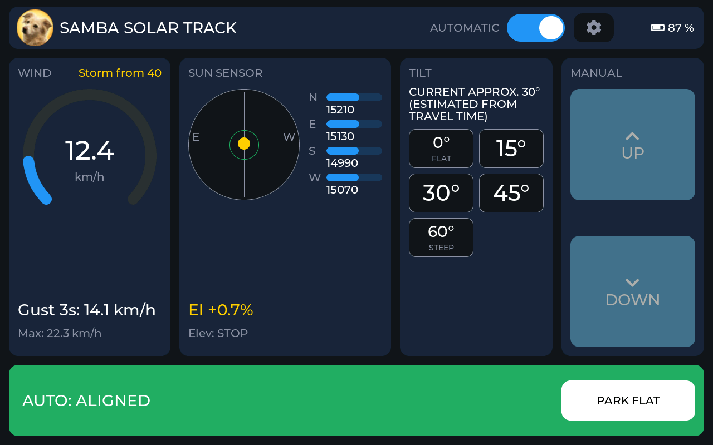
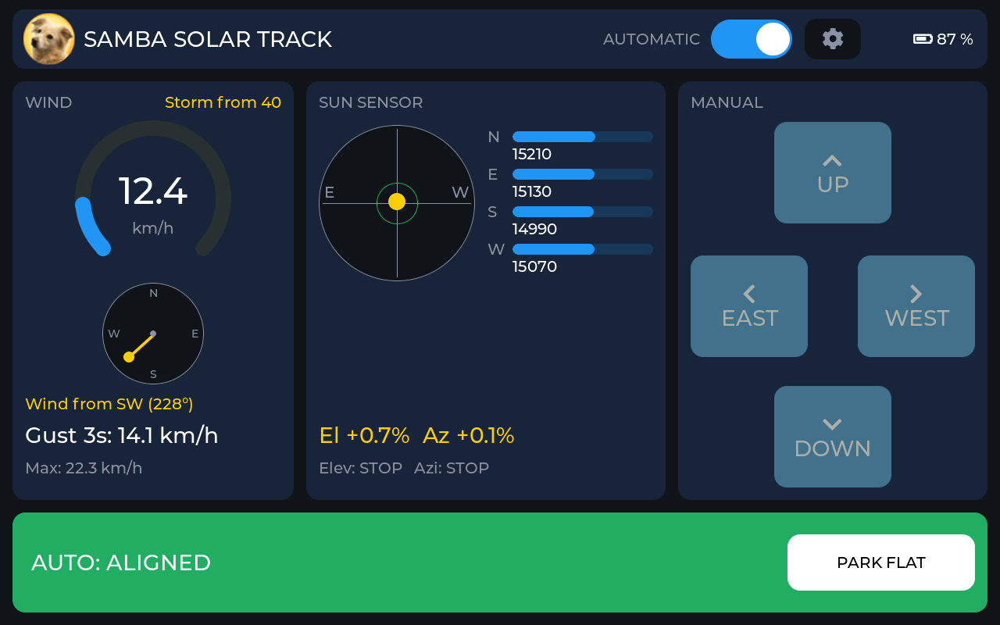
The other screens (setup, SETTINGS, network, time, remote access, design, sound, screen, firmware, calibration) also use the whole display: they are laid out for 1280 × 800 pixels, with large lettering (for example Fig. 24). The large dashboard was flashed onto the test board on 20.10.2026, and the device can then be reached on the network. How it looks there, whether fingers hit the buttons and whether it runs smoothly has not yet been confirmed; the enlarged other screens have only been built on the computer. The pictures here were generated by the screenshot tool from the real code of the user interface.
Display language (in preparation, generated on the computer, not checked on the device)
The display is available in seven languages: English, German, French, Spanish, Dutch, Portuguese and Polish. The factory default is English. At the very first start, the language selection therefore appears first (Fig. 13h), even before the setup. The buttons carry the name of the language in the language itself, for example DEUTSCH or FRANÇAIS, so that you can find your language even if you do not understand the currently selected one.
- Select the languageTap your language. Expected: The button turns blue with a tick, and all texts switch to this language immediately.
- NextAt the first start, tap the green NEXT button (in German: WEITER). Expected: The setup appears in the selected language. The choice is saved, even after a restart.
- Change laterOpen the setup (gear wheel in the dashboard) and tap the button with the name of the language at the top right, for example ENGLISH .... Expected: The language selection appears; after the selection, BACK leads back to the setup. The controller keeps running without interruption, including the storm protection.
The translations were created by machine by Claude on 28.10.2026; no native speaker has checked them (assumption). If a device already has older firmware and has been set up, it stays German after the update. The messages in the log always stay German. The web interface shows the same language as the device; you can also choose it there under SETUP (Fig. 23c). This manual is also available in all seven languages, as a page and as a PDF; you change the language at the top of the table of contents. The German version is authoritative; the other versions of the manual are also machine-translated and not checked by native speakers (assumption).
Sounds from the loudspeaker (in preparation, heard on the test board)
The 10.1-inch board has a built-in loudspeaker. The firmware that has been started uses it for sounds. On the test board the sounds can be heard on 20.10.2026 (firmware 0.4.6); volume levels and alarm sounds have not yet been checked individually. What is written here describes what the firmware contains for this.
| Sound | When | How often |
|---|---|---|
| Confirmation: a short, bright beep | every time you tap a button or a switch on the display | once per tap; can be switched off |
| Fault of an I/O chip: three short, high tones | the chip of the switching outputs on the RearCircuitBoard_10 does not respond | immediately, then every 20 seconds |
| Storm: three times high-low | the storm protection has laid the module flat | immediately, then every minute |
| Drive fault: two long tones | a drive has not reached its end position in time | immediately, then every 30 seconds |
| Anemometer failed: high, then low | the anemometer no longer responds, there is no storm protection | immediately, then every 2 minutes |
The alarm sounds play as long as the condition persists. If several exist at the same time, you only hear the most important one (in the order of the table). An alarm sound always takes precedence over the confirmation beep. As long as the setup has not been completed, there are no alarm sounds.
Adjusting: In the setup, the SOUND … button leads to a separate screen. There you switch the confirmation sounds on or off and set the volume in ten levels with the − and + buttons. Expected: After every change of volume, a short test tone sounds at the new level; the setting applies immediately and is kept after switching off. By default the confirmation sounds are on and the volume is set to level 7.
So that a storm or a fault is not missed, alarm sounds play at least at level 7, even if you set the volume lower. Louder than level 10 is not possible: this limit is built in, so that the power supply and the fuse of the RearCircuitBoard_10 are not overloaded even with a full alarm sound and a charging battery. Whether the levels are clearly audible on the real device and how much current the loudspeaker really needs will be measured as soon as the board is available; until then the limit is an assumption.
Standby and motion detector (in preparation, not checked on the device)
The 10.1-inch board has a built-in camera. The firmware that has been started uses it as a motion detector: if nobody stands in front of the display for a while, it shows a screensaver or switches off the backlight. When someone comes to the display, it lights up again by itself. So far this has only been built and tested on the computer; whether the camera reliably detects motion on the device has not yet been checked.
The firmware evaluates the camera images only in working memory to detect motion. It does not store any image, does not display any and does not send any over the network, not even to the web interface. Of each image, only the average brightness of small fields remains.
What happens:
- After the set waiting time without touch and without motion in front of the display, the screensaver appears (Fig. 13e): a dark area with the logo, the time, the status from the status bar in its colour and the wind. The text moves to a different place every 20 seconds, the light is dimmed. Or the display switches off completely, if you set it that way.
- Waking up: Motion in front of the display or a touch. The touch that wakes the display does not trigger anything: so you can tap anywhere without accidentally pressing a button. Only once you have lifted your finger does the next touch take effect.
- In case of danger the display stays on: In a storm, if the anemometer fails, in case of a drive fault or a fault of an I/O chip, the display lights up and stays on as long as the condition persists.
- The controller carries on working quite normally in standby, including the storm protection.
- In the dark (room without light) the camera does not detect any motion; then only a touch wakes it. If it suddenly becomes bright, for example because someone switches on the light or steps directly in front of the camera, the display also wakes up. Someone who stands completely still is no longer detected as motion after a few seconds.
Adjusting:
- Open the screenOpen the setup (gear wheel in the dashboard) and tap SCREEN … (Fig. 13d). Expected: The SCREEN screen appears.
- Choose the typeTap ALWAYS ON, SCREENSAVER or DISPLAY OFF. Expected: The selected button is blue with a yellow frame. With ALWAYS ON, the waiting time and the motion detector are irrelevant and locked.
- Set the waiting timeWith − and + you choose 1, 2, 3, 5, 10, 15, 20, 30, 45 or 60 minutes. Expected: The number in the middle changes.
- Motion detectorUse the switch to turn the motion detector on or off. If it is off, only a touch wakes the display. Expected: Next to it it says "MOTION SENSOR ON" or "OFF", below it "Camera ready." If it says "Camera unavailable" in orange, the firmware has not found the camera; then only a touch wakes the display.
- Check the motion detectorBelow it, a line continuously shows what the camera sees: frames per second, brightness (0 to 255) and how many fields are currently moving, for example "5 fps, brightness 92, motion 412 (from 96)". Wave at a distance of about one metre in front of the display. Expected: The number after "motion" rises above 96, and the line turns yellow; this motion would then wake the display. If it says "too dark", the room is too dark for the camera; if it says "Camera idle", ALWAYS ON is selected or the motion detector is off. Write down the values in case waking does not work: they help with the adjustment.
- Battery fittedWith the BATTERY FITTED switch you show or hide the battery level at the top right of the dashboard (Chapter 7). Expected: Next to it it says "BATTERY FITTED" or "NO BATTERY"; in the dashboard the indicator appears or disappears, and the gear wheel and AUTOMATIC shift accordingly.
- BackTap BACK. Expected: The setup appears again. Everything applies immediately and is kept after switching off; a restart is not necessary.
By default, standby is set to screensaver after 5 minutes with the motion detector switched on (suggestion, not yet final). This cannot be set remotely (web interface, ioBroker).
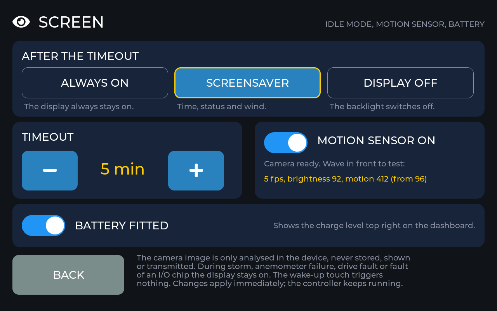
On the test board (21.10.2026) the screensaver appears, and a touch wakes the display; motion does not wake it yet. In addition, the device restarted immediately when new firmware was installed over the network; the next firmware therefore stops the camera before it writes. Flash this firmware once via USB (Flashing the firmware for the first time); after that it works over the network again. The next firmware also determines by itself in which part of the image data the brightness is stored, and shows the camera's measured values on the SCREEN screen (step "Check the motion detector"). Still open is whether the camera is found, how reliably it detects motion (distance, light, false alarms for example due to flickering light or animals), whether the display stays steady while the camera is running and whether the dimmed brightness of the screensaver is suitable. The detection thresholds are estimated (assumption) and will be adjusted after the test.
New firmware from the internet (in preparation, not checked on the device)
The firmware for the 10.1-inch board can check by itself whether there is newer firmware and install it from the internet at your request. This too has so far only been built and tested on the computer. What is written here describes what the firmware contains for this.
For the device to accept new firmware, it must be signed with the project's key (signature). The current key has been included since firmware 0.4.7. Older firmware (up to 0.4.6) only knows an earlier key that is no longer used: a device with this firmware will never find a new version over the internet. In that case, install 0.4.7 once via the web interface (SETUP, firmware update) or via the USB cable as above; after that it continues over the internet. Whether checking and installation on the device work as described here will only be tried with versions 0.4.7 and 0.4.8. If the check reports an error (for example "no connection to release source"), the INSTALL button stays locked.
What the device does by itself: When Wi-Fi is connected, it checks once a day (the first check 2 to 20 minutes after connecting). For this it downloads a small file, the manifest, over an encrypted connection (HTTPS) from the project's release source at https://firmware.samba-solar.de/. It never installs by itself. If there is a newer version, the header shows NEW FIRMWARE in small yellow letters at the top, with the number below it. There is no sound for this.
Viewing and installing:
- Open the screenGear wheel at the top right, then the FIRMWARE … button in the setup. The button only exists once the setup has been saved. Expected: The FIRMWARE screen shows the running version with its build date, when the last check took place, and the result.
- Check now (optional)Button CHECK NOW. This is possible at most once per minute and only with Wi-Fi connected. Expected: After a few seconds it shows "UP TO DATE", "NEW FIRMWARE AVAILABLE" with number, date and short text, or "CHECK FAILED" with the reason.
- InstallButton INSTALL (only with "NEW FIRMWARE AVAILABLE"), and confirm the prompt with INSTALL. Expected: "DOWNLOADING …" with a bar. The controller keeps regulating quite normally, including the storm protection. With CANCEL you can stop the download; then nothing changes.
- Flat positionAfter downloading, the device checks the file. Then the elevation moves to the flat position, as when parking. Expected: The FIRMWARE screen shows "MOVING TO THE FLAT POSITION BEFORE WRITING", the status bar shows parking, and the module lies down flat.
- Writing and restartOnly when the elevation is flat does the device switch off all outputs and write the new firmware. Expected: Above the screen it says "FIRMWARE UPDATE – Verified firmware is being written"; then the controller restarts. The settings are kept.
- After the restartDo nothing and let the device run for at least two minutes. Expected: The new version is shown on the FIRMWARE screen, and the module stays flat for now. After two minutes the new firmware confirms itself, as soon as the display and the RearCircuitBoard_10 are working and – only if Wi-Fi is switched on – the device has connected to Wi-Fi at least once since the restart (the self-test). Then it cancels parking and moves to the previous position: the automatic tracks again, or a chosen angle is approached again.
Before every update, from the internet as well as via the web interface, the elevation moves to the flat position. This way the module lies flat if something goes wrong during the update. If the flat position is not reached, the device writes nothing and the current firmware keeps running; the reason is shown on the FIRMWARE screen and in the web interface. This happens in manual mode (switch on AUTOMATIC first), on a fault, when a storm begins, when someone cancels parking, or when the movement takes longer than the maximum run time plus about half a minute. If there was no park request before, the previous position applies again afterwards. If the device returns to the previous firmware after a failed self-test, that firmware also moves back to the previous position (assumption: not yet tried on the device). If you set or cancel parking yourself before that happens, your choice applies.
Writing takes an estimated one minute or so (assumption, not yet measured). During this time all drives are stopped, and the module is not laid flat in a storm. That is why the installation does not begin while the storm protection is active or a drive is moving. If a storm comes during the download or between download and writing, the device aborts and discards the downloaded file, even if the storm is quickly over again; you then have to confirm the installation again. It is best to install in calm weather.
If the new firmware hangs or restarts within the first two minutes, the device automatically starts the previous firmware again. The same happens if it does not pass the self-test in time (for example because the display or the RearCircuitBoard_10 does not respond or because it never connects to Wi-Fi): it then first switches off all outputs and starts the previous firmware. The deadline is 12 minutes after the restart; if Wi-Fi is switched on, 30 minutes, so that a router that is briefly down does not immediately lead to a rollback. If Wi-Fi is switched off, it plays no role in the self-test. Both deadlines are suggested values, not yet tried on the device. As long as the new firmware is waiting for the self-test, an orange band is shown at the top between the product name and AUTOMATIC across all screens: the time until the check, then "FAILED", the state of the conditions (OUTPUTS and WI-FI: OK, MISSING or OFF) and the time until the rollback. Without the RearCircuitBoard_10 board it says "NO BOARD: SWITCH ON SIMULATION" (Fig. 13c). Why the self-test fails is also written in the log. After a rollback, the display reports "UPDATE ROLLED BACK"; tap OK.
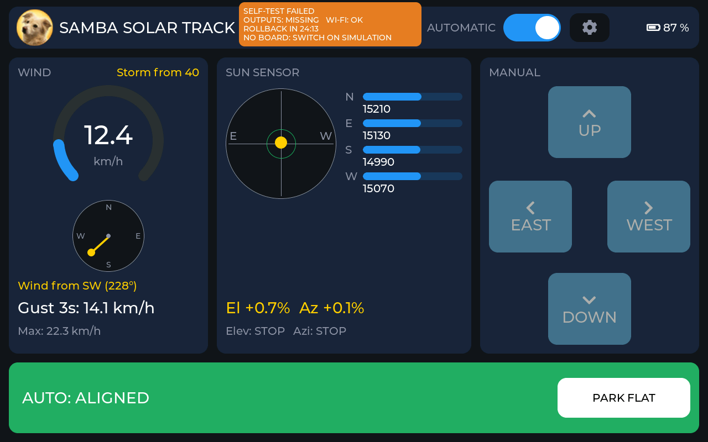
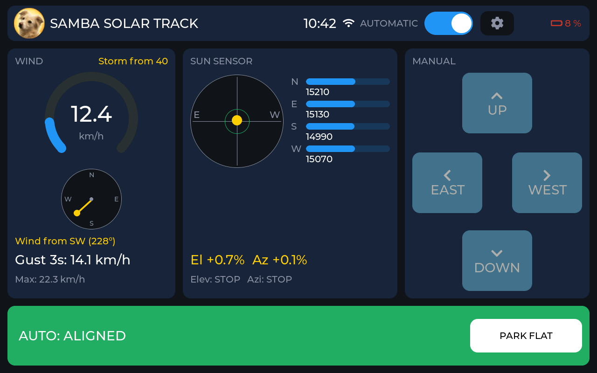
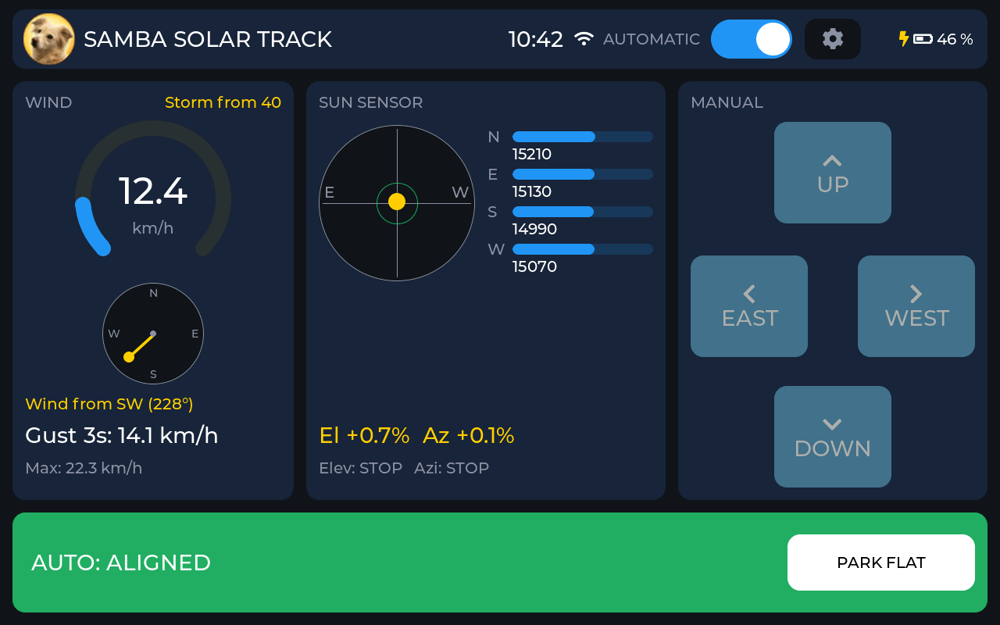
The same version is then no longer offered in the header, but can still be installed again on the FIRMWARE screen. On the 10.1-inch board this also applies to an update via the web interface.
Remotely: In the web interface, under SETUP, there is the block "Firmware from the internet" with the same information and the buttons CHECK NOW and INSTALL. Only a logged-in device (token) may operate it, and the "Remote control locked" switch on the display locks both. The daily check continues even when remote control is locked.
When checking, the device only sends a simple request with its firmware version; no identifier, no password, no token. Like any website, the project's site sees the public IP address of your internet connection. There is no switch to turn off the check; without Wi-Fi it does not take place.
Tilt on command: moving to a fixed angle (in preparation, not checked on the device)
Instead of tracking the sun, the elevation can move to a fixed angle on your command, for example a flat one in summer or a steep one in winter. After that, the automatic pauses until you cancel the request. This exists only in the 10-inch version and only in the VERTICAL ONLY operating mode. With two axes (vertical + horizontal), the TILT card, desired angles, travel times and frame are hidden. This function too has so far only been built and tested on the computer; the pictures were generated by the screenshot tool from the real code of the user interface.
By default there is no sensor for the tilt. The firmware calculates the tilt from the time during which it actually switched the drive on and from the calibrated travel times. That is why the display always shows "~30°" or "UNKNOWN", never an exact number. How accurate this is is described further below; all information on this is assumptions until it has been measured on the rack. It gets more accurate with the Hall tap: the firmware then counts the pulses of the drive and shows the tilt without "~".
Which angles there are: always 0° (flat), 30° and 60° (steep), plus up to two preset angles that you set under SETTINGS (whole degrees from 1 to 59, not 30, not the same one twice; 0 means off). The buttons are always arranged by angle. As long as the travel time has not been calibrated, only 0° and 60° are possible; the other angles are greyed out.
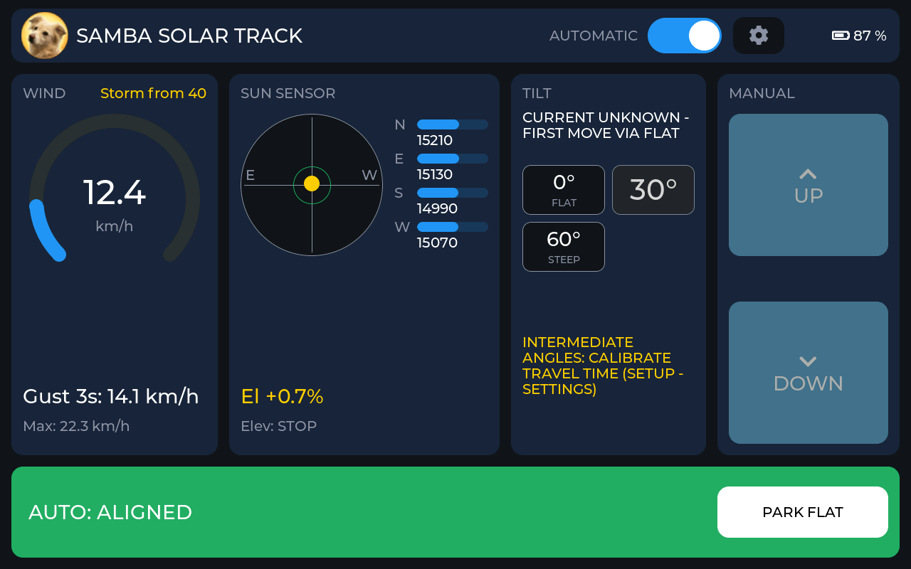
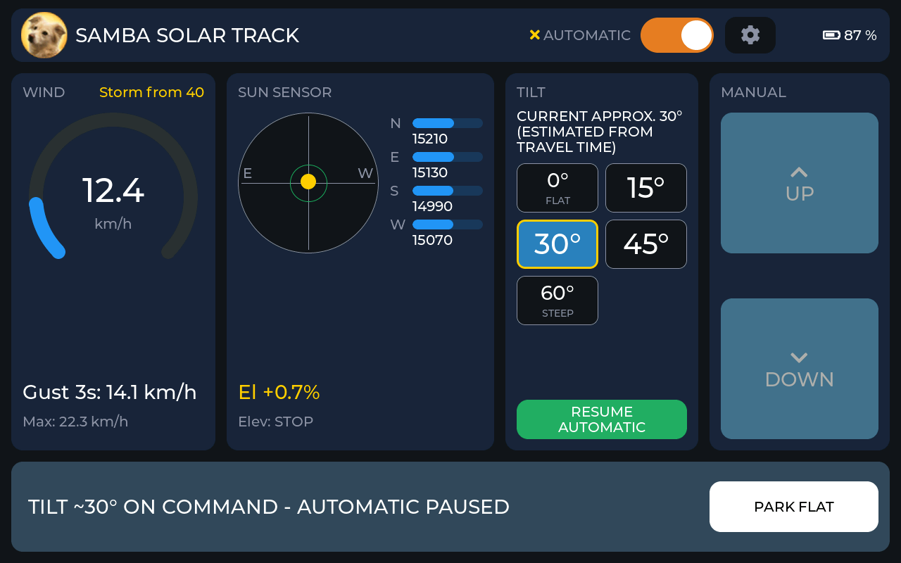
| Display in the TILT card | Meaning |
|---|---|
| CURRENT UNKNOWN - FIRST MOVE VIA FLAT | The position has not been known since switching on, or the estimate is too uncertain (more than 6°). |
| CURRENT APPROX. 31° (ESTIMATED FROM TRAVEL TIME) | Estimated tilt. |
| Angle button blue with yellow border | This tilt on command is in effect, even during storm, parking or manual mode. Below it is the RESUME AUTOMATIC button. |
| AUTOMATIC switch orange, with a yellow cross in front | The automatic is switched on but paused, because a tilt on command is in effect. With RESUME AUTOMATIC the switch turns blue again and the cross disappears. |
| NOT AVAILABLE | Without a completed setup there is no tilt on command; the buttons are locked. |
Moving to an angle:
- Read the positionLook at the TILT card in the dashboard (Fig. 14 or 15). Expected: At the top it says "CURRENT APPROX. 31° (ESTIMATED FROM TRAVEL TIME)" or "CURRENT UNKNOWN - FIRST MOVE VIA FLAT".
- Choose the angleTap the desired angle in the card. Expected: The button turns blue with a yellow border, RESUME AUTOMATIC appears below it, the AUTOMATIC switch at the top turns orange with a yellow cross in front of it, and the status bar shows the sequence (next step).
- WatchIf the position is unknown or too uncertain, the elevation first moves flat to the end position, the reference move. Without limit switches it takes the full maximum run time (90 seconds on the Samba Solar Rack 2.0-E Plus), even if the frame has long since stopped. Then follows the move to the angle. Expected: one after the other "TILT 45°: REFERENCE MOVE TO FLAT POSITION", "TILT 45°: MOVING STEEPER, ~12°" and finally "TILT ~45° ON COMMAND - AUTOMATIC PAUSED" (Fig. 17). There is no readjustment afterwards.
- Back to automaticTap RESUME AUTOMATIC in the card. Expected: The status bar shows AUTO again, the AUTOMATIC switch is blue again without a cross, and tracking starts again.
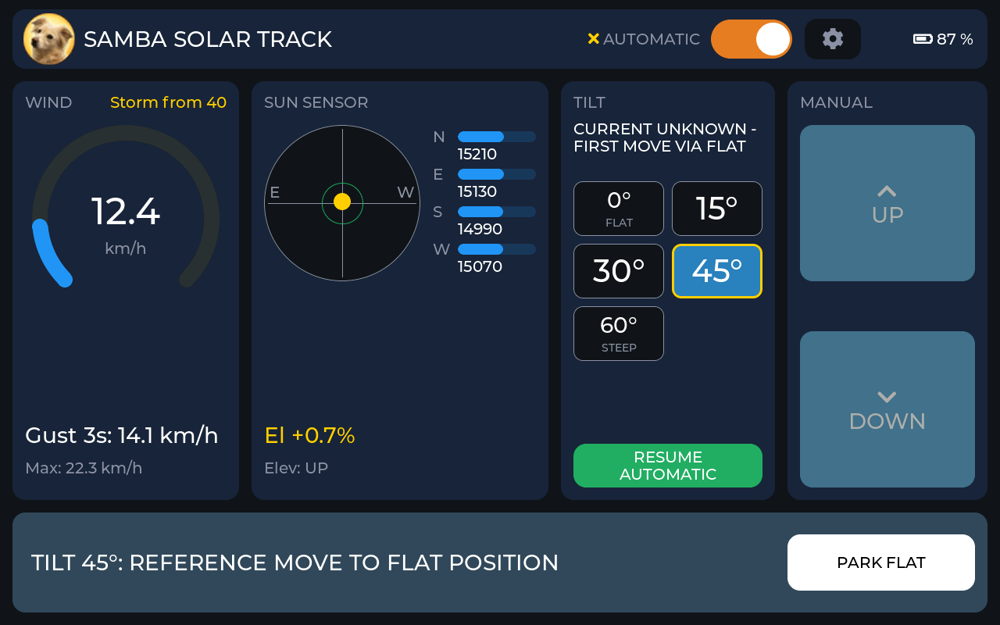
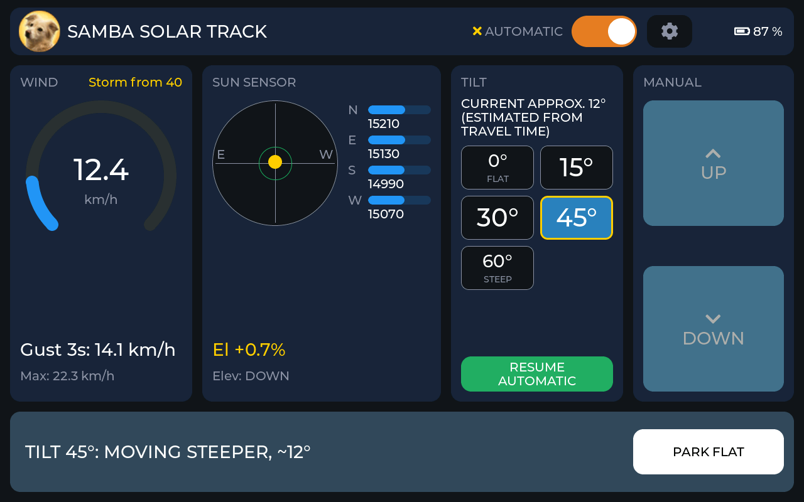
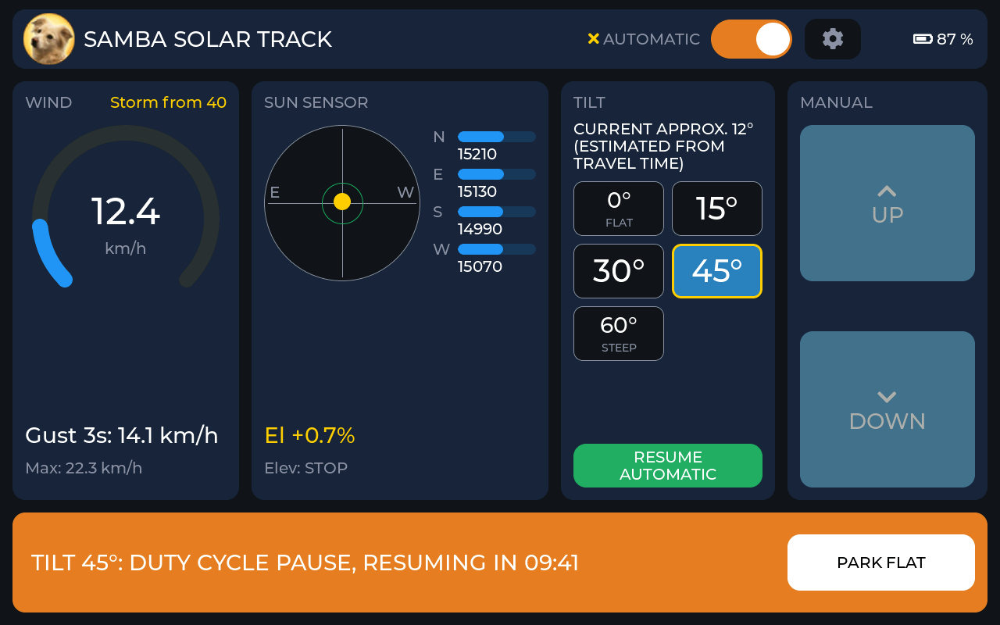
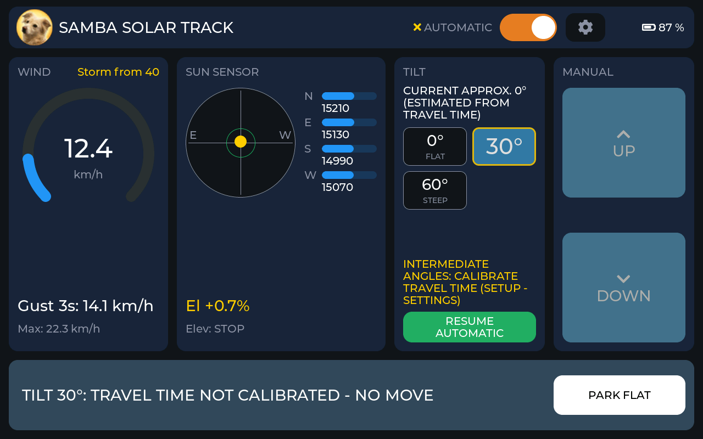
What has priority (the controller's order of priority): missing setup, fault of an I/O chip, storm, drive fault, manual mode, parking on command and anemometer failure come first. Only after that comes the tilt on command, and it in turn takes precedence over sensor faults, night and automatic. So the tilt on command also applies at night and when the sun sensor is faulty.
| Situation | What happens |
|---|---|
| Storm, anemometer fails | Take precedence: the elevation moves flat. Afterwards it moves back to the commanded angle by itself. The card says "STORM PROTECTION HAS PRIORITY - ANGLE IS APPROACHED AFTERWARDS" (Fig. 22). |
| PARK FLAT | Remains a separate button and takes precedence ("PARKING HAS PRIORITY …"). After parking is cancelled, the system moves back to the angle. |
| Manual mode (automatic off) | The tilt on command is suspended; it takes effect as soon as the automatic is on again ("TAKES EFFECT ONCE AUTOMATIC IS ON"). |
| Fault | Takes precedence ("FAULT HAS PRIORITY"), nothing moves. |
| Power failure, restart | The commanded tilt remains stored, like the parking request. After switching on, however, the position is unknown: the first move to an intermediate angle begins with a reference move. |
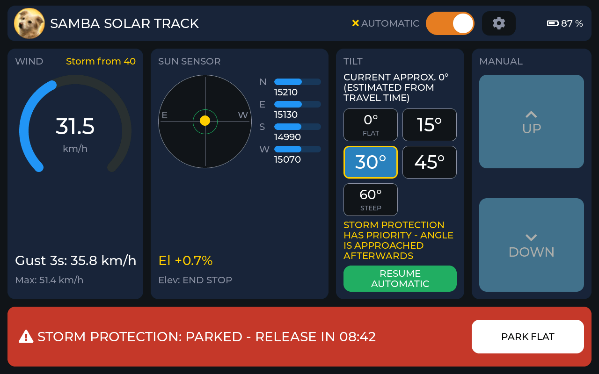
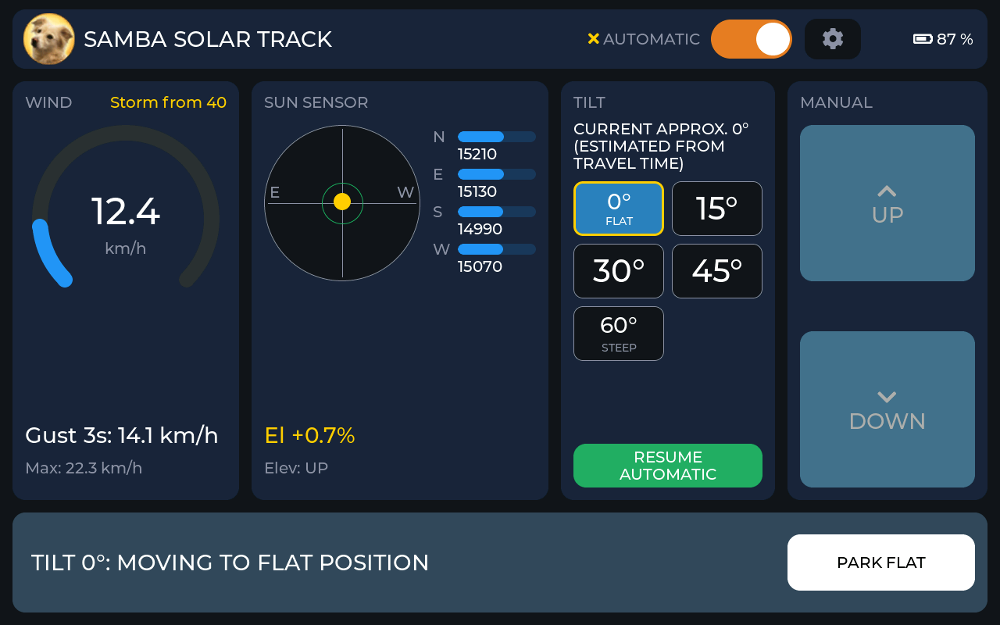
In the browser: For the 10-inch version, the web interface shows the same layout as the display (Fig. 23a and 23b): on a wide screen (PC, tablet, phone in landscape) the header, the cards WIND (with compass rose if an anemometer with direction is set up), SUN SENSOR, TILT and MANUAL in the same widths and the status bar below; on the phone one below the other. The TILT card has the same buttons and the text "Current approx. 31° (estimated from travel time)". As on the display, the AUTOMATIC switch is orange with a yellow cross in front of it while a commanded tilt pauses the automatic, and the battery with its charge level and, while charging, the yellow lightning bolt is shown at the top right; on a phone the battery appears small below the name (Fig. 23c). Under SETUP you also choose the language: tapping changes it on the display and in the browser at the same time. Only a logged-in device may operate it, and only if remote control is not locked. Calibration is only available on the display. The pictures come from the preview tool of the web interface (python3 tools/web_vorschau.py) with a simulated device, not from the real tracker.
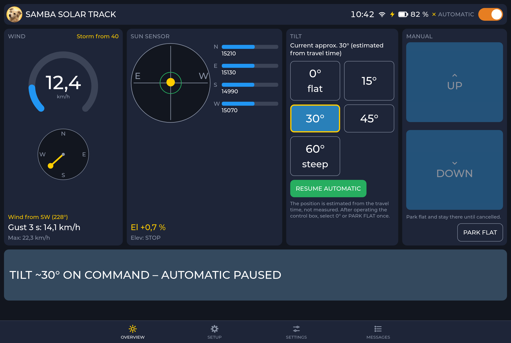
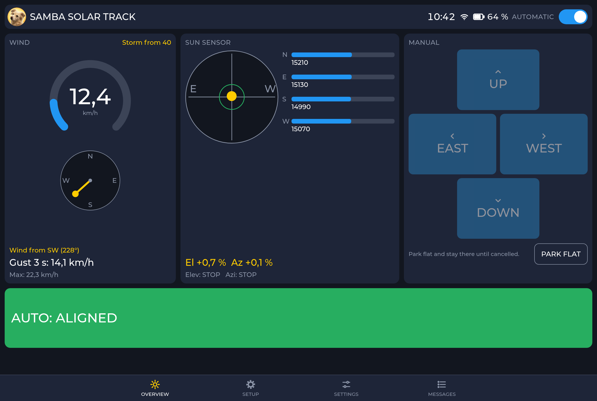
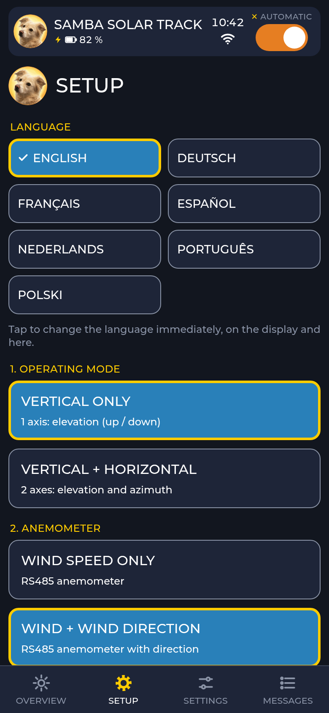
Setting preset angles, travel times and frame
The values are in the setup under SETTINGS: the two preset angles in the CONTROL group, the travel times, the frame, the start-up loss and the three values of the Hall tap in the COMMISSIONING group. The values of the COMMISSIONING group can only be changed while no drive is moving.
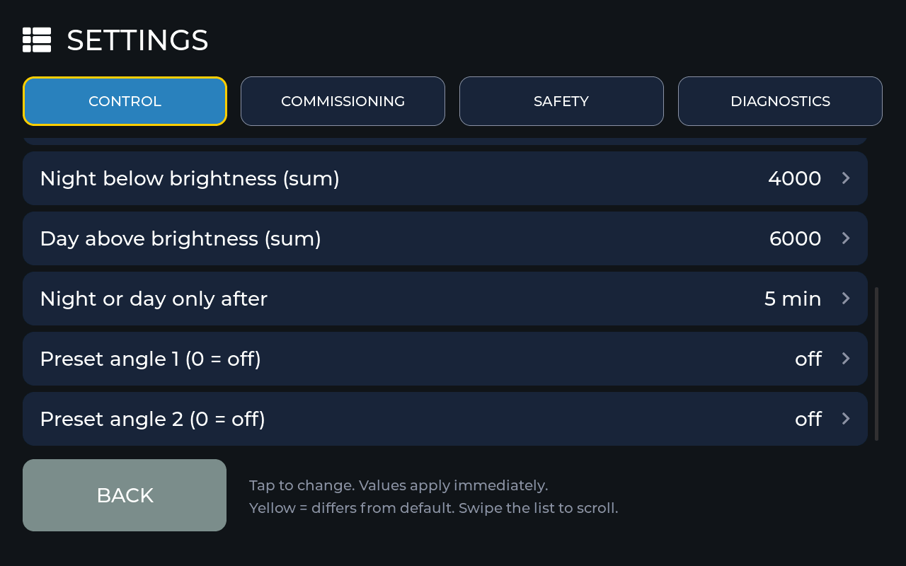
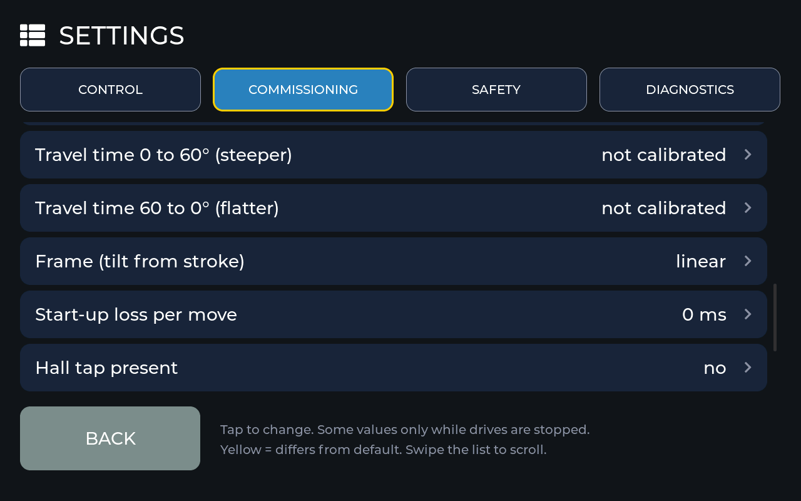
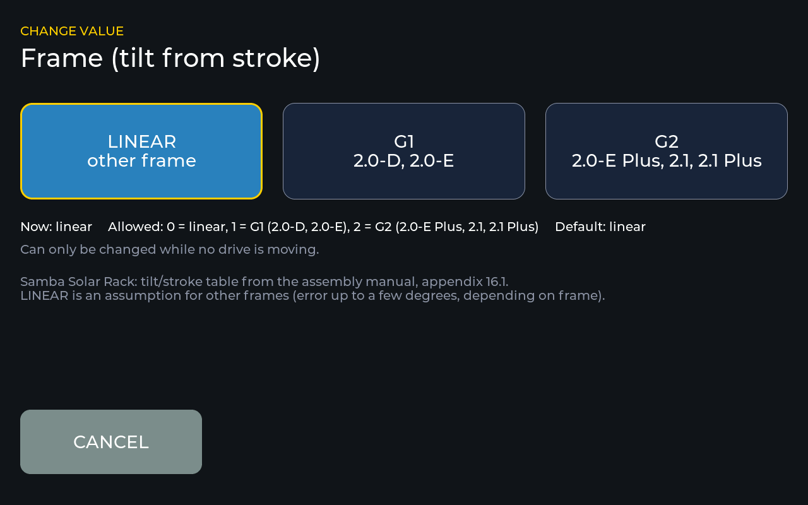
| Value | Default | Permitted | Purpose |
|---|---|---|---|
| Travel time 0 to 60° (steeper) | not calibrated | 10 to 300 s | Time for the whole travel from flat to steep. Best calibrated. |
| Travel time 60 to 0° (flatter) | not calibrated | 10 to 300 s | Time for the travel back. Best calibrated. |
| Frame (tilt from stroke) | linear | linear, G1 (2.0-D, 2.0-E), G2 (2.0-E Plus, 2.1, 2.1 Plus) | Converts the travel of the drive into degrees (table from the assembly manual, Appendix 16.1). |
| Start-up loss per move | 0 ms | 0 to 3000 ms | Part of every move during which the frame is not yet moving. |
| Preset angles 1 and 2 | off | 1 to 59°, not 30, not twice; 0 = off | Additional buttons in the TILT card. Applies immediately. |
The travel times only apply if they are shorter than 0.9 × the maximum run time of the elevation. If you set the maximum run time shorter, they count as not calibrated until the values fit again. "LINEAR" is an assumption for other frames; on a G2 frame it would be off by up to about 2.6°. If you change a preset angle that is currently commanded, or switch it off, the tilt on command remains in effect; RESUME AUTOMATIC cancels it. For the Samba Solar Rack 2.0-E Plus (synchronous controller HAKIWO SCN4, no limit switches on the tracker) the following also applies: "Elevation limit switch fitted" = no, max. run time elevation 90 s. Entered by hand, it would be about 75 s for the 2.0-E Plus according to the assembly manual; calibrating is more accurate.
Calibrating the travel time
Once during commissioning and, if possible, again in autumn and spring: temperature changes the speed of the drives (assumption, not measured). Location: Setup → SETTINGS → COMMISSIONING → CALIBRATE TRAVEL TIME (bottom line; scroll the list down for it, Fig. 34; with Hall tap the button is called CALIBRATE: TRAVEL TIME AND HALL STEPS). Control and storm protection keep running in the meantime.
- PrepareClear the swivel range: nobody is standing at the frame, nothing is in the way. Open the CALIBRATE TRAVEL TIME screen. If the automatic is ON, tap AUTOMATIC OFF. Expected: "STEP 1 OF 4: PREPARE" (Fig. 27), after which START can be selected.
- STARTTap START. Expected: "MOVING FLAT TO END POSITION" (Fig. 28). Without limit switches the contact stays closed for the full maximum run time, even if the frame has long since stopped. If the duty cycle does not quite allow this, it says "WAITING FOR DUTY CYCLE" with the remaining time.
- MEASURE UPTap MEASURE UP. The time runs (Fig. 29). Tap ARRIVED as soon as the frame stops and the motor noise stops (the drive is then at its own limit switch). Expected: "UP measured" with the time to a tenth of a second. With limit switches on the tracker and with Hall tap, the measurement ends by itself.
- PauseA pause of about 15 minutes is recommended so that the drives cool down (duty cycle; Fig. 30). The pause is not enforced. Expected: The screen shows the recommendation and the MEASURE DOWN button.
- MEASURE DOWNTap MEASURE DOWN and again ARRIVED as soon as the frame is flat. Expected: The second time appears. If the drive stops in the middle of the measurement because of a duty cycle pause, the screen shows "DUTY CYCLE PAUSE … NOT arrived" (Fig. 31): then do not tap; the measurement continues by itself afterwards.
- ApplyThe screen shows both times (Fig. 32). Tap APPLY. Expected: Under SETTINGS the times are shown instead of "not calibrated"; in the TILT card all angles can be selected.
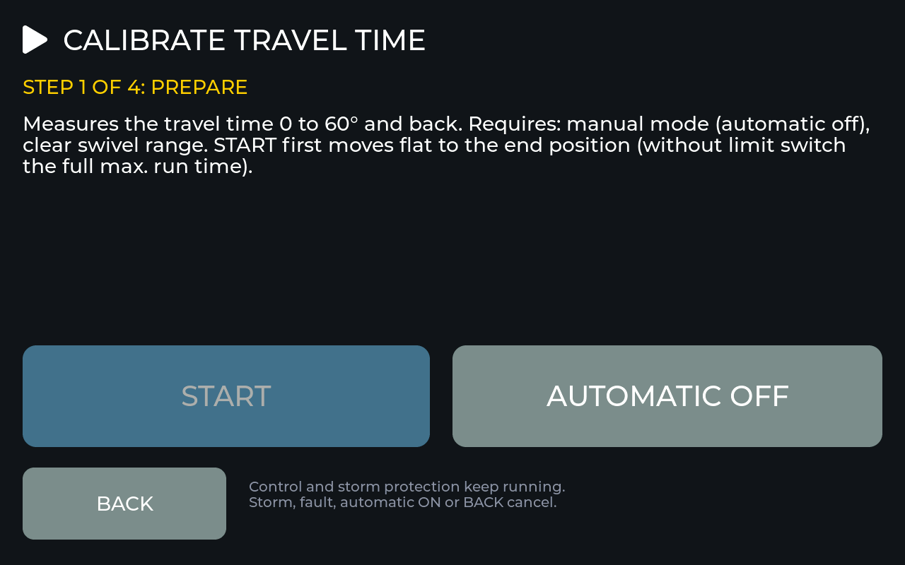
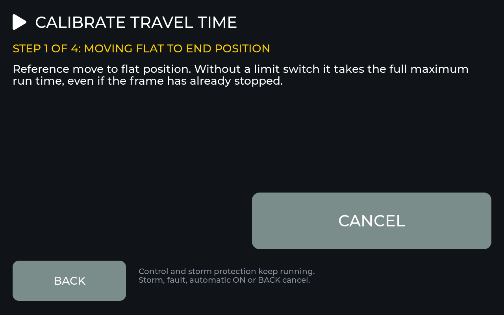
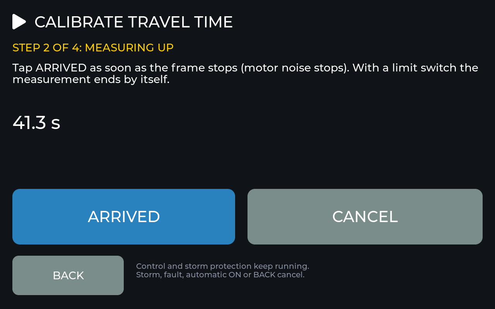
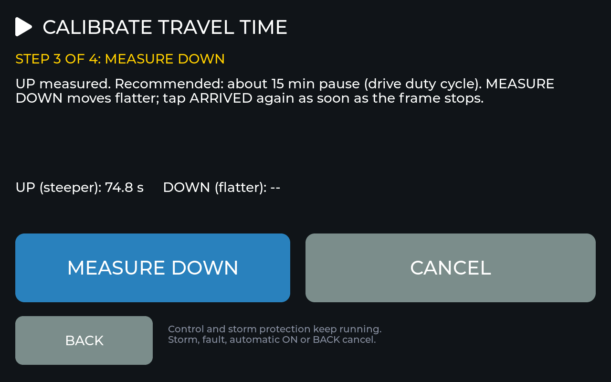
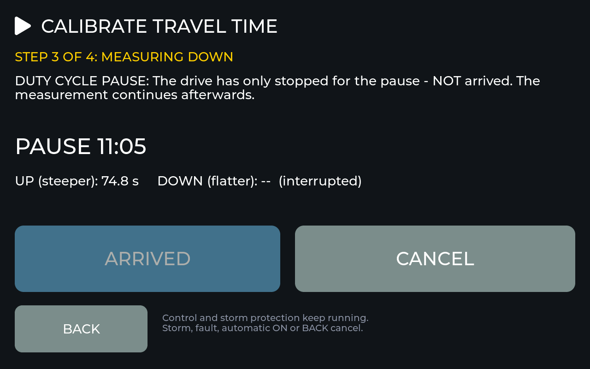
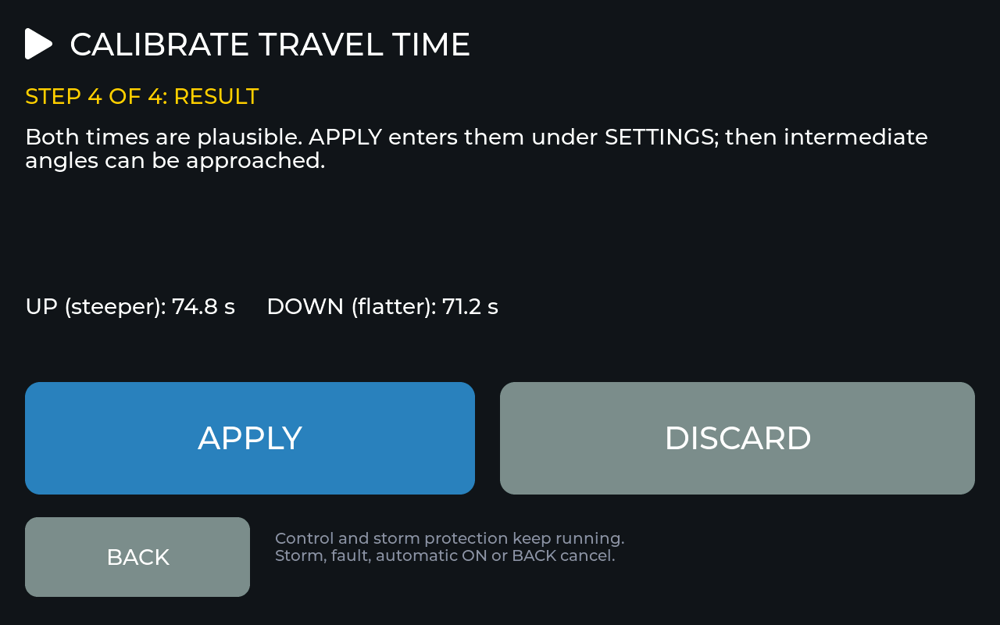
The firmware checks the measurement: each time must last at least 10 seconds and be shorter than 0.9 × the maximum run time, and UP and DOWN may differ by at most a factor of 2. Otherwise the reason appears in yellow lettering, and nothing is applied (Fig. 33). Storm, a fault, automatic ON or BACK abort the calibration. While you are calibrating, the device rejects manual moves from remote.
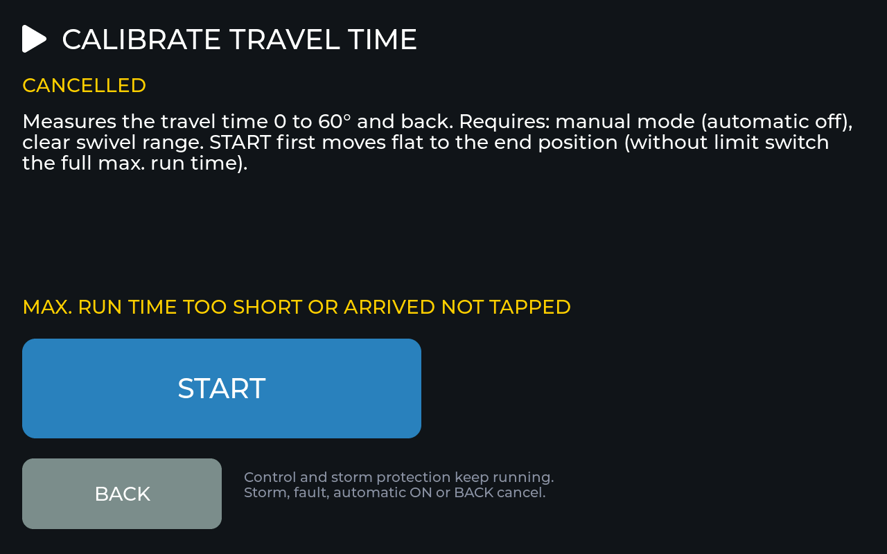
How accurate is it?
All figures in this table are assumptions, not measured. They will be checked on the rack.
| Source of deviation | Order of magnitude |
|---|---|
| End positions of the mechanics | 0° ± 1°, 60° ± 1.5° (assembly manual) |
| Table of frame G1/G2 | below 0.1° |
| Speed after calibration (load, voltage) | about ± 3 to 5 % of the travel, ± 1 to 1.5° at 30° |
| Temperature (winter versus calibration in summer) | up to about 3 to 6° at 30° |
| Start-up and overrun per move | up to just under 1° per move |
Expectation: a move from a reference ± 1 to ± 3°, in winter with a calibration from summer up to about ± 5°. At standstill the estimate does not change. After a day of automatic with many short tracking moves it is usually "UNKNOWN"; the first move to an intermediate angle then begins with a reference move. With every move the uncertainty grows; if it is at most 3°, the elevation moves directly, otherwise flat first. Fixed values for this (0.3° per move, plus 8 % of the degrees travelled, tolerance 1°, shortest move 0.5 s, 2° surcharge after a reset in the middle of a move) are built into the firmware and are also assumptions.
If you move the module at the control box (rocker switch, radio remote control, buttons of the synchronous controller) or with the hand crank, the estimate is no longer correct. Afterwards, select 0° or PARK FLAT once, so that the firmware has a reference again. With the Hall tap switched on, it counts movements via the synchronous controller, as long as its pulses arrive.
Without limit switches on the tracker, an end position counts as reached when the contact has been closed for the whole maximum run time (run-time end position). If the drives had no voltage during this (the power supply was off and the board was running on the battery, the fuse of the drives had tripped, or with two power supplies the one for the drives was off) or if the synchronous controller (for example HAKIWO SCN4) aborted the move without feedback, this reference is not correct, and neither is the estimate afterwards. Without Hall tap the firmware cannot detect this; that is why it never shows more than "~". With Hall tap it detects it from the missing pulses.
After a restart without loss of power (setup saved, update, crash), the firmware takes over the estimate from a memory that survives the restart; if a drive was moving at the moment of the reset, the estimate becomes 2° less certain. Whether this memory holds on the board is an assumption. If the drives have no power during a move (power supply off and board running on the battery, fuse of the drives tripped) or the synchronous controller aborts the move, the contacts still close; after the max. run time the firmware then remembers a wrong run-time end position and a wrong tilt. That is why it moves flat again during a storm, an anemometer failure and parking (see below). Whether the drive really moves is detected by the Hall tap, if it is fitted and switched on (also only checked on the computer). In the simulation the function runs with simulated drives; their position is never carried over into real operation.
[ 120.010][I][main ] Neigung auf Befehl: 45 Grad (vorher keine), Quelle Display [ 120.010][I][track ] Neigung 45 Grad: Bezugsfahrt noetig [ 210.020][I][elpos ] Bezug Flachstellung (Laufzeit-Endlage), Stellung war unbekannt [ 210.540][I][track ] Neigung 45 Grad: Zielfahrt STEILER von ca. 0.0 Grad, erwartet 55.1 s [ 266.160][I][track ] Neigung 45 Grad erreicht: ca. 45.0 Grad nach 55.6 s, Unsicherheit 3.9 Grad
The lines are an example in the firmware's format; the numbers are calculated for the Rack 2.0-E Plus with frame G2 and 75 seconds of travel time. The status line every 5 seconds then ends with „| Neigung ca. 45 Grad (+-4), Ziel 45“ (tilt approx. 45°, target 45).
With Hall tap (more accurate)
What is it? The elevation drive has a Hall sensor: with every revolution of its motor it outputs short pulses. The small HallTapBoard in the control box picks up these pulses at the synchronous controller (the Hall tap) and passes them on via optocouplers, galvanically isolated, to the pulse input J22 of the controller (Chapter 6). The controller counts them with its pulse counter and thus knows how far the drive has moved. It no longer has to estimate the tilt from the travel time. This exists only in the 10-inch version and only in the operating mode VERTICAL ONLY. Only the pulses of drive 1 are counted.
The evaluation has only been built and tested on the computer. The HallTapBoard is a draft (0.3) and has not been manufactured yet; whether the HAKIWO SCN4 synchronous controller tolerates the tap has not been clarified yet (Chapter 6). The screenshot tool generated the images from the real code of the user interface.
Without it, tilt on command works as described above: estimated from the travel time, with “APPROX.” in front of the number. You do not need the Hall tap to use tilt on command.
Switching on – step by step:
- ConnectInstall and connect the HallTapBoard (Chapter 6) and plug its cable into J22 of the RearCircuitBoard_10 board (pulse input HALL). Expected: Nothing is visible on the display; on the HallTapBoard “24V” (yellow) and “5V OK” (green) light up.
- Switch onOn the display: gear → SETTINGS → COMMISSIONING, swipe the list all the way down, tap “Hall tap present” and select YES (Fig. 34). This is only possible while no drive is moving. Expected: The line shows “yes” in yellow, because the value differs from the default. The bottom button is now called CALIBRATE: TRAVEL TIME AND HALL STEPS.
- CalibrateAutomatic off (manual mode), then open CALIBRATE: TRAVEL TIME AND HALL STEPS. The screen is still called CALIBRATE TRAVEL TIME. Proceed as for calibrating the travel time above: START, MEASURE UP, pause, MEASURE DOWN. The measuring moves end by themselves as soon as the frame stops (Fig. 35). You only need ARRIVED if the frame has visibly stopped and the time keeps running anyway. Expected: The result shows a time and a number of Hall steps for UP and for DOWN each, the two numbers roughly the same (Fig. 36).
- ApplyTap APPLY. Expected: Under SETTINGS, “Hall steps per stroke” shows a number instead of “not calibrated” (the average of UP and DOWN), and the travel times show the measured times.
- If it does not workIf “HALL COUNTS BACKWARDS - INVERT COUNT DIRECTION (SETTINGS)” appears during calibration, or “HALL TAP FAULT” in the header: SETTINGS → “Invert Hall count direction” → YES, then calibrate again. Expected: The message no longer appears at the next calibration. If it says “TOO FEW HALL STEPS - CHECK HALL TAP”, hardly any pulses are arriving: check the cable at J22 and the HallTapBoard (both lamps must be lit, Chapter 6).
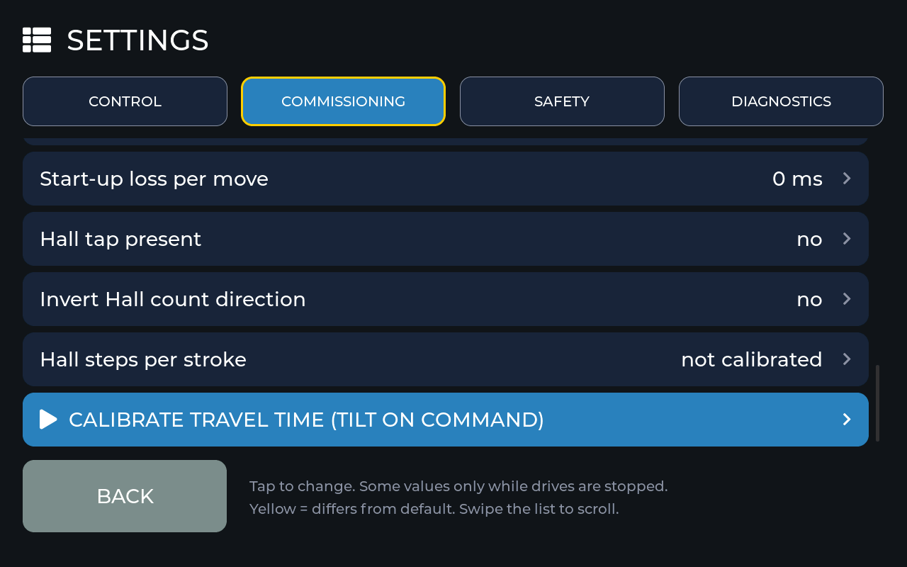
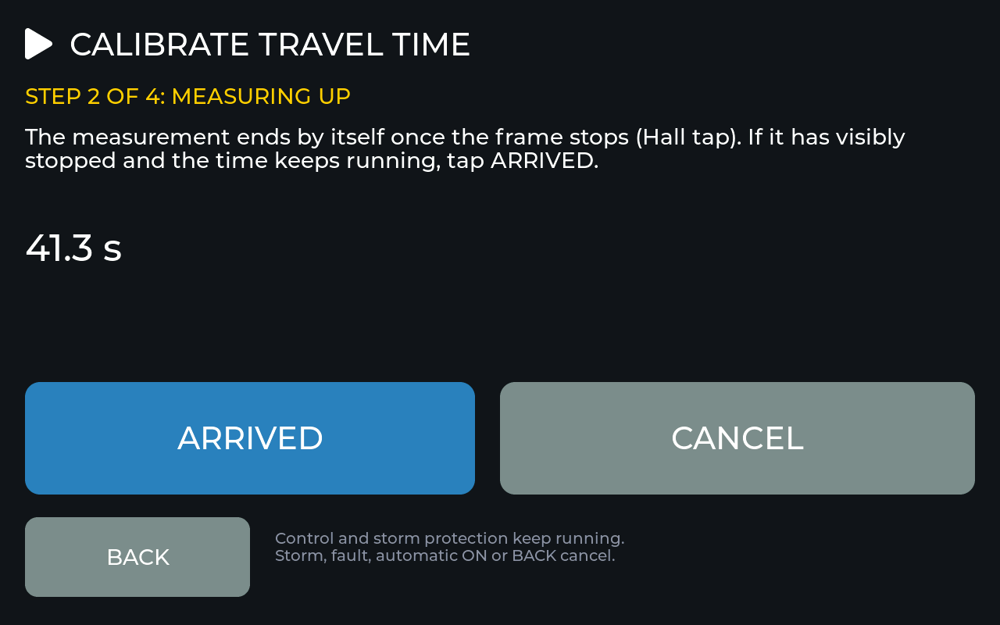
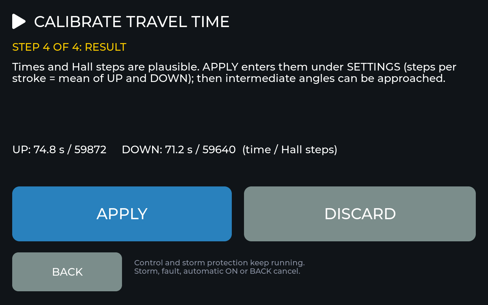
The firmware checks the result: the times must pass the check described above, UP and DOWN must each count at least 1,000 Hall steps and may differ by at most 3 % (suggested value). Otherwise the reason is shown in yellow text and nothing is applied.
In operation:
- The TILT card shows the counted tilt without “APPROX.”, for example “CURRENT 30° (HALL TAP)” (Fig. 37). How accurate this is will be measured on the rack; 0.2° is assumed (assumption).
- After switching on, the tilt is unknown until the elevation has reached an end position once. The first move to an intermediate angle therefore begins with a move to the flat position (reference move). With the Hall tap it ends as soon as the drive stops, not only after the max. run time (standstill end position). After that, the elevation moves directly to the angle and switches off earlier by the learned overrun.
- If the drive stops in the middle of its travel (for example because the drives have no power or the synchronous controller has aborted), the controller ends the move; the log reports „Antrieb steht ohne Endlage“ (drive stopped without end position). The tilt remains known.
- If you move the module at the control box (buttons of the synchronous controller), the controller counts along; the tilt stays correct.
- During a storm, an anemometer failure and PARK FLAT, the elevation moves all the way to the flat position as always. The Hall tap never aborts this move in the middle of its travel. If the elevation is verifiably already flat, the move ends after about 1.5 seconds; if the tilt is unknown, it takes the full max. run time, just as without the Hall tap.
- As long as “Hall steps per stroke” is not calibrated, the display keeps showing the estimate with “APPROX.”; ending a move on standstill, however, already works.
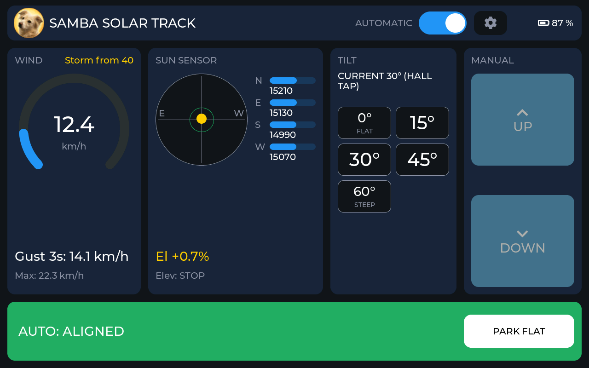
The controller is not counting matching pulses: none arrive although the drive should be moving, they count against the direction of travel, or far too many arrive (interference pulses). Check the cable at J22, the HallTapBoard (lamps “24V” and “5V OK”), the power supply of the drives and the count direction. As long as the warning is shown, only 0° and 60° can be selected; intermediate angles show “HALL TAP FAULT - NO MOVE” (Fig. 38). Storm protection, parking, automatic and manual mode continue to work as without the Hall tap. As soon as a move delivers matching pulses again, the warning disappears by itself; the tilt is known again from the next end position. The same warning appears in the web interface.
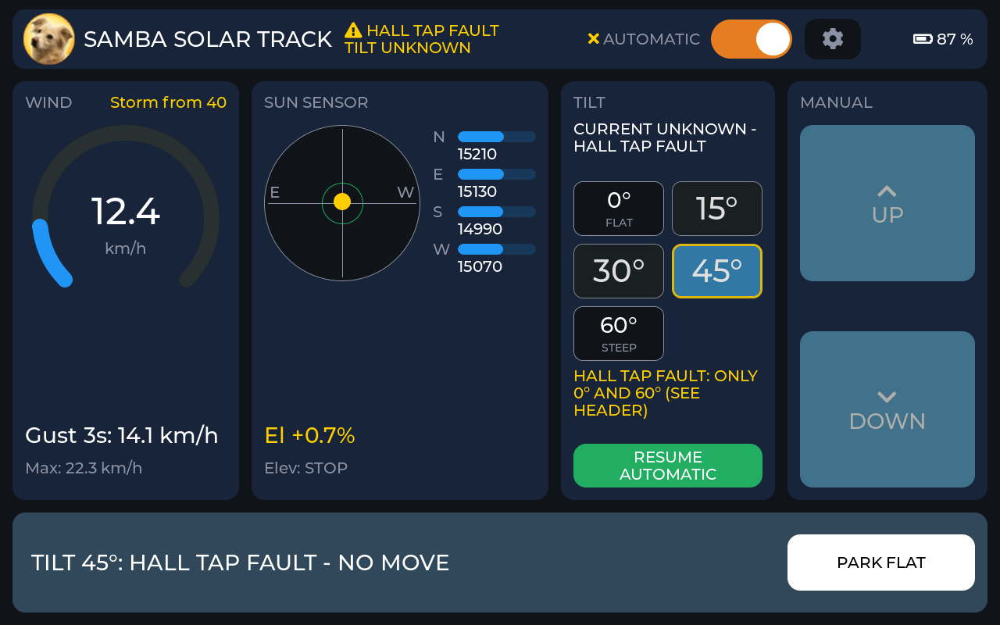
| Value (SETTINGS → COMMISSIONING) | Default | Permitted | Purpose |
|---|---|---|---|
| Hall tap present | no | yes or no | Switches on the evaluation of J22. Only switch it on if the HallTapBoard is connected. |
| Invert Hall count direction | no | yes or no | In case the two channels A and B arrive the other way round; the controller then counts backwards. |
| Hall steps per stroke | not calibrated | 1,000 to 2,000,000; 0 = not calibrated | How many Hall steps the whole travel from 0° to 60° has. Entered by the calibration. |
All three values can only be changed while no drive is moving.
[ 120.010][I][main ] Neigung auf Befehl: 30 Grad (vorher keine), Quelle Display [ 120.010][I][track ] Neigung 30 Grad: Bezugsfahrt noetig [ 168.420][I][motor ] Elevation: Endlage PLUS am Stillstand erkannt (Hall-Abgriff) nach 48410 ms [ 168.420][I][main ] Ausgang Elevation: RAUF -> STOP (Hall-Abgriff: Endlage am Stillstand) [ 168.420][I][hall ] Bezug Flachstellung (Stillstand, Stellung war unbekannt (Annahme: eigener Endschalter des Antriebs)), Stellung war unbekannt
The lines are an example in the firmware's format. With the Hall tap, the status line every 5 seconds ends with „| Neigung 30.2 Grad (Hall), Ziel 30“ (tilt 30.2°, target 30).
Start-up time 1.5 seconds and standstill time 1 second; accuracy 0.2°; interference filter 5 µs at no more than about 1,000 pulses per second and channel; the count direction of the pulse counter; end position window 3 % of the travel; tolerance during calibration 3 %; that the HAKIWO SCN4 synchronous controller can share the Hall line of drive 1 with the tap; that the memory which survives a restart holds on the board. If the elevation stands still while the tilt is unknown, the firmware assumes that the drive is at its own limit switch.
Pauses for the drives: the duty cycle (in preparation, not tested on the device)
Electric linear actuators must not run continuously, otherwise they get too hot. For the drives of the Samba Solar Rack 2.0-E Plus, the dealer HAKIWO specifies a duty cycle of 10 % and at most 2 minutes in one go (assembly manual, chapters 3.6 and 14.4). The 10-inch firmware enforces this for each drive by itself. This, too, has only been built and tested on the computer.
- Travel time accountThe firmware keeps an account for each drive. Every move is deducted from it, every second of standstill refills it (with one ninth of the time). When full, the account allows 120 seconds of travel in one go. Expected: In normal operation with short tracking moves you will not notice any of this.
- PauseWhen the account is empty, a pause begins. Expected: A move in progress stops. The status bar turns orange and shows “DUTY CYCLE PAUSE: DRIVE AVAILABLE AGAIN IN 13:30” (in manual mode, when “aligned” and during the rest time) or, with tilt on command, “TILT 45°: DUTY CYCLE PAUSE, RESUMING IN …” (Fig. 20). The remaining time counts down.
- Available againOnce 90 seconds of travel time have been saved up, the drive is available again. After a completely emptied account this takes about 13.5 minutes. Expected: The status bar shows the normal state again; a waiting move (tilt, calibration) continues by itself.
Even during the pause, the elevation moves flat when a storm comes, the anemometer fails or you select PARK FLAT. These flat moves have priority. Everything else waits: manual moves, tracking and the move to an angle. The automatic ends a tracking move in progress when the pause begins and does not start a new one during the pause. The device accepts commands from the browser, but the drive waits for the end of the pause.
Without limit switches, a move only reaches the end position if it runs the whole max. run time in one go. A reference move, the move to 0° or 60° and the reference move during calibration therefore only begin when the account allows a full move. Until then the display shows the waiting time. So do not change angles frequently.
The 90 seconds until release are an assumption (one full move from 0° to 60° with a reserve) and will be checked on the rack. After a restart the account starts full again; the travel time before the restart is not counted.
[ 930.100][W][motor ] Elevation: Einschaltdauer erreicht -> Pause, Fahrt wieder in 810 s (Flachfahrt bei Sturm, Windmesser-Ausfall und Parken bleibt frei) [ 930.100][I][motor ] Elevation: Fahrt PLUS wegen Einschaltdauer beendet [ 930.100][I][main ] Ausgang Elevation: RAUF -> STOP (Zustand MANUAL) [ 1740.110][I][motor ] Elevation: Pause der Einschaltdauer beendet, Antrieb wieder frei
Moving flat again during a storm (in preparation, not tested on the device)
Without limit switches on the tracker, the firmware remembers after a move over the whole max. run time: “This is the end position” (run-time end position). It then does not move any further in this direction. That is correct as long as the drives really moved. But if the power supply fails (the board then keeps running on the battery), the fuse of the drives trips, or the synchronous controller (for example HAKIWO SCN4) aborts a move, the contacts of the board still switch, only nothing moves, and the firmware wrongly believes the module is flat.
That is why the 10-inch firmware cancels a run-time end position in the “flat” direction and moves flat again:
- At the startAs soon as a storm begins, the anemometer fails or you select PARK FLAT (also right after switching on in one of these states). Expected: The elevation moves flat, even if according to the firmware it is already flat. Without limit switches, the contact stays closed for the full max. run time.
- Every 30 minutesAs long as the storm or the anemometer failure lasts, this is repeated every 30 minutes (not when parking). Expected: About every 30 minutes the contact for “flat” closes once more for the max. run time.
Each of these moves still ends at the latest after the max. run time. It has priority and also runs during a pause of the duty cycle. With limit switches fitted there is no run-time end position; then nothing changes. With the Hall tap switched on, the move ends after about 1.5 seconds if the elevation is verifiably already flat; if the tilt is unknown or the drive stops in the middle of its travel, it runs to the max. run time as without the Hall tap.
It has not been clarified whether the HAKIWO SCN4 synchronous controller accepts that the controller keeps pressing “flat” in the end position until the max. run time without reporting error code 15. The manufacturer has not replied to this (as of 12.10.2026); it will be checked on the rack. Until then this is an open point. With the Hall tap, a move into the end position ends about 1 second after no more pulses arrive, instead of only after the max. run time; the question then remains open for flat moves with unknown tilt and for operation without the Hall tap.
Without the Hall tap, the firmware cannot see whether the drives are moving. Moving flat again only helps during a storm, an anemometer failure and parking. With the Hall tap switched on, missing pulses are noticed (warning “HALL TAP FAULT” or „Antrieb steht ohne Endlage“ in the log); only drive 1 is monitored. The board's input “24 V present” only reports the voltage at J11: with the shared power supply this therefore also includes its failure, but never a tripped fuse of the drives.
[ 3600.000][I][track ] Zustand IDLE -> STORM (Auto ein, Boe 44.8 km/h, El +3, Az +0 Promille)
[ 3600.000][I][motor ] Elevation: Laufzeit-Endlage PLUS aufgehoben, neue Flachfahrt erlaubt
[ 3600.000][I][main ] Ausgang Elevation: STOP -> RAUF (Zustand STORM)
[ 3690.010][I][motor ] Elevation: Laufzeit-Endlage PLUS erreicht
… 30 Minuten später, der Sturm hält an …
[ 5400.000][D][track ] Zustand STORM haelt an: Flachfahrt wird erneut erlaubtWhether the log shows „PLUS“ or „MINUS“ depends on the setting “direction of the flat position”; by default flat = UP = PLUS.
The RearCircuitBoard_10 board can only be checked on the hardware (Chapter 9). Without firmware, no contact switches and no lamp lights. Do not connect the battery.
9Initial commissioning of the hardware
These steps check the board without firmware. Each step has a clear result. Only continue when it is correct. You carry out steps 4 to 7 with the board on the table, not yet on the display board.
- Unplug the batteryThe battery connector on the board stays unplugged. Expected: The battery is not connected to anything.
- Visual inspection and solder jointsLook at all solder joints of the terminals. Use the continuity tester on J3 to J6 to check that no pin is connected to its neighbour. Set jumper J16 according to the section “Anemometer”, J21 to 2-3. Expected: No solder bridge, both jumpers fitted.
- Connector checkBefore switching on for the first time, compare every connector with the terminal table and the picture of the board (Fig. 5): correct connector on the correct terminal, labelling matches. Then look at J7, J10, J14 and J22 from the side. Expected: Every connector sits flush on its header, no pin of the header is exposed, no connector protrudes beyond the end of a terminal. As soon as there is firmware for the 10.1-inch board, this also includes: at start-up no message about limit switches or lamps appears.
- Force the lock and measureConnect the board on its own (not yet on the display board) to 24 V, jumper J21 to 1-2. Measure with the multimeter at the solder joints of J1: pin 2 against pin 6. Expected: 3.8 to 4.1 V. If the value is higher, the lock is faulty: do not use the board.
- Operation and waiting time24 V off, J21 to 2-3, 24 V on again (the room should be 15 to 30 °C warm). Watch the voltage at J1 pin 2 against pin 6. Expected: First about 4 V; after 45 to 101 minutes (usually about 71 minutes) it jumps to 4.9 to 5.2 V.
- Cold testAt 4.9 to 5.2 V, briefly spray freeze spray next to the copper island at the top left, not directly onto components. Expected: The voltage immediately drops to about 4 V. After warming up it initially stays at 4 V; only after the waiting time does it rise to about 5 V again.
- Heat testCarefully warm the copper island above 37 °C with a hot-air tool on a low setting; check the temperature with a thermometer at the island, not above 60 °C. Expected: The voltage drops to about 4 V. After cooling down it returns to about 5 V after the waiting time. This test finds soldering faults that the freeze spray does not find.
- InstallFit the board onto the display board with spacers and pads according to Chapter 5. Expected: Spacers and pads sit under the island and do not slip; the board lies flat on all four spacers.
- Switch on the boardSlide switch of the display board to ON, switch on 24 V. Expected: The board starts (the display shows the picture of the factory software or stays dark without firmware). The board's charging lamp, if present, stays off: without a battery there is no charging, so it does not light up anyway (assumption).
- Switching outputs and limit switchesOnly with the firmware for the 10.1-inch board (in preparation): hold each button on the display and measure with the continuity tester through the plugged-in connector between the two wires (connector of the switching outputs); press each limit switch. Expected: Exactly the corresponding contact closes, exactly the pressed limit switch is reported.
Whether the overvoltage shutdown (Chapter 5) works can only be checked with a laboratory power supply on a sample; the firmware cannot check it later. This test is part of the measurement plan before ordering (Appendix 11 E).
Use freeze spray only briefly and from a distance of 10 to 20 cm, hot air only on a low setting. Do not touch anything at the 24 V terminals while voltage is applied.
10Terms simply explained
- End cap
- A plastic cover that closes the open end of an aluminium profile. The sun sensor holder replaces such a cap and also carries the sensor.
- Stripping
- Removing the plastic sheath (insulation) at the end of a wire over a certain length so that the bare metal makes contact in the terminal. Best done with wire strippers; the strands underneath must not be nicked.
- Termination resistor
- A resistor of 120 Ω between wires A and B of an RS485 line, at both of its ends. It prevents signals from being reflected at the end of the line.
- Standoff
- A small metal pillar with a thread. With an external and an internal thread it replaces a screw and at the same time holds a second board at the right distance. The HallTapBoard does not need any: it is screwed directly onto plastic bosses in its housing, so that no conductive connection is created through the mounting.
- Buck converter
- A circuit that makes a lower DC voltage out of a higher one, here the 5 V for the board out of 24 V. It loses little energy in the process and hardly gets warm.
- Ferrule
- A small metal tube that is crimped with pliers onto the stripped end of a fine-stranded wire. It holds the many thin strands together so that none sticks out and the wire sits firmly in the terminal.
- ADS1115
- A measuring chip. It converts the voltage of the light sensors into numbers the computer can work with.
- Aluminium profile (slot profile)
- A bar of aluminium with a constant cross-section, here 40 × 40 mm, with a slot on each side (slot 8) and a hole in the middle. The Samba Solar Rack, for example, is built from such profiles.
- Battery (lithium battery)
- A rechargeable battery. The battery of the 10.1-inch board has 3.7 V. Lithium batteries may only be charged within a limited temperature range, otherwise they age quickly or become dangerous.
- Start-up loss
- The part of every move in which the frame does not move yet, for example because relays pull in or the drive controller starts slowly. For tilt on command it can be entered under SETTINGS.
- Anode / cathode
- The two terminals of a diode. A diode lets current through in one direction only, from the anode to the cathode. On a light-emitting diode the anode is therefore plus and the cathode minus. On the board, a line or angle in the silkscreen usually marks the cathode; on the large diode D5 the cathode is the cooling tab.
- ASA / PETG
- Two plastics for the 3D printer. ASA withstands sun and heat up to about 100 °C and is therefore suitable for the housing of the HallTapBoard in the control box; PETG is easier to print but already gets soft from about 80 °C (values are guidelines, not looked up).
- Flashing
- Writing the firmware into the memory of the board, via a USB cable or over the network.
- Azimuth
- The rotation of the module from east to west.
- Assembly preview
- A picture of the fully assembled board that JLCPCB shows when ordering, before payment. In it you check whether every component is placed the right way round. For polarised components a red dot marks the side JLCPCB uses as reference; this is not always pin 1.
- Motion sensor
- Detects whether something is moving in front of a device. Here the built-in camera of the display does this: the firmware compares each image with the previous ones without storing it.
- Reference, reference move
- A reference is an end position at which the position is reliably known. The reference move goes there (usually flat) before tilt on command moves to an intermediate angle. After a reference the uncertainty is zero.
- Screensaver
- A dark, calm display that the screen shows when nobody has been in front of it for a while. It saves power and does not dazzle. A touch or a movement brings back the normal display.
- Gust
- A short, strong blast of wind. The controller uses the average over three seconds.
- Bootloader
- A small start program at the beginning of the memory. When switched on, it starts the actual firmware. It is contained in the factory image.
- Socket header / pin header
- Two counterparts for plugging boards together: the pin header has pins, the socket header matching openings. The RearCircuitBoard_10 board plugs with its pin header J1 into the socket header J8 of the display board.
- Codec (audio codec)
- A chip that converts numbers from the computer into an audio voltage. On the 10.1-inch board it is called ES8311; a small amplifier (NS4150B) uses it to drive the speaker.
- dBFS
- Measure of the volume of a digital sound: 0 dBFS is the loudest sound the codec can output, smaller (negative) values are quieter. 3 dB less means half the power.
- Spacer
- A small brass pillar with an internal thread at both ends. Here one lies without a screw between two thermal pads and conducts the temperature of the rear panel to the sensor on the board.
- Download mode
- A special start state of the chip in which it accepts new firmware via USB instead of starting it. The PC normally switches it on itself; by hand: hold BOOT, press RESET, release BOOT.
- Continuity tester
- A simple measuring device, or a setting on the multimeter, that beeps when two points are electrically connected. With it you check, for example, whether a contact is closed.
- Solid / fine-stranded
- A solid wire consists of a single, stiff wire. A fine-stranded wire (litz) consists of many thin strands and is flexible. Fine-stranded wires should preferably get a ferrule before being inserted into a spring terminal.
- Calibration
- The guided measurement of the two travel times on the display (Setup → SETTINGS → COMMISSIONING → CALIBRATE TRAVEL TIME). Without calibration, tilt on command only knows 0° and 60°.
- Duty cycle
- The share of time a drive may run without getting too hot. Here it is 10 % and at most 2 minutes in one go; after that the drive needs a pause. The 10-inch firmware enforces this by itself; only the flat move during a storm, an anemometer failure and parking also runs during the pause.
- Elephant foot
- In 3D printing, the first layer is pressed onto the print bed and becomes slightly wider. As a result, fine recesses on the underside of a part can close up. Many slicer programs have a compensation setting for this.
- qualified electrician
- A person with electrical training and experience who is allowed to work on mains voltage (230 V). Connecting power supplies, installing sockets or laying cables on the mains belongs in their hands.
- Electronic fuse
- A small chip that protects like a fuse but does not blow. If too much current flows, it limits it or switches off and tries again by itself after a short time. On the RearCircuitBoard_10 board, two of them protect the 24 V input (U16) and the 5 V to the display board (U15).
- Elevation
- The tilt of the module, from flat to steep.
- Limit switches
- A switch at the end of the travel. It reports: it cannot go any further.
- esptool
- The program from the chip manufacturer Espressif that writes firmware onto ESP32 boards. The browser pages use it in the background.
- Extended / Basic
- The two classes of the JLCPCB parts library. For every component type of the “Extended” class, JLCPCB charges a setup fee per order; for “Basic” it does not.
- Travel time
- The time the drive needs for the whole travel from 0° to 60° (steeper) or back (flatter). From it the firmware estimates the tilt.
- Spring terminal (push-in)
- A terminal without a screw: a spring in the connector clamps the wire. You simply push a stiff wire or a wire with a ferrule in as far as it goes. To release it, you press the small lever next to the opening and pull the wire out.
- Window comparator
- A circuit that checks whether a measured value lies between two limits, here whether the temperature is between 10 and 35 °C.
- Firmware
- The software that runs on the board.
- Flash
- The memory of the board that holds the firmware and the saved settings. It keeps its content even without power.
- Sense line (remote sense)
- Two thin additional wires on some power supplies, through which the power supply measures the voltage at a remote point and compensates for the loss on the line. With Samba Solar Track they stay at the power supply: if they were run to the drives, the voltage at the controller would be too high.
- Infill
- How densely the inside of a printed part is filled, in percent. 100 % means completely full; this makes a part heavy and strong, but uses a lot of filament.
- Galvanically isolated
- Two circuits without a conductive connection between them. A signal still gets across, for example with light in an optocoupler. This way the two sides can have different grounds and power supplies without interfering with each other.
- Lock nut
- A nut that holds a cable gland in the housing wall from the inside. The gland is pushed through the hole from the outside, the lock nut goes onto its thread on the inside; then both are tightened against each other.
- Frame G1 / G2
- The design of the Samba Solar Rack (position of the pivot axis). It determines which travel of the drive corresponds to which tilt. G1: Rack 2.0-D and 2.0-E; G2: 2.0-E Plus, 2.1 and 2.1 Plus. For other frames there is “linear” (an assumption).
- Threaded insert
- A small brass sleeve with an internal thread that is melted into a hole of a printed part with a hot soldering iron (also “heat-set insert”). After that, a metal screw can often be screwed in and out there without the thread in the plastic tearing out. The housing of the HallTapBoard has eight ruthex M3 inserts, the sun sensor holder two ruthex M4 inserts.
- Threaded rod
- A rod with a thread over its whole length, here M8 stainless steel. In the pendulum holder it is the axis around which the pendulum swings.
- Glitch filter (interference filter)
- A filter in the pulse counter that does not count very short pulses. At the pulse input J22, pulses shorter than 5 µs are treated as interference.
- GND
- Ground, the common negative pole of the circuit.
- Hall tap
- Picking up the pulses of the Hall sensors at the synchronous controller without disturbing them. The HallTapBoard does this. If “Hall tap present” is switched on under SETTINGS, the 10-inch firmware counts the pulses and thus knows the tilt (Chapter 8).
- Hall step
- Every change between LOW and HIGH (edge) on one of the two channels A and B. There are 4 Hall steps per pulse. “Hall steps per stroke” is the number of steps for the whole travel from 0° to 60°.
- Hall sensor
- A small sensor that detects a magnetic field. Many linear actuators have one on the motor: with every revolution it emits pulses. Whoever counts the pulses knows how far the drive has moved. With two channels (A and B) the direction can also be detected.
- HallTapBoard
- A separate small board for the control box (draft 0.5 with a 3D-printed housing, not manufactured yet). It picks up the pulses of the Hall sensors of drive 1 at the HAKIWO SCN4 synchronous controller and passes them on via optocouplers, galvanically isolated, as two potential-free contacts to the pulse input J22 of the RearCircuitBoard_10 board. It is powered from the 24 V of the drives (Chapter 6).
- HTTPS
- The encrypted form of the connection to a website. The device uses a built-in list of trusted authorities (certificates) to check that it really is talking to the project's site.
- Hiccup
- Named after the hiccup: in the event of a short circuit, the converter switches off, waits briefly and tries again, over and over, until the fault has been cleared. This way nothing gets too hot. Some power supplies behave the same way under overload; this is unsuitable for the shared power supply.
- HIGH / LOW
- The two states of a digital signal: voltage present (HIGH) or no voltage (LOW).
- Max. run time
- This is how long a drive may run in one go. With limit switches, a longer move is a fault; without limit switches, the end position is then considered reached (run-time end position).
- Hysteresis
- The gap between the switch-on and switch-off threshold. At the pulse input J22 the comparator switches in one direction at about 2.05 V and only at about 2.36 V in the other. Small interference on the line therefore does not create false pulses.
- I2C
- A connection of two lines (SDA and SCL) to which several chips are attached. Each has its own address.
- Cable shield
- A braid or foil around the wires of a cable. Connected to GND at one end, it keeps interference away from the wires.
- Cable gland (PG gland)
- A feed-through for a cable through a housing wall. When the cap nut is tightened, a sealing ring presses around the cable sheath: the cable is then sealed and secured against being pulled out (strain relief). “PG 11” is the size of the thread (steel conduit thread); each size only seals cables in a certain range of outer diameter, for the Lapp PG 11 4 to 10 mm.
- Freeze spray
- A spray from electronics shops that cools a spot strongly within seconds. With it you check whether a temperature sensor reacts correctly.
- Tap drill hole
- The hole into which a thread is cut. For M8 it is 6.8 mm; the central hole of many 40 × 40 aluminium profiles has exactly this size.
- Comparator
- A chip that compares two voltages and reports at its output which one is higher. On the RearCircuitBoard_10 board two of them are at work: in the charge lock (U18) and at the pulse input J22 (U22).
- Creepage distance / clearance
- The shortest path between two conductors across the surface of the board (creepage distance) or through the air (clearance). The longer it is, the harder it is for a leakage current, for example via moisture and dirt, to find a path.
- Ball bearing
- A ring with balls between an inner and an outer ring, so that something turns almost without friction. The 608 bearing (8 × 22 × 7 mm) is very common, for example in inline skates.
- Cooling tab
- A large metal surface on the package of a component that lies flat on the board and is soldered to it. Through it and the copper of the board, the component gives off its heat. On diode D5 the cooling tab is also a terminal, the cathode.
- Charger
- The circuit on the board that charges the battery from the 5 V. It only charges when its input voltage is high enough (about 4.5 V).
- Charge lock
- The circuit on the RearCircuitBoard_10 board that prevents the battery from being charged when it is too cold or too warm: it then lowers the 5 V for the board to about 4 V.
- Run-time end position
- Without limit switches on the tracker, an end position is considered reached when the contact was closed for the whole max. run time; the drive then stands at its own built-in limit switch. It can be wrong if the drives had no power at the time or their controller aborted the move. With the Hall tap there is the more accurate standstill end position instead.
- Derating
- In heat, a power supply delivers less than its rated power. How much is shown by a curve in the data sheet. That is why the power supply should be mounted in the shade.
- Light-emitting diode (LED)
- A small component that lights up when current flows through it in the right direction. It needs a series resistor that limits the current.
- Light guide
- A rod of clear plastic (here acrylic glass, PMMA) that passes light along like a pipe: what shines in at the bottom comes out at the top end. This way you can see a lamp in the housing from outside, and the hole in the lid is still closed.
- Light shaft
- A short tube from the lid of a housing to just above a lamp on the board. It guides the light to the hole in the lid, so that you can see the lamp from outside without opening the lid.
- Linear actuator
- A motor that extends and retracts a rod.
- Solder bridge
- Solder that unintentionally connects two neighbouring pins during soldering. What should be separate is then electrically connected. You find it with the continuity tester: it beeps between the two pins. To remove it, draw off the excess solder with the hot soldering iron and then check again.
- Manifest
- A small text file on the project's site. It names the latest firmware: version number, date, size, a checksum of the file and the signature. From this the device recognises whether there is newer firmware and whether the file is genuine and complete.
- Modbus RTU
- A widespread “language” for measuring devices. The board asks, the device answers with the measured value and a checksum.
- Overrun
- This is how far the drive keeps turning after being switched off. With the Hall tap, the controller measures the overrun for each direction and, when moving to an angle, switches off that much earlier.
- NC / NO
- Normally closed and normally open. Describes whether a contact is closed or open in its rest state.
- Tilt on command
- The elevation moves to a selected angle and stays there; the automatic pauses until you resume it. In the log the state is called POSITION. 10-inch version only, single axis only.
- NTC
- A resistor whose value decreases as the temperature rises. The board uses it to measure the temperature.
- Optocoupler
- A component that transmits a signal with light: a small light-emitting diode on one side switches a transistor on the other. Input and output are electrically isolated. The output acts like a potential-free contact.
- PCA9538
- A chip with eight additional inputs and outputs, controlled via I2C.
- Pendulum
- A body that is suspended so it can swing and, by its own weight, aligns itself vertically downwards. The pendulum holder uses this so that the anemometer always stands vertically.
- PhotoMOS
- An electronic switch without moving parts. A small light-emitting diode inside switches the contact; the two sides are electrically isolated.
- Polarity reversal
- Swapping plus and minus at the motor so that it runs backwards.
- Polymer capacitor
- A capacitor with solid plastic instead of liquid content. It lasts a long time and dampens voltage fluctuations well.
- Potential-free
- A contact that is not connected to any voltage of the controller. It behaves like a simple push-button with two terminals.
- Pull-up / pull-down
- A resistor that pulls a line to a fixed state as long as nothing is driving it.
- Pulse counter (PCNT)
- A part of the ESP32-P4 processor that counts pulses on a pin by itself, even very fast ones, without burdening the program. The 10-inch firmware uses it to count the pulses from input J22 when the Hall tap is switched on.
- Quadrature
- Two signals (channel A and B) that are offset from each other by a quarter period. From the order in which they change, the controller recognises the direction of movement.
- Pitch
- The centre-to-centre distance between two neighbouring terminals of a terminal block or pin header, for example 3.5 mm. Connector and terminal must have the same pitch.
- RearCircuitBoard_10
- The custom board for the 10.1-inch board ESP32-P4-WIFI6-Touch-LCD-10.1. It sits on the outside of the device's rear panel and plugs with the pin header J1 into its socket header J8 (in preparation).
- Relay
- An electrically controlled switch. A small current switches a large one.
- RGB lamp
- Three light-emitting diodes in one package: red, green and blue. Red and green together make yellow.
- RS485
- A robust data connection over two lines (A and B), suitable for long cables outdoors.
- Key (signing key)
- A pair of numbers that belong together. With the secret part, the developer signs a new firmware; every firmware carries the public part and uses it to check the signature. Only the developer has the secret part.
- Degree of protection (IP65, IP67)
- States how well a device is protected against dust and water. The first digit stands for dust (6 = dust-tight), the second for water (5 = water jets, 7 = brief immersion). A power supply outdoors needs a high degree of protection.
- Safety extra-low voltage (SELV)
- Short for “safety extra-low voltage”: a voltage so low that it is not dangerous to touch, and which is generated safely isolated from the mains, for example by a power supply approved for this. With Samba Solar Track, at most 30 V DC is present on the board.
- Self-latching
- A circuit that latches itself after being triggered. Here it keeps the 24 V input off until the 24 V is switched off.
- Self-test
- A short check that a freshly flashed firmware performs on itself: is the display running, and does the switching-output chip on the board answer (in the simulation the display is enough)? If Wi-Fi is switched on, the device must also have connected to the Wi-Fi at least once since the restart. Only then is the new firmware considered good. If it fails the check, the device returns to the previous firmware.
- Signature (digital signature)
- A sequence of numbers that can only be generated with the project's secret key. If anyone changes even a single character of the signed file, it no longer matches. This way the device only accepts firmware that really comes from the project.
- Fuse, self-resetting
- A fuse that becomes hot and high-resistance when there is too much current and closes again by itself after cooling down. It does not have to be replaced.
- Simulation
- A test mode without the RearCircuitBoard_10 board: the firmware only simulates tracker, sensors and drives and switches nothing.
- SMD
- Short for “surface-mounted device”: components that are soldered flat onto the surface of the board, without holes. JLCPCB places them by machine. The counterpart are through-hole parts such as terminals and pin headers, whose pins are inserted through holes in the board and then soldered.
- Soft termination
- Capacitors with flexible terminations. If the board bends, they crack less often.
- Voltage regulator
- A component that makes a fixed, lower voltage out of a higher, fluctuating one, for example exactly 5 V out of 24 V. A simple regulator (linear regulator) such as the TPS7B69 on the HallTapBoard converts the rest of the voltage into heat.
- Voltage divider
- Two resistors in series that divide a voltage in a fixed ratio. On the 10.1-inch board, R92 and R93 divide the battery voltage to one third so that the chip's measuring input can measure it.
- Voltage loss (voltage drop)
- Every line has a small resistance. When current flows, part of the voltage is lost on it: the longer and thinner the line and the greater the current, the more. The calculation includes the outgoing and return wire.
- Pluggable terminal
- A terminal in two parts: the header is soldered onto the board, the wires go into the loose plug. Usually a small screw holds them, at the switching outputs of the RearCircuitBoard_10 board a spring terminal. This way the board can be replaced without undoing the wires.
- Jumper
- A small plug that connects two pins lying next to each other. By moving it, a connection is switched on or off.
- Shaft collar
- A metal ring with a clamping screw that is screwed tight on a tube or shaft. It prevents a part from slipping or falling off.
- Star wiring
- Every load gets its own line directly from the terminals of the power supply, like the rays of a star. This way the large current of the motors does not flow over the controller's line, and each line has its own suitable fuse.
- Standstill end position
- An end position that the controller with the Hall tap recognises by the fact that no more Hall steps arrive although the output is switched on: after a start-up of 1.5 seconds, none for 1 second (assumptions). The move then ends immediately, not only after the max. run time. If, on the other hand, the drive stops in the middle of its travel, the controller ends the move without an end position („Antrieb steht ohne Endlage“).
- End wall
- The closed wall at the end of the header of a pluggable terminal. It holds the plug at the side so that it cannot be plugged in offset.
- Current limiting (CV+CC)
- A power supply with constant voltage (CV) and current limiting (CC) holds the voltage until the maximum current is reached; beyond that it limits the current and keeps delivering instead of switching off. The counterpart is a power supply with hiccup.
- Synchronous controller
- A control unit that makes two drives run at the same speed so that the frame does not twist, for example the HAKIWO SCN4 on the Samba Solar Rack 2.0-E Plus. The board only switches its push-button input.
- Dead time
- The pause between stopping and moving in the opposite direction.
- Driver
- A small program for the PC so that it recognises a connected device, here the board's USB chip CH343, as a port.
- Isolation gap
- A strip of the board without copper between two parts of the circuit that must not be conductively connected. On the HallTapBoard it is 7 mm wide; only the optocouplers bridge it, with light instead of current.
- Uncertainty
- How far the displayed tilt can be off at most, estimated. It grows with every move and is zero after a reference. From 6° the display shows “UNKNOWN”.
- Reverse polarity protection
- A diode in the supply input that only lets current through in the right direction. If plus and minus are connected the wrong way round, it blocks, and the circuit behind it gets no voltage and is not damaged. On the HallTapBoard both lamps then stay dark.
- Via
- A small plated-through hole that connects the copper layers of a board. On the RearCircuitBoard_10 board all vias are filled and capped so that no solder runs into them during soldering.
- Thermal pad
- A soft, electrically insulating cushion that conducts heat well and fills gaps between two parts.
- Web Serial
- A capability of some browsers (Chrome, Edge, Opera, newer Firefox) to talk to a device on the USB port. With it, firmware can be flashed without a separate program.
- Factory image (factory.bin)
- The file with everything an empty board needs to start: bootloader, memory partitioning and firmware. It is written to the beginning of the memory (0x0) and erases the saved settings.
- Preset angle
- A self-defined angle from 1 to 59° for tilt on command, in addition to 0°, 30° and 60°.
- Two-row pluggable terminal
- A pluggable terminal with two rows of terminals one above the other. At the switching outputs of the RearCircuitBoard_10 board, only two diagonally opposite pins are used: for UP and DOWN (J3, J4) two of four, for EAST and WEST (J5, J6) the two outer ones of six. Their plug does not fit any single-row terminal and not J11. A plug from UP or DOWN in EAST or WEST, or vice versa, even plugged in offset, touches at most one contact pin and switches nothing; a foreign plug therefore cannot bridge the contact.
11Appendix
Bill of materials, sources, costs, the pin header assignment, the measurement plan before ordering and the HallTapBoard (G). Status: draft 0.10 of 11 October 2026 (draft 0.9 of 8 October 2026, extended by the bridges at the sensor island and the pulse input J22).
A. Bill of materials (assembly variant smd)
JLCPCB assembles all 233 SMD parts (83 part numbers, of which 37 of the class “Extended” and 46 “Basic”; R92 and C38 stay unpopulated). In the assembly variant “voll” (full), JLCPCB additionally solders in the 15 terminals and pin headers (248 parts, 91 part numbers). The pulse input J22 (11.10.2026) adds 20 SMD parts and no new Extended type. The designators are also printed on the board's silkscreen.
| Component | Type | JLCPCB no. | Class | Qty | Designator | Purpose |
|---|---|---|---|---|---|---|
| Measuring chip | ADS1115IDGS (VSSOP-10) | C37593 | Extended | 2 | U1, U20 | Sun sensor (0x48); monitoring (0x49) |
| I/O chip | PCA9538PW, TI (TSSOP-16) | C201530 | Extended | 2 | U2, U8 | Switching outputs/ |
| Switching contact | PhotoMOS AQY212GS (SOP-4) | C415471 | Extended | 4 | K1–K4 | Switching outputs, 60 V / 1 A |
| Overvoltage protection | TPD4E1U06DBV (SOT-23-6) | C124691 | Extended | 6 | U3, U4, U6, U10, U13, U14 | Inputs, sensor supply, lamps, LED_5V |
| Current limiter | TPS2553DBV (SOT-23-6) | C55266 | Extended | 2 | U5, U9 | Sensor supply, lamps |
| TVS diode | SMAJ33CA (SMA), bidirectional | C115251 | Extended | 8 | D1–D4, D11, D12, D16, D17 | across the contacts; RS485 A/B; pulses A/B (J22) |
| RS485-Transceiver | THVD2410DR, TI (SOIC-8), ±70 V | C1849398 | Extended | 1 | U11 | Anemometer |
| Voltage regulator 3.3 V | AP7361C-33Y5-13 (SOT-89-5) | C460397 | Extended | 1 | U12 | V3V3_AUX |
| 5 V converter | LM5146RGYR, TI (VQFN-20) | C3188679 | Extended | 1 | U7 | 24 V → 5 V |
| MOSFET | CSD18543Q3A, TI (SON 3.3 × 3.3) | C840100 | Extended | 2 | Q2, Q3 | Converter switch |
| Power inductor | Würth WE-LHMI 74437368100, 10 µH | C1519857 | Extended | 1 | L1 | Converter |
| Shunt | Panasonic ERJ-8BWFR010V, 10 mΩ, 1206, 1 W | C2076185 | Extended | 1 | R53 | Current limit of the converter |
| eFuse 5 V | TPS259470ARPWR, TI (VQFN-HR-10) | C3662799 | Extended | 1 | U15 | Fuse and reverse blocking +5V |
| eFuse 24 V | TPS26600PWPR, TI (HTSSOP-16) | C544399 | Extended | 1 | U16 | Fuse at the 24 V input |
| Temperature switch | TMP390A2DRLR, TI (SOT-563) | C5219772 | Extended | 1 | U17 | switches off U16 above 110 °C |
| Comparator | LM2903BIDR, TI (SOIC-8) | C2869804 | Extended | 2 | U18, U22 | Window of the charge lock; pulse input (J22) |
| Counter | 74HC4060D (SOIC-16) | C5649 | Extended | 1 | U19 | Waiting time of the charge lock |
| Reference | TLV431BIDBZR, TI (SOT-23) | C398375 | Extended | 1 | U21 | Overvoltage shutdown |
| Fuse | BSMD2920-200-60V, self-resetting | C49233174 | Extended | 1 | F1 | 24 V input |
| Schottky diode | SS10P6-M3/86A, Vishay (TO-277A) | C2927414 | Extended | 1 | D5 | Reverse polarity protection |
| TVS diode | SMBJ30A (SMB) | C113998 | Extended | 1 | D6 | 24 V input |
| Zener diode | BZT52C5V1 (SOD-123) | C173407 | Extended | 1 | D14 | TMP_VDD |
| Zener diode | BZT52C5V6 (SOD-123), “Preferred” | C19077402 | Extended | 1 | D15 | Clamping V5_LOG (E36); check rotation and polarity in the assembly preview (assumption) |
| Diode | 1N4148WS (SOD-323) | C2128 | Basic | 1 | D13 | Timer U19 |
| NTC 10 kΩ | Murata NCU18XH103F60RB (0603) | C440252 | Extended | 2 | RT1, RT2 | Sensor of the charge lock; measurement by the firmware |
| Transistor NPN | MMBT3904 (SOT-23) | C20526 | Basic | 3 | Q1, Q11, Q12 | 24 V detection; self-latching |
| Transistor PNP | SS8550 (SOT-23) | C8542 | Basic | 1 | Q10 | Self-latching |
| MOSFET small | 2N7002 (SOT-23) | C8545 | Basic | 6 | Q4–Q9 | Charge lock, enable at U20 |
| LED green | KT-0805G (0805) | C2297 | Basic | 1 | D9 | READY |
| LED RGB | S4-3528RGBTA-A, gemeinsame Anode | C2827321 | Extended | 1 | D10 | FAIL |
| Electrolytic capacitor 100 µF 63 V | Ymin VKMD1001J101MV (8 × 10) | C487384 | Extended | 1 | C14 | 24 V input |
| Capacitor 2.2 µF 100 V | Samsung CL31B225KCHSFNE (1206, flexible terminations) | C16195971 | Extended | 8 | C15, C16, C56–C61 | Input bank (series pairs) |
| Capacitor 100 nF 100 V | Murata GCE21BR72A104KA01L (0805, flexible terminations) | C3011698 | Extended | 3 | C17, C39, C41 | HF at VIN_BUCK, input U16 |
| Capacitor 47 µF 10 V | Murata GRJ32ER71A476KE11L (1210) | C7198516 | Extended | 4 | C20, C21, C65, C66 | Output bank |
| Polymer 220 µF 16 V | Chemi-Con APXG160ARA221MF80G | C709481 | Extended | 1 | C22 | Output bank |
| Capacitor 10 µF X7R | Murata GRM188Z71A106KA73D (0603) | C2959727 | Extended | 1 | C31 | Output U15 |
| Capacitor 22 µF 25 V | 1206 X5R | C12891 | Basic | 1 | C28 | Output U12 |
| Capacitor 10 µF | 0603 X5R | C19702 | Basic | 4 | C1, C13, C26, C27 | Buffer |
| Capacitor 100 nF | 0603 X7R | C14663 | Basic | 29 | C2–C12, C18, C24, C25, C29, C30, C32, C42–C46, C48–C53, C71 | Interference suppression, decoupling capacitors (C71 at U22) |
| Capacitor 1 µF 50 V | 0805 | C28323 | Basic | 1 | C34 | VCC of the converter |
| Capacitor 1 µF | 0603 X5R | C15849 | Basic | 1 | C68 | Filter V5_LOG |
| Capacitor 220 nF | 0603 X7R | C21120 | Basic | 2 | C47, C67 | Timer U19 |
| Capacitor 47 nF | 0603 | C1622 | Basic | 2 | C33, C40 | Soft start U7, dVdT U16 |
| Capacitor 22 nF | 0603 | C21122 | Basic | 1 | C35 | Compensation |
| Capacitor 10 nF | 0603 | C57112 | Basic | 3 | C54, C62, C64 | Switch-off time U15, SHDN U16, self-latching |
| Capacitor 2.2 nF | 0603 | C1604 | Basic | 1 | C55 | U15 |
| Capacitor 1 nF | 0603 | C1588 | Basic | 4 | C37, C63, C69, C70 | Compensation; filter OV_REF; pulse filter (J22) |
| Capacitor 22 pF | 0603 C0G | C1653 | Basic | 1 | C36 | Compensation |
| Resistor 79.6 kΩ 0.1 % | Yageo RT0603BRD0779K6L | C861560 | Extended | 1 | R24 | Output voltage |
| Resistor 15 kΩ 0.1 % | Yageo RT0603BRD0715KL | C326733 | Extended | 1 | R25 | Output voltage |
| Resistor 324 kΩ 0.1 % | Yageo RT0603BRD07324KL | C861321 | Extended | 1 | R61 | Thresholds U15 |
| Resistor 64.9 kΩ 0.1 % | Yageo | C861510 | Extended | 1 | R62 | Thresholds U15 |
| Resistor 100 kΩ 0.1 % | Yageo | C122538 | Extended | 1 | R63 | Thresholds U15 |
| Resistor 332 kΩ | 0603, 1 % | C23139 | Extended | 1 | R67 | Threshold 110 °C at U17 |
| Resistor 4.7 kΩ 1206 (250 mW) | UNI-ROYAL 1206W4F4701T5E | C17936 | Basic | 2 | R102, R103 | Pull-up of the pulse contacts (24 V on the wire) |
| Resistors 1 % (0603, except R39 0805) | 200 Ω C8218 (4) · 1 kΩ C21190 (12) · 2.2 kΩ C4190 (6) · 330 Ω C23138 (8) · 10 kΩ C25804 (15) · 200 kΩ C25811 (2) · 120 Ω C17437 (1, 0805) · 680 Ω C23228 (2) · 100 kΩ C25803 (11) · 12 kΩ C22790 (3) · 300 kΩ C23024 (1) · 1 MΩ C22935 (2) · 33 kΩ C4216 (4) · 9.1 kΩ C23260 (1) · 0 Ω C21189 (1) · 150 kΩ C22807 (1) · 15 kΩ C22809 (4) · 6.8 kΩ C23212 (2) · 56 kΩ C23206 (1) · 20 kΩ C4184 (1) · 13 kΩ C22797 (2) · 47 kΩ C25819 (6) · 3 kΩ C4211 (1) · 2 MΩ C22976 (2) · 470 kΩ C23178 (1) · 8.2 kΩ C25981 (1) · 22 kΩ C31850 (1) · 100 Ω C22775 (3, R101, R114, R115) | see type | Basic | 99 | remaining R (plus R104–R115) | Measurement, pull-ups, series resistors, dividers, timer, blocking resistors R85/R93/R94 (provisional, E29); filter, threshold, positive feedback, pull-up and series resistor of the pulse input |
| not populated (DNP) | R92 2.2 Ω (C25369), C38 1 nF 100 V (C43847) | – | – | 0 | R92, C38 | Space for a snubber at the switching node |
Bottlenecks (stock at JLCPCB, snapshot): L1 C1519857 289 pcs (second source noted per E32: Changjiang FXL1040-100-M C475915 or Sunlord MWSA1004S-100MT C408487, both only after checking the dimension drawing, land pattern and keep-out area), U15 C3662799 1,061, D5 C2927414 1,733, C7198516 2,019 (4 per board), C3011698 2,442 (3 per board), C201530 2,743 (2 per board), U7 C3188679 3,583, R61 C861321 3,778, C709481 3,960, C5649 4,032, C544399 4,923; connector KF2EDGKS-3.5-2*3P C2923216 only 90 pcs at LCSC. Check date: numbers, classes and stock of the SMD parts at JLCPCB looked up on 7.10.2026 at 11:16–11:46 and 12:36–13:57 CEST, all 40 new or changed numbers again on 8.10.2026 at 09:57:56–09:58:04 CEST (manufacturer and type confirmed), the whole bill of materials with prices and stock on 8.10.2026 at 09:53–09:55 CEST (cost check); R80 C23178 (Basic) on 7.10.2026 at 15:15; D15 C19077402 and R101 C22775 after the rework E36 on 8.10.2026 at 10:49–10:51 CEST, again at 11:22 CEST (D15 Extended, 2,966,774 pcs; R101 Basic, 10,999,003 pcs). The numbers of the pulse input J22 looked up on 11.10.2026 at 14:02:05–14:02:21 and 14:23:18–14:23:21 CEST (stock at 14:23 CEST: C115251 204,621, C2869804 119,902, C17936 3,149,389, C25804 33,719,722, C22790 1,090,057, C25819 2,212,225, C22775 10,430,569, C1588 7,097,647, C14663 56,390,393, header C441172 2,162, plug C440848 1,778). Check again before ordering.
B. Hand-assembled parts and sources
JLCPCB does not ship loose parts. You order plugs, jumpers, the pin header J1 and the mechanical parts from LCSC (can be put in one package with the JLCPCB order) or from a dealer that delivers to private customers. In the assembly variant “smd” the headers are added; you solder them in yourself. The liability notice in Chapter 2 applies to this.
| Part | Type (Kefa or manufacturer) | JLCPCB/LCSC | Qty | Assembly variant | Alternative with delivery to private customers (gross price per piece, retrieved 7.10.2026) |
|---|---|---|---|---|---|
| J7–J10 header | KF2EDGR-3.5-2P | C441171 | 4 | smd yourself, voll JLCPCB | Reichelt MC 2 G 3,5 (Phoenix 1844210), 0.58 € |
| J15/J22 Grundleiste | KF2EDGR-3.5-3P | C441172 | 2 | ditto | Reichelt MC 3 G 3,5 (Phoenix 1844223), 0.87 € (price from 7.10.2026, not retrieved again for J22) |
| J14 Grundleiste | KF2EDGR-3.5-5P | C441174 | 1 | ditto | Reichelt MC 5 G 3,5 (Phoenix 1844249), 1.25 € |
| J2 Grundleiste | KF2EDGR-3.5-6P | C441175 | 1 | ditto | Reichelt MC 6 G 3,5 (Phoenix 1844252), 1.50 € |
| J11 Grundleiste | KF2EDGRC-5.08-2P (end walls) | C441236 | 1 | ditto | Reichelt MSTBA 2-G 5,08 (Phoenix 1757242), 0.60 €; fits the same footprint (E35) |
| J3/J4 Grundleiste | KF2EDGSR-3.5-2*2P | C2923260 | 2 | ditto | DigiKey DMC 1,5/2-G1-3,5 P20THR (Phoenix 1786837), 1.23 € net |
| J5/J6 Grundleiste | KF2EDGSR-3.5-2*3P | C2923261 | 2 | ditto | DigiKey DMC 1,5/3-G1-3,5 P20THR (Phoenix 1786840), 1.91 € (assumption net); Bürklin 62P6910, 2.38 € |
| J16/J21 Stiftleiste 1 × 3 | PZ254V-11-03P | C2937625 | 2 | ditto | Reichelt MPE 087-1-003, 0.09 € |
| Plug J7–J10 | KF2EDGK-3.5-2P | C440847 | 4 | both | Reichelt MC 2 ST 3,5 (Phoenix 1840366), 1.40 € |
| Plug J15/J22 | KF2EDGK-3.5-3P | C440848 | 2 | both | Reichelt MC 3 ST 3,5 (Phoenix 1840379), 1.99 € (ditto) |
| Plug J14 | KF2EDGK-3.5-5P | C440850 | 1 | both | Reichelt MC 5 ST 3,5 (Phoenix 1840395), 3.45 € |
| Plug J2 | KF2EDGK-3.5-6P | C440851 | 1 | both | Reichelt MC 6 ST 3,5 (Phoenix 1840405), 3.99 € |
| Plug J11 | KF2EDGK-5.08-2P-AA | C440880 | 1 | both | Reichelt MSTB 2-ST 5,08 (Phoenix 1757019), 1.40 € |
| Plug J3/J4 | KF2EDGKS-3.5-2*2P (spring terminal) | C2923215 | 2 | both | DigiKey DFMC 1,5/2-ST-3,5 (Phoenix 1790108), 2.68 € (assumption net); Bürklin 62P6731, 3.43 € |
| Plug J5/J6 | KF2EDGKS-3.5-2*3P (spring terminal) | C2923216 | 2 | both | DigiKey DFMC 1,5/3-ST-3,5 (Phoenix 1790111), 4.18 € (assumption net); Bürklin 62P6743, 5.13 € |
| Jumper 2.54 mm | – | C5305 | 2 | both | Reichelt JUMPER 2,54 SW, 0.02 € |
| J1 pin header 1 × 40, long pins (cut to 2 × 1 × 20) | BOOMELE 21 mm (C51353), chosen for 15 mm spacing; alternatives 15 mm (C52461, for 9 mm spacing in the 40 mm housing), 17 mm (C44526) | C51353 | 1 | both | Reichelt ECON SL40G1F (17.8 mm overall, dimension above the board not documented), 0.85 € |
| Brass spacer M3, AF 4.7 | Shuntian 13 mm for 15 mm gap; 6 mm / 8 mm for 8.2–10 mm | C551333; C551326 / C551328 | 1 | both | Reichelt ECON D3X08I5MT (AF 5 instead of 4.7), 0.11 € |
| Thermal pad 6 × 6 mm, 1.0/1.5 mm (2 pieces cut to size) | e.g. Thermal Grizzly Minus Pad 8 TG-MP8-30-30-10-1R / -15-1R, Arctic TP-3 | – (not a JLCPCB part, E31) | 2 | both | Reichelt TG-MP8-30-30-10-1R (30 × 30 × 1.0 mm, enough for all boards), 3.35 €; Alternate 2.90 € |
| Standoff M2.5 male/female thread | XHHD DTTZ4309, brass, 12 + 6 mm (with nut and washer 15 mm) | C50377852 | 4 | both | Amazon.de B0C1FY87PY (brass assortment, according to the seller with M2.5 × 12 + 6; contents not checked), 14.99 €; Reichelt RPI MOUNTINGKIT1 (standoffs 10 mm, too short for 15 mm), 3.50 € per set |
| Screw M2.5 | PM2.5X4 | C357536 | 4 | both | in the set RPI MOUNTINGKIT1; otherwise Kessler SZKM2,5X6MM (bag of 100), 4.29 € |
| Washer M2.5 (ISO 7089, at most 7 mm) | – | not found at LCSC | 4 | both | open, no price documented |
Kefa plugs are not available from dealers in the EU (Findchips, Reichelt; 7.10.2026). Whether Phoenix plugs fit the Kefa headers is not documented (assumption); in the assembly variant voll, Kefa headers sit on the board, Phoenix plugs only with this assumption. If you buy from Reichelt/DigiKey, it is therefore best to take header and plug from the same manufacturer (assembly variant smd). According to its help pages, LCSC also supplies private individuals (no restriction found, assumption).
C. Costs
Basis: production data draft 0.9 (both assembly variants), JLCPCB price calculator and parts library, LCSC prices, retrieved on 8.10.2026 between 09:51 and 10:02 CEST; exchange rate 1 EUR = 1.1177 USD (ECB reference rate of 7.10.2026). 5 PCBs are always manufactured, 2 or 5 assembled (Economic PCBA, 2–50 pieces). Net unless stated otherwise. Recalculated on 8.10.2026 for E36: the query applied to 212/81 and 226/89 parts respectively; D15 is a further Extended type (+3.07 USD per order, gross about +3.27 €), its part price is small and not included. The lines with the fee, the order and the totals already include these 3.07 USD.
| Item | smd · 2 | smd · 5 | voll · 2 | voll · 5 |
|---|---|---|---|---|
| PCB, 5 pieces (4 layers, ENIG, vias filled) | 41.98 USD | 41.98 USD | 41.98 USD | 41.98 USD |
| Basic assembly fee and stencil | 9.71 USD | 9.71 USD | 9.71 USD | 9.71 USD |
| Fee for Extended types (3.07 USD × 37 or 45) | 113.59 USD | 113.59 USD | 138.15 USD | 138.15 USD |
| SMD solder joints (648 per board) | 2.07 USD | 5.18 USD | 2.07 USD | 5.18 USD |
| Hand soldering of through-hole parts at JLCPCB | – | – | 5.22 USD | 7.68 USD |
| X-ray (U7, U15, Q2, Q3; assumption whether charged) | 13.12 USD | 16.40 USD | 13.12 USD | 16.40 USD |
| Parts at JLCPCB (with scrap and minimum quantities) | 87.58 USD | 175.99 USD | 94.72 USD | 190.96 USD |
| JLCPCB order (with 0.45 USD placement check) | 268.51 USD | 363.31 USD | 305.42 USD | 410.52 USD |
| Hand parts via LCSC (plugs, jumpers, J1, spacers, mounting; with smd also headers) | 26.59 USD | 46.89 USD | 16.98 USD | 30.87 USD |
| Shipping JLCPCB to Germany (estimate) + LCSC in the same package (estimate) | 30 USD | 30 USD | 30 USD | 30 USD |
| Total gross route A (hand parts via LCSC, thermal pad from Reichelt, 19 % import VAT, customs duty 0 € estimate) | 355 € | 478 € | 384 € | 511 € |
| per assembled board, route A | 178 € | 96 € | 192 € | 102 € |
| Total gross route B (hand parts from Reichelt/DigiKey, with their shipping) | 449 € | 705 € | 460 € | 684 € |
- Corrected on 22.10.2026, customs: not included in the totals are the parcel service's fee for advancing customs duty and import VAT (DHL Germany 2 %, at least 15 €) and the standard customs duty for assembled PCBs (rate not checked), together estimated at least 15 €.
- The setup fee for Extended parts is the largest single item; it is charged per order. That is why 5 boards cost only just over half as much per piece as 2. The assembly variant voll costs 37–47 USD more at JLCPCB (8 further Extended types, hand soldering), but saves soldering in 14 headers (since J22: 15).
- Addendum 11.10.2026, pulse input J22 (not in the table, estimate): no new Extended type, so no further setup fee. Parts per board about 0.29 USD (smd, JLCPCB unit price from 1 piece, without minimum quantities and scrap); with “voll” also the header (0.0745 USD) and 3 hand-soldered joints; the plug loose from LCSC 0.29 USD. The fee for about 50 further SMD solder joints amounts to a few cents. The PCB costs the same. The prices in the table have not been queried again.
- Compared with draft 0.7 around 135–170 € more (route A gross): 18 additional Extended types (+55 USD), twice as many components, the via filling (+17.38 USD) and more parts with X-ray inspection (assumption). The larger board costs nothing extra.
- Estimates: shipping (amount only visible in the shopping cart), customs duty (above 150 € goods value the standard tariff applies, rate for assembled PCBs not checked), X-ray item. Not included: vouchers, first-order discounts, the announced EU handling fee from November 2026, the M2.5 washers. Whether the stack-up JLC04161H-7628 counts as standard with Economic is not documented (the price calculator charges no surcharge); check when ordering. Surcharges that are only fixed after uploading the Gerber files (drill density, slots of the sensor island) are not known to the query.
D. Assignment of the pin header J1
Numbering as in the planning, pin 1 = 3.3 V; what counts is the position on the board. Waveshare's schematic and wiki number differently: if you connect according to them, you can put 5 V onto the board's 3.3 V. Check on the device before ordering.
| Pin | Signal | Pin | Signal |
|---|---|---|---|
| 1, 17 | 3.3 V from the board | 2, 4 | 5 V to the board |
| 3 | SDA (GPIO 7) | 5 | SCL (GPIO 8) |
| 16 | RS485 TX → DI (GPIO 21) | 18 | RS485 RX ← RO (GPIO 22) |
| 15 | RS485 DE/RE (GPIO 28) | 6, 9, 14, 20, 25, 30, 34, 39 | GND |
| 19 | Pulse A from J22 (GPIO 29) | 21 | Pulse B from J22 (GPIO 30) |
All other pins remain unconnected.
E. Measurement plan before ordering (excerpt)
- Charging current versus voltage (release): on the delivered board, measure the battery current at 3.8 to 4.4 V at J8, each for at least 2 hours, also with a cooled cell. Up to 4.1 V no measurable charging current may flow; otherwise the board will not be ordered in this form.
- Position of the battery and distance to the rear panel: determine the position of the sensor island, spacers and pads.
- Heat: transistor Q2 at 4 A and 30 V; if its top is more than 50 K above ambient, the switching frequency is lowered.
- Switching node: measure overshoot and ripple, fit the prepared snubber if needed.
- Overvoltage shutdown: tripping at 6.0 to 6.5 V, latching until the 24 V is switched off, required off time (specified: at least 30 seconds).
- Current consumption of the board in all operating modes, connector check step on a sample.
The complete measurement plan is in the project's README (section on the RearCircuitBoard_10 board, “Offen, Messplan und Restrisiken” – open points, measurement plan and residual risks).
F. Documents
Schematic, drawing and 3D views of the board are in the project under hardware/RearCircuitBoard_10/vorschau/ and the production data under hardware/RearCircuitBoard_10/fertigung/. For a test fit in the rear housing there is a printable model of the board with the tall components and plugged-in connectors under hardware/RearCircuitBoard_10/passprobe/ (assumption regarding position and connector dimensions).
G. HallTapBoard: bill of materials, sources and costs (draft 0.5)
The JLCPCB numbers have been looked up in the parts library: the carried-over ones on 12.10.2026 between 08:34 and 08:51, the new ones from draft 0.4 (U1, D1/D5–D8, D2, D10, C2 and the resistors 510 Ω and 5.1 kΩ) on 13.10.2026 between 18:02 and 18:12. Draft 0.5 needs no new number (the four resistors in front of the protection diodes are 10 kΩ, C25804). Class, stock and prices of all numbers queried again on 13.10.2026 at 18:46. JLCPCB assembles 45 SMD parts (20 numbers, of which 5 “Extended”). Documents: hardware/HallTapBoard/ (preview in vorschau/, production data in fertigung/), tool tools/halltap_erzeugen.py.
| Component | Type | JLCPCB no. | Class | Qty | Designator |
|---|---|---|---|---|---|
| Optocoupler | Lite-On LTV-817S-TA1-C | C109227 | Basic | 2 | U3, U4 |
| Comparator | TI LM2903BIDR | C2869804 | Extended | 1 | U2 |
| Voltage regulator 5 V (up to 40 V) | TI TPS7B6950QDCYRQ1 (SOT-223) | C108469 | Extended | 1 | U1 |
| Fuse, self-resetting | TECHFUSE nSMD005 (50 mA) | C70064 | Extended | 1 | F1 |
| Protection diode (both directions) | MDD SMAJ30CA | C110043 | Extended | 5 | D1, D5–D8 |
| Protection diode at 5 V | MDD SMAJ6.5A | C123817 | Extended | 1 | D10 |
| Diode (reverse polarity protection) | MDD M7 (1 A, 1000 V) | C95872 | Basic | 1 | D2 |
| LED green “5V OK” | KENTO KT-0805G (with R17 + R23, 2 × 1 kΩ: 1.0 to 1.4 mA) | C2297 | Basic | 1 | D4 |
| LED yellow “24V” | KENTO KT-0805Y (with R18 + R24, 2 × 10 kΩ: 0.9 to 1.4 mA) | C2296 | Basic | 1 | D9 |
| Resistor 1 kΩ (1206) | 1206W4F1001T5E | C4410 | Basic | 2 | R15, R16 |
| Resistors (0603) | 1 MΩ C22935 (2) · 10 kΩ C25804 (10) · 47 kΩ C25819 (2) · 5.1 kΩ C23186 (4) · 510 Ω C23193 (4) · 1 kΩ C21190 (2) | see type | Basic | 24 | R3–R14, R17–R28 |
| Capacitors | 1 µF 50 V C28323 (1) · 10 µF 25 V C15850 (1) · 100 nF C14663 (1) · 10 pF C1634 (2) | see type | Basic | 5 | C1–C5 |
| By hand | LCSC | Alternative for private customers (Reichelt, gross) |
|---|---|---|
| J1 Grundleiste KF2EDGRC-5.08-2P / Stecker KF2EDGK-5.08-2P-AA | C441236 / C440880 | Phoenix MSTBA 2,5/2-G-5,08 0.60 € / MSTB 2,5/2-ST-5,08 1.40 € |
| J2 Grundleiste KF2EDGR-3.81-3P / Stecker KF2EDGK-3.81-3P | C441183 / C440859 | Phoenix MC 1,5/3-G-3,81 0.87 € / MC 1,5/3-ST-3,81 1.99 € |
| J3 Grundleiste KF2EDGR-3.5-3P / Stecker KF2EDGK-3.5-3P | C441172 / C440848 | Phoenix MC 1,5/3-G-3,5 0.87 € / MC 1,5/3-ST-3,5 1.99 € |
Order list of the plugs: which plugs belong to which terminal, the minimum quantities you have to order at LCSC and what you should not mix is listed in hardware/HallTapBoard/STECKER-BESTELLLISTE.md (for the RearCircuitBoard_10 board correspondingly hardware/RearCircuitBoard_10/STECKER-BESTELLLISTE.md). Plug and header from the same manufacturer fit most reliably.
Costs of the board (prices from 13.10.2026, parts and PCB at 18:46; exchange rate 1 EUR = 1.1188 USD; PCB 70 × 40 mm, 5 pieces 3.10 USD, of which 2 or 5 assembled; shipping 30 USD is an estimate, 19 % import VAT included; corrected on 22.10.2026: not included are 3 € customs duty per tariff number, charged since 1.7.2026 on consignments to private customers up to 150 €, and the parcel service's fee (DHL at least 15 €), together estimated at 18 € or more):
| Item | smd · 2 | smd · 5 | voll · 2 | voll · 5 |
|---|---|---|---|---|
| JLCPCB order net (PCB 3.10 USD, fees, parts) | 35.90 USD | 39.25 USD | 49.49 USD | 53.84 USD |
| Hand parts via LCSC (plugs, with smd also headers) | 5.08 USD | 5.08 USD | 3.41 USD | 3.41 USD |
| Total gross, hand parts from LCSC | 75 € | 79 € | 88 € | 93 € |
| per assembled board | 38 € | 16 € | 44 € | 19 € |
| Total gross, hand parts from Reichelt | 86 € | 113 € | 96 € | 117 € |
The four resistors of draft 0.5 cost 0.07 to 0.17 USD more per order; the rounded euro totals stay the same. The safe power supply of draft 0.4 costs about 4 to 5 USD more per order than draft 0.3, mainly for an additional Extended number (3.07 USD) and the regulator (0.33 USD per piece).
Housing (gross prices from 13.10.2026, dealers delivering to private customers; shipping not included):
| Part | Quantity per housing | Source | Price |
|---|---|---|---|
| Threaded insert ruthex RX-M3x5,7 (GE-M3x57-001) | 8 | ruthex.de | 8.99 € per 100 |
| Screw M3 × 8 cheese head DIN 84 (Würth) | 8 | Kessler-Electronic SZKM3X8MM | 3.79 € per 100 |
| Washer M3, outer diameter 7 mm | 4 | Reichelt 433596 | 2.19 € per 100 |
| Cable gland Lapp SKINTOP ST PG 11, 4–10 mm, black (53015220) | 3 | Reichelt 158578 | 0,95 € |
| Lock nut Lapp SKINTOP GMP-GL PG 11, black (53019220) | 3 | Reichelt 285444 | 0,31 € |
| Screw M4 × 10 cheese head DIN 84 (length depending on mounting plate) | 4 | Kessler-Electronic SZKM4X10MM | 4.99 € per 100 |
| Filament ASA (or PETG), about 90 g | – | any | about 2 € (estimate) |
| Light guide: acrylic glass round rod (PMMA) Ø 3 mm, clear | 2 × 26 mm | Craft or model-making shop (sold by the metre) | not looked up (open) |
For one housing, glands and lock nuts cost 3.78 €; with full packs of the small parts, a one-off of about 24 €, which is enough for many housings.
If you order the HallTapBoard together with the RearCircuitBoard_10 board, shipping is charged only once. Details and reasoning are in the README (section “Platine HallTapBoard”).
12Licence and copyright
You may build Samba Solar Track for yourself. Nobody may make money with it without permission.
© Silvio Sternitzke, 10/2026. The whole project – firmware, schematic, board, drawings, logo and this manual – is licensed under Creative Commons Attribution-NonCommercial-ShareAlike 4.0 International, CC BY-NC-SA 4.0 for short.
Permitted
Building it for private purposes. Copying, sharing and modifying, as long as it is not done commercially.
Conditions
Name the author and the licence. Share modified versions only under the same licence.
Prohibited
Any commercial use by others: selling devices, boards, kits or the firmware, building it for payment.
The licence text in the file LICENSE in the project folder is binding. A summary in German is in LIZENZ.md. It also states what is not covered by this licence: the Waveshare documents, third-party software that is downloaded during the build, and, in the firmware for the 10.1-inch board, the table for switching on the display taken over from Waveshare (Apache License 2.0, licence text in LICENSES/Apache-2.0.txt). For commercial use you need the author's written permission.
The prohibition of commercial use applies to everyone who uses the project under this licence. The rights holder, Silvio Sternitzke, is not bound by it: he can sell the board himself or, by way of exception, allow others commercial use.
Today the project serves building it for private purposes. A commercial sale of the board, a kit or a device requires a separate review, for example: CE marking and EMC conformity (electromagnetic compatibility), registration under the German Electrical and Electronic Equipment Act (ElektroG, WEEE), RoHS (restriction of hazardous substances), product safety under the EU regulation GPSR and the German Packaging Act. None of these points has been checked or fulfilled.
The documents are provided without warranty. Building and operation are at your own risk. No liability is accepted for damage caused by improper soldering, reversed polarity or incorrect connection of external components, to the extent permitted by law (Chapter 2).